Yerlilerle, Fransızlarla, İngilizler için ve İngilizlere karşı savaştı; Amerika’nın ilk başkanı oldu
GEORGE WASHINGTON
(1732-1799)
“Hiçbir şey, disiplin eksikliğinden daha fazla bir orduya zarar veremez.
Ordular, sayısal çoklukları ile değil, disiplinleri ile diğerlerine üstün gelirler.”
George Washington
18. yüzyılın ikinci yarısında, 22 Şubat 1972’de, Virginia eyaletindeki bir çiftlik evinde hayata gözlerini açtığında, İngiliz Krallığına bağlı bir vatandaştı. Ama hayata gözlerini, bağımsızlığı kazanmak için İngilizlere karşı savaşmış bir ülkenin ilk başkomutanı ve ilk seçilmiş başkanı olarak kapatacaktı…
Amerikan Kara Kuvvetleri’nin kumandanı ve Amerika Birleşik Devletleri’nin ilk Başkanı George Washington, tüm zamanların en etkili askeri liderlerinden biri olarak sayılsa da, etkisi, verdiği büyük savaşlardan ya da uyguladığı dâhice stratejilerinden değil, liderliğinden kaynaklanıyordu.
Washington, Amerikan ordusunun komutanı olarak kendi ifadesiyle ‘bazen yarı aç, her zaman heyecanlı, bir ücret almaksızın ve bazı zamanlarda insan doğasının katlanabileceği her türlü acı çeşidine maruz kalan’ acemi askerlerden oluşan bir birliğe önderlik etmişti. Bu ‘yamalı bohça’ orduyla, sivil komutanları teskin etmedeki ve diğer ülkelerin desteğini kazanmadaki siyasi kabiliyetiyle birlikte Washington, dünyadaki en önemli ordulardan birini yenmiş ve Amerika Birleşik Devletleri’ne bağımsızlığını kazandırmıştı.
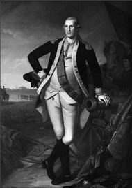
Hayata gözlerini İngiliz sömürgesi vatandaşı olarak açmıştı. Fransa ile İngiltere arasında patlak veren Yedi Yıl Savaşları’nda İngiltere adına Fransızlarla savaşmış, bağımsızlık savaşı esnasında da bu kez, Fransızlarla birlikte İngilizlere karşı mücadele etmişti!
İngilizler için cepheye koştu
Çocukluğu Westmoreland County’de geçen genç adamın hayatının yapı taşları, en büyük tutkusu olan coğrafyanın yanı sıra, askeri tarih ve tarımdı. Ayrıca matematik ve kadastro çalışmış ve bu çalışmaları sayesinde on altı yaşındayken Batı Virgina’da araştırma yapacak bir kadastro ekibine katılmıştı. 1749’da ise Culpepper County’nin resmi kadastro memuruydu.
Washington ilk askeri deneyimini Virginia milislerine binbaşı olarak atanmasıyla yaşadı. 1754 yılında Virginia Valisi adına Fransızlardan, İngilizlerin kendilerine ait olduğunu iddia ettikleri topraklardan çekilmelerini istemek için Ohio nehri vadisine küçük bir sefer düzenledi. Lakin ilk seferinde başarısızlığı tatmış, askerliğin ne menem bir şey olduğunu görmüştü. Fransızlar, birliğini kuşatmış ve Virginia’ya geri dönmek zorunda bırakmışlardı.
1755’e gelindiğinde Washington, yarbay rütbesiyle İngiliz General Edward Braddock’un yardımcısı olarak yeniden milis kuvvetlerine katılıyordu. 1758’de Fransızlar ve kızıl derili müttefikleri, bir ayaklanma çıkararak Braddock’u öldürdüklerinde, askerleriyle birlikte Ohio vadisine giderek duruma el koydu. Generalin birliğinden geri kalanları kurtarınca, rütbesi albaylığa yükseltildi. Mayıs 1756’da Fransa ve İngiltere Amerika kıtasındaki çatışmalarını, Yedi Yıl Savaşları altında Avrupa’ya taşıdıklarında, Batı Virginia sınır savunma güçlerinin kumandasını Washington devralıyordu. Bir süre sonra İngiltere, Yedi Yıl Savaşları’nı (1756-1773) finanse etmek için Amerika’daki kolonilerine ağır vergiler yüklemeye başlayınca, Amerika’nın bağımsızlığına ve Washington’un da kahramanlığına giden yol, açılmış olacaktı.
O günlerde bağımsızlık fikrinden çok uzak olan Washington, İngiliz Düzenli Ordusu’na katılmaya da çalışmış ancak sürekli geri hizmetlerde kalıp, milis kuvvetleriyle birlikte görev yapmaya zorlanınca, İngilizlere duyduğu öfkeyle Mount Vernon’a geri dönmüştü. 1758’de Burgesses Temsilciler Meclisi’ne seçildi ve on yedi yıl sürecek siyasi hayatı da böylelikle başlamış oldu.
İngilizlere karşı cepheye koştu
1775’de, İngilizlerin saldıkları vergilerle Amerika’daki koloniler açısından hayatı çekilmez hale getirmesiyle başlayan irili ufaklı çatışmalar, sırasıyla Fransa, İspanya ve Hollanda’nın Amerikalıların yanında yer almasıyla uluslararası bir mücadeleye dönüştü. Amerikan Bağımsızlık Savaşı başlamıştı. 1774 yılında toplanan II. Kıta Kongresi’nde Virgina eyaletini temsil eden Washington, askeri üniformasıyla kongreye gelerek hizmete hazır olduğunu gösterdi. Kongre, oybirliğiyle bir Kıta Ordusu (Continental Army) kurulmasını kararlaştırdı. Amerikalılar, eyaletlerden toplanan milisler ve çiftçilerden oluşan yirmi bin kişilik düzensiz bir Kıta Ordusu toplamayı başarsa da, İngilizlerin, kırk iki bin kişilik iyi eğitilmiş düzenli ordusunun yanı sıra, Alman kökenli otuz bin paralı askerden oluşan bir destek gücü vardı. Ordunun başına iyi bir aday aranmaya başlandığında, gözler Washington’a odaklandı. Kongre, ordunun başına askeri vasıflarından dolayı olmasa da, diplomatik kabiliyetinden dolayı George Washington’ı getirmişti. Amerikan kolonileri, Güney ve Kuzey olmak üzere ayrılıkçı ve düşmanca bölünmeler yaşamaya başladıklarında Washington, dünyanın en güçlü ordularından birine karşı Amerikalıları birleştirebilen bir lider olarak ortaya çıkacaktı. Üstelik Kuzeylilerin ağırlıklı olduğu toplama ordunun başına bir güneylinin getirilmesinin sembolik bir anlamı da vardı.
Washington, Temmuz 1775’teki Boston kuşatmasında koloni milislerinden oluşan ordunun kumandasını devraldı. Hızlı bir şekilde güçlerini organize eden ve kadastroluk görevi yaptığı dönemden kalma tecrübeleri ile araziye çok iyi
hâkim olan Washington, savunmasız durumdaki Dorchester Tepeleri’ni ele geçirdi. Boston’daki İngiliz işgalcileri bozguna uğratarak, şehri boşaltmalarını sağladı.
Amerikalıların İngilizlere karşı verdiği mücadelenin bir başka, belki de ‘yüksek vergilerden’ daha etkili bir ateşleyicisi daha vardı: Büyük bir kısmı Thomas Jefferson’ın kaleminden çıkan Bağımsızlık Beyannamesi. İnsan hakları ve adil yönetim ilkelerini merkeze alan ve 11 Haziran 1776’da yayınlanan bu beyannamenin yarattığı bağımsızlık ve adil yönetim coşkusu ile birlikte, Kuzey Amerika toprakları üzerindeki on üç kolonisiyle İngiltere arasındaki çatışma, bir bağımsızlık savaşına dönüşmüştü. “İnsanların yaradılıştan gelen vazgeçilmez haklarını ayaklar altına alan iktidarlar çıkarsa, yönetilen halkın, bu hakları garanti altına alan yeni bir idare kurmaları, tartışılmaz haklarıdır.” diyen Jefferson, ileriki yıllarda Amerika’nın üçüncü başkanı olacaktı.
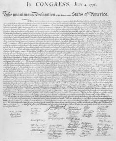
Thomas Jefferson’ın liderliğindeki bir grup tarafından hazırlanan ve İnsanların doğuştan gelen haklarını garanti altına alamayan ve ihlal eden yönetimlerin devrilmesinin ve yerine yenisinin kurulmasının tartışılmaz bir hak olduğunu öngören Özgürlük Bildirgesi, George Washington’un da başını çektiği bağımsızlık taraftarlarının en büyük motivasyon kaynaklarından biri olmuştu.
4 Temmuz 1776: Amerika Birleşik Devletleri sahnede
4 Temmuz 1776’ta Birleşik Devletler bağımsızlığını ilan edince, yeni bir dönem başlamış oldu. İngilizlere göre ‘asiler’, Amerikalılara göreyse ‘bağımsızlık savaşçıları’, artık yüksek vergilerin kaldırılması, yaşam şartlarının iyileştirilmesi için değil, bizzat kendi ülkelerine sahip çıkmak için savaşıyordu.
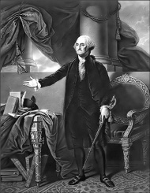
George Washington 1789 yılı Şubat ayında Amerika Birleşik Devletleri’nin ilk, hem de tarihte ilk ve son kez, oy birliği ile seçilen başkanı oldu. Görevde bulunduğu iki dönem boyunca demokratik bir hükümetin temel değerlerinin hayata geçirilmesine ağırlık vermiş, bugün bile yürürlükte olan bir birçok prosedür ve geleneği uygulamaya sokan isim olmuştu. Üçüncü dönem başkan olmayı reddederek ayrı bir gelenek başlattı.
İngilizlerin, kolonileri Hudson nehri boyunca ikiye ayırmak için bir merkez olarak New York’u hedef alabileceklerini tahmin eden Washington, bir savunma gücü hazırlayabilecek kadar yeterli bir zaman öncesinde şehre gelmişti. Ancak hem sayı hem de eğitim açısından yetersiz olan askerlerinin Kasım’da İngiliz ordusuyla yaptıkları savaşta yenilmesinin ardından kenti boşaltmak zorunda kaldı.
Washington Pennsylvania’ya geri çekildiği sırada üç bin kişilik ordusunun morali yerlerde sürünüyordu. Otuz dört bin kişilik İngiliz ordusu ise, Amerikalı isyancıların işini bitirmek için baharı bekliyordu. 1776 yılı Noel gecesinde Washington, hayatının en cüretkâr ve en meşhur kararını aldı: Delaware nehrini geçerek, Trenton garnizonundaki İngiliz ordusu ile çarpışacaktı. Washington ve askerleri, çok az bir kayıpla düşmanın dokuz yüz askerini ele geçirip, hemen ardından da Princeton’ta küçük bir İngiliz birliğini yendi.
Bu çarpışma kesin bir zafer değildi; ancak İngilizlere karşı savaşan bağımsızlık taraftarları için Boston’dan bu yana attıkları ilk pozitif adım olmuştu. Askere alımlar kolaylaşmış, askerin morali yükselmiş ve en önemlisi de İngilizlere karşı sürekli kaybeden bağımsızlık taraftarları, şeytanın bacağını kırmıştı. Bununla birlikte Washington, bir meydan muhaberesinde İngiliz ordusunu yenemeyeceğinin bilincindeydi. Diğer yandan İngilizlerle açıktan savaşmak zorunda olmadığının da farkındaydı. Zaman lehine işliyordu. Savaş ne kadar uzun sürerse, İngilizler, büyük ihtimalle verdikleri kayıplardan dolayı bir o kadar yorulacak, zayıflayacak ve kendileri açısından daha tehlikeli bir düşmanla savaşmak zorunda kalacaklardı.
Basit bir mantık yürüten George Washington, elde bir ordu bulundurduğu sürece, başarılı olsun veya olmasın, yeni doğmuş Amerika Birleşik Devletleri’nin hayatını devam ettirebileceğini görmüştü. 1777 yılında başkent Philadelpia’yı savunmak için küçük çaplı bir girişimde bulundu ve ordusunun bir kısmını, Kanada’dan yaklaşmakta olan İngilizleri durdurmak için yolladı. Her ne kadar Washington, Saratoga’daki bu büyük çarpışmada doğrudan yer almasa da yerinde kumandan seçimi, kumandanlarına yetki vermeye yönelik isteği ve savaşı kazanmak için gerekli olan malzemelerin temin edilmesi için elinden geleni yapması sayesinde, bağımsızlık yanlıları bu savaşı kazanmıştı.
1777-78 yılının uzun süren kışında Valley Forge’da bulunan Washington, mümkün olan her türlü desteği kabul etti. Avrupa’daki Amerikan temsilcileri, Washington’a yardım etmesi için yeni kişiler bulup gönderiyordu. Amerikan ordusunun tüfek eğitiminde büyük rol oynayan Beyaz Rus Baron von Steuben de bunlardan biriydi. 1778’e gelindiğinde her iki taraf da kuzeyde bir zafer kazanmak için yeterli gücü toplayamamıştı. Bunun üzerine İngilizler güneydeki kolonilere yöneldi. Washington, onları izlemektense, İngiliz kontrolündeki New York civarında mevzilenmeyi yeğledi.
Fransa da savaşa giriyor
Yedi Yıl Savaşları’nda Hindistan’ı İngiltere’ye kaptıran Fransa için intikam zamanı gelmişti. 1778 yazı sırasında Fransa, el altından verdiği desteği, İngiltere’ye karşı savaş açarak, aktif bir katkıya dönüştürdü. Bu esnada kumandanları güney eyaletlerinde savaşmaya devam etse de, Washington sabırla kuzeydeki bekleyişini sürdürdü. İki yıl sonra Washington’ın yakın silah arkadaşlarından General Nathanel Greene, İngilizleri Virginia’nın Yorktown yarımadasına çekilmeye zorladı. İngilizleri engellemesi için küçük çaplı bir gücü kuzeyde bırakan Washington, güneye doğru ilerlemeye başladı. Yedi bin kişilik Fransız ordusunun ve yeni gelecek bir takviyeyi veya kaçışları önlemek için kıyıda bekleyen otuz altı gemilik Fransız filosunun da desteğiyle, İngilizlerin sıkışıp kaldığı Yorktown’ı kuşattı. 19 Ekim 1781’de Washington ve ordusu, takati kesilmiş İngilizleri teslim alıyordu.
Bağımsızlık Savaşı sürecindeki Yorktown kuşatması, Washington’un dört başı mamur tek zaferiydi; ancak sonuca gitmekte yeterli olmuştu. Her ne kadar Bağımsızlık Savaşı, 1783 yılına kadar resmi olarak sona ermemiş olsa da tüm pratik sonuçları açısından Amerikalılar için Yorktown’da bitmişti. 1783’te imzalanan Paris Antlaşması’yla İngiltere, Amerika Birleşik Devletleri’nin bağımsızlığını tanıyor, Washington da komutanlığı bırakıyordu. Artık ulusal bir kahraman ve uluslar arası bir simaydı. Hem ülkesi hem de kendisi için yeni bir dönem başlıyordu.
Bağımsızlık kazanıldı, Başkanlık yolu açıldı
Bağımsızlık Savaşı’nın ardından İngilizler gitmiş, Amerikalılar, ülkelerini yeni bir sistem üzerinde inşa etme misyonuyla baş başa kalmıştı. 1787’de toplanan Kurucu Meclis’in başkanlığına George Washington getirildi. Washington, yürütme gücüne ağırlık veren bir anayasanın hazırlanıp hayata geçirilmesinde büyük rol oynarken, aynı zamanda günümüz Amerika’sının iki partili sistemini ortaya çıkaran siyasi tartışmalar da tüm hararetiyle devam ediyordu. Anayasa oylamasının ardından herkesin olduğu gibi Konfederasyon Kongresi delegelerinin aklından da başkan adayı olarak tek bir isim geçiyordu: George Washington.
30 Nisan 1789’da Amerikan tarihinde ilk ve son kez oybirliği ile seçilen başkan olarak göreve gelen Washington, ülkede ilk kez hayata geçirilen başkanlık sisteminin sindirilmesi için oldukça hassas bir süreç izleyecekti. Başkanlık makamını milli bütünlüğün ve ‘Amerikalı’ kimliğinin oluşmasında önemli bir sembol olarak gören Washington’un özenli siyaseti, günümüz Amerikan başkanlarının ülke içinde sahip olduğu büyük saygınlığın da temellerini atıyordu. Başkan Washington, 1789’da gerçekleşen Fransız Devrimi’ne karşı takındığı pasif tutumundan dolayı sıklıkla eleştirilse de, bu durum, 1792’de üç çekimser oya rağmen, ikinci kez başkanlığa seçilmesine engel olmayacaktı. Washington, her ne kadar büyük bir talep olsa da, üçüncü kez başkanlık koltuğuna oturmayı reddetmişti. II. Dünya Savaşı sırasındaki özel şartlardan dolayı Başkan Roosevelt hariç tutulursa, kendisinden sonra gelen başkanlar da aynı ilkeyi hassaslıkla gözetti. Zaten 1951’de de, başkanlık süresi, yasayla sekiz yılla sınırlanacaktı.
Washington 1799’da, emekli olduktan sonra yerleştiği Mount Vernon’da zatüreden öldüğünde, arkasında görkemli bir askeri-siyasi miras bırakıyordu.
Kadastro memurluğundan Kurucu Baba’lığa uzandı
Bugün kazanmış olduğu popülerlik, her ne kadar askeri kariyerinden değil de siyasetçi kimliğinden kaynaklansa da, Washington’un askeri boyutunun Amerikan tarihindeki yeri tartışılmaz. Eş zamanlı olarak hem kendisinden çok daha güçlü ve düzenli bir orduya karşı savaşan askerlerini bir bütün olarak kumanda edebilmiş, hem bölünmeye hazır bir Kongre’yi ve halkı memnun etmiş, hem de dönemin diğer büyük güçlerini bağımsızlığa giden yolda Amerika’nın tarafına çekebilmişti.
Washington, başkomutan olarak muharebeleri ayrıntılı planlarla kazanan dahi bir strateji uzmanı olmaktan ziyade, ordusunun tüm ihtiyaçlarını titizlikle ele alan bir organizatör gibi görev yapmıştı. Mütevazı imkânlarının tamamen farkında olan Washington, asker sayısının arttırılmasını ve orduya maddi açıdan destek sağlanmasını, dönemin kısıtlı imkânları ile gerçekleştirmiş, askerlerine giyecek, yiyecek, yakacak, barınak ve cephane temin edebilmek için en ince ayrıntılarla bile ilgilenmişti. Sayıca daha az olan Amerikan ordusunu ancak kaçınılmaz veya koşullar bakımından avantajlı durumlarda açık muharebe meydanına sürmesi, askeri başarılarının kilit noktasını oluşturdu. Diğer bir deyişle hep garantili oynadı.
İlginçtir, Napolyon, İskender ve Cengiz Han gibi birçok tarihi-askeri kişilik, savaş meydanlarında pek çok başarı elde etmiş olsalar da, hiçbiri geriye George Washington kadar uzun soluklu bir miras bırakmamıştı. Washington olmasaydı bir Kıta Ordusu; Kıta Ordusu olmasaydı, Amerika Birleşik Devletleri olmazdı. Amerikan kolonileri, İngiliz İmparatorluğu’nun bir parçası olarak kalırdı. Washington, hem askeri hem de siyasi arenada yaptıklarıyla bugün dünyanın en istikrarlı demokrasisi ve en güçlü ülkesi Amerika’nın temellerini atarak, ülkenin kuruluşunda birinci derecede rol oynayanlara verilen ‘Kurucu Baba’ unvanını fazlasıyla hak etmişti.
NOTLAR
- Amerika’nın en varlıklı başkanlarından biriydi.
- Çeşitli eyaletlere dağılmış on üç bin hektar arazisi vardı.
- Her ne kadar kendi adı verilen başkentin kurulmasında rol oynasa da, başkanlığı süresince New York ve Philadelphia’da yaşadı. Washington’da oturmayan tek Amerikan başkanıydı.
- Ordu içinde kendisini Amerika’nın başına kral olarak geçirmek isteyen bir akıma karşı çıktı.
- Hiçbir zaman hazır olmadıkça ordusunu cepheye sürmedi, hep uygun anı kolladı. Bu yüzden İngiliz General Charles Cornwallis ona ‘ihtiyar tilki’ lakabını takmıştı.
- Ömrü boyunca dişlerinden çekti. Elli yedi yaşına geldiğinde ağzında diş kalmamıştı. Gümüş bir tabakta taşıdığı fildişinden yapılma takma dişler kullandı.
- Amerika’nın ilk başkanının aynı zamanda Amerika’nın en yüksek rütbeli askeri olması gerektiğini düşünen Başkan Jimmy Carter’ın özel emri ile gıyabında altı yıldızlı generalliğe terfi ettirildi.
- Başkan seçildiğinde, Fransa’da bir kral, Rusya’da Çar, Çin’de İmparator, Japonya’da ise bir Shogun iktidardaydı. Bunlardan sadece başkanlık makamı günümüze kadar gelebildi.
- Resmi pullar üzerine resmi basılan ilk Amerikan Başkanıydı.
- Amerikan Anayasası’nı imzalamış iki başkandan biriydi.
- Yanında sürekli portatif bir güneş saati taşırdı. Balık tutmak ve tilki avlamak hobisiydi.
- Başkomutanken verdiği bir emirle orduda küfür edilmesini yasaklamıştı.
Napolyon’a denizlerde nefes aldırmadı, İngiltere’yi denizler hâkimi yaptı
AMİRAL NELSON
(1758-1805)
“Elinde iktidarı tutan adam
emrindekilere savaşıp savaşmamaları
gerektiğine dair fikirlerini soruyorsa,
içten içe savaşmak istemiyor demektir.”
Amiral Nelson
İngilizlerin denizlerdeki üstünlüğünün temeli, devrim ve imparatorluk dönemlerindeki Fransa’yla yapılan savaşlarda atılmıştı. Bir İngiliz amiralinin denizlerde kazandığı zaferler silsilesi, İngiltere’nin karada müttefikleriyle birlikte Fransa’yı yenemediği bir dönemde, Napolyon’un karşı durulamaz ordusunun İngiltere’yi fethedememesinin garantisi olmuştu. Daha sonradan ‘balina ile arslanın savaşı’ olarak tanımlanacak olan bu durum, şüphesiz ki, arslanın balinayı yenmesi durumunda, tarihin akışını bile değiştirebilir, bugünkünden çok farklı bir İngiltere ve Fransa görebilirdik. İngiltere’nin Napolyon Savaşları’nda kazandığı bu statü, aynı zamanda onun uzun soluklu ve değişmez bir strateji geliştirmesine de kapı açmıştı: Ne pahasına olursa olsun, diğer ülkelerinkinden çok daha kuvvetli bir donanmaya sahip olmak.
Bu donanma İngiltere’ye, üzerinde güneş batmayan imparatorluğunun dünyanın dört bir yanına dağılmış topraklarına ulaşma imkânı tanırken, aynı zamanda ana karayı, Napolyon’dan, Bismarck’dan, Kaiser Wilhelm’den ve son olarak da Hitler’den korumuştu.
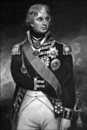
İngilizlerin en önde gelen kumandanlarından olan Nelson, Nil Savaşı’nda gösterdiği kahramanlıktan dolayı Sultan III. Selim’in de iltifatına mahzar olarak, Osmanlı tarihindeki ilk nişan olan ‘Osmanlı Hilali’ ile ödüllendirilmişti. Bu nişanı büyük bir gururla taşıyan Nelson, zaferiyle sonuçlanan Kopenhag Deniz Savaşı’nın ardından imzalanan ateşkes anlaşmasının altına, ‘Osmanlı Hilali’nin Şövalyesi’ şeklinde imza atıyordu. Aynı ifade, tabutunda da yer almıştı. Kendisini resmeden tabloların çoğunda, yakasında taşıdığı Osmanlı nişanı net olarak görünür.
Motivasyonun adı: Nelson Dokunuşu
Bu hayati stratejinin arkasındaki isim, İngilizlerin ulusal kahramanlarından Amiral Horatio Nelson’dan başkası değildi.
Askerlerine verdiği savaşma ilhamının eşsizliğini tanımlamak için literatüre ‘Nelson Dokunuşu’ (The Nelson Touch) şeklinde bir deyim girmesine neden olan Nelson, kariyeri boyunca deniz tutması hastalığından muzdarip bir denizci ve savaşlarda tek kolu ve tek gözünü kaybetmiş bir asker olmasına rağmen, şüphesiz ki tarihin gördüğü en başarılı kumandanlardan biriydi.
29 Eylül 1758’de Norfolk’da ailesinin onbir çocuğundan altıncısı olarak dünyaya gelen Nelson, henüz on iki yaşında Kraliyet Donanması’na girmişti. Denizcilik macerası, 1771’de, sıradan bir denizci ve dümenci olarak Raisonnable gemisine atanmasıyla başladı. İlk kaptanı, aynı zamanda dayısıydı da. 1777’de teğmenliğe yükselen Nelson, Batı Hindi’ne atanmış, Amerikan Bağımsızlık Savaşı esnasında Amerikalı ‘asilere’ karşı savaşmıştı. Haziran 1779’da, 20 yaşında geldiğinde ise Fransızlardan ele geçirilmiş, yirmi sekiz toplu Hinchinbroke firkateynin kaptanıydı. Nelson hayatının bu döneminde Nikaragua’daki İspanyol San Juan kalesine düzenlenen saldırıda yer almış, ilk kez yenilgiyi tatmış, ağır bir sıtma rahatsızlığı geçirmiş ve İngiltere’den bağımsızlıklarını kazanmaya çalışan Amerikalılara karşı savaşmıştı.
Aslına bakılırsa geride bıraktığı parlak kariyer göz önüne alındığında, hayatının başlangıç dönemi sayılabilecek bu dilimi oldukça sıkıcı ve sıkıntılı geçmişti. 1783’de, Güney Amerika kıyıları yakınlarında bulunan ve daha sonradan İngiliz sömürgesi olan Türk Adaları’ndaki Fransızları çıkarmak için yüz adamıyla birlikte başarısız bir girişimde bulunmuş, ardından Karayipler’de birtakım bürokratik görevler almış, hatta 1789’dan sonraki birkaç yıl komutanlık yapmayarak, yarım maaşa talim etmişti. Yarım maaş, barış zamanlarında sıklıkla başvurulan bir uygulamaydı. Ama Nelson’un bu sıkıntılı ve dingin yaşantısını, İngiliz Kanalı’nın öte tarafındaki bir başka asker değiştirecekti. Napolyon.
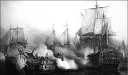
Nelson’un liderliğinde İngilizlerin zafere koştuğu Trafalgar Savaşı, Fransızların denizler üzerindeki iddiasını tamamen sıfırlarken, İngiltere’nin de yaklaşık bir asır sürecek tartışmasız üstünlüğünü başlatıyordu.
Nelson ile Napolyon; gece ile gündüz
Fransa’da Napolyon, ihtiraslı dış politikasıyla dünyayı fethe girişince, Nelson tekrar silah başı yaptı. 1793’de altmış dört toplu Agamemnon kalyonunun kumandanıydı. Kısa bir süre içinde tarihteki yerini belirleyecek savaşlar silsilesine başlayacaktı. İlk olarak Akdeniz’e atanan Nelson, Napoli Krallığı’nda üs kurdu. 1794’te Korsika’daki bir operasyon sırasında sağ gözüyle birlikte sağ kaşının yarısını da kaybetti.
1797 Nelson açısından zaferlerle dolu bir yıl oldu. İngilizlerin 14 Şubat’ta Cape St. Vincent Savaşı’nda kazandıkları zaferde büyük pay sahibiydi. Bu savaşta dinamik ve cesur manevra kabiliyetini sergilemişti. Sir John Jervis komutası altındaki İngiliz donanmasına ‘bir çizgide durma’ emri verilmiş; ancak bu emre uymayan Nelson, İspanyol donanmasının kaçmasını engellemek için gemisini doğrudan düşman üzerine sürmüştü. Ardından o zamana kadar pek görülmeyen bir şekilde, adamlarıyla birlikte önce bir İspanyol gemisinin güvertesine çıkıp, göğüs göğse savaşarak gemiyi ele geçirmiş, hemen ardından onu basamak yaparak, bir sonrakini ele geçirmişti. İngiliz denizcileri daha önce hiçbir amirali elinde kılıç, düşman güvertelerinde dövüşürken görmemişti. Bu tarzı onu bir efsane yapmaya yetecekti.
Rütbesi yükselirken, organları azalıyor
Bu zaferin hemen ardından Nelson’a bir şövalyelik nişanı olan Order of the Bath verildi. Aynı yılın Nisan ayında rütbesi, Kraliyet Donanması’ndaki dokuzuncu en büyük rütbe olan Mavi Amiralliğe yükseltilecekti. İngiliz donanmasında amirallik rütbeleri en aşağıdan en üste doğru farklı renklerle tanımlanıyordu. Yılsonuna doğru Santa Cruz de Tenerife’yi ele geçirmek için düzenlenen başarısız bir harekâtta Theseus’u kumanda etmekte olan Nelson, bir misket tüfeğinden çıkan mermiyle sağ kolundan vuruldu ve kol kemiği parçalandı. Dönemin tıp bilimi, bütün vücut azası yaralanmalarında, kangren olmasını engellemek adına söz konusu organın kesilmesini salık verdiği için Nelson sağ kolunu kaybetti. Daha sonraları Nelson’un geride kalan tek kolu için “Ben Lord Nelson’um, bu da benim yüzgecim.” dediği rivayet edilir.
Ebubakir Savaşı kahramanı Nelson’a Osmanlı nişanı
En büyük düşmanı İngiltere’nin, sömürgesi Hindistan’a giden yolunu kesmek isteyen Napolyon, Osmanlıların Memlükler aracılığıyla kontrol ettiği Mısır’a gözünü dikmişti. Napolyon’a göre Mısır, Cebelitarık ile birlikte İngiltere’nin sömürgelerine uzanan rotadaki en önemli istasyonlardan biriydi. Bu sırada Osmanlı tahtında III. Selim oturuyordu. Napolyon ünlü Mısır seferine başlayınca, İngiltere ve Osmanlı bu durumdan fazlasıyla rahatsız oldu. O esnada Osmanlı’nın Napolyon’la denizde cebelleşecek durumu yoktu. Bu iş, Nelson’un sırtına yüklenmişti. Kendisine verilen emir netti: Napolyon’a denizde nefes aldırmayacaktı!
Akdeniz’de ve hatta bir ara Cebelitarık’tan Okyanusa da çıkarak Napolyon’un donanmasını arayan Nelson, bir türlü düşmanını bulamıyordu. Adeta Akdeniz’de iki donanma köşe kapmaca oynuyorlardı. Hatta bir keresinde yan yana geçmişler, ama sis, olası bir çatışmayı önlemişti!
Ve Nihayet Nelson, Fransız donanmasını Mısır’ın Nil Deltası’ndaki Ebubakir koyunda kıstıracaktı. Tarihe Nil Savaşı olarak da geçen bu çatışmada Mısır seferindeki Napolyon’a denizden destek veren ve lojistiğini sağlayan Fransız donanmasının başındaki isim Amiral François-Paul Brueys D’Aigalliers’di.
Tarih 1 Ağustos 1798’i gösterirken, komutasındaki on dört parça gemiyle Fransız hatlarına yaklaşan Nelson, Fransız gemilerinin, sancak tarafları açık denize dönük olarak demirlemiş ve birbirlerine zincirlerle bağlanmış olduklarını fark etti. Fransızlar böylelikle İngilizlerin aralarından geçmesini engellemeyi planlıyordu. Ama büyük bir taktisyen olan Nelson, buna cevap vermekte gecikmeyecekti. Donanmasını ikiye ayırdı. İlk grup sahil ile İngilizler arasına girmiş, ikinci grupsa, doğrudan Fransızlar üzerine ilerleyerek topçu ateşine başlamıştı. Bu arada gecenin karanlığında da istifade eden Nelson, demirlemiş düşmana karşı, serbest hareket avantajını da kullanıyordu. Sonuçta Nelson, bu savaşta sağlam olan diğer gözünden kısmen yaralansa da, şiddetli bir çarpışmanın ardından Napolyon’un sudaki diğer ayağını kesip atmayı başarmıştı. Büyük Fransız kumandansa o esnada diğer ayağı ile karada Osmanlılara karşı savaşıyordu.
Nelson’un bu zaferi gerçekten denizcilik tarihi açısından takdire şayandı zira Fransızların, aralarında yüz yirmi toplu yüzen savaş makinesi, efsanevi L’Orient de olmak üzere, on yedi savaş gemisi vardı. Sonuç olarak Akka kalesi önünde de Osmanlılar tarafından durdurulan Napolyon’un Mısır seferi, tam bir hüsranla neticelendi. Denizden Nelson, karadan Osmanlı, Napolyon’a geçit vermemişti.
Nelson’un bu başarısı, Osmanlı padişahı III. Selim tarafından göz ardı edilmeyecekti. Mademki Nelson, dolaylı da olsa Osmanlı çıkarlarına hizmet etmişti, o halde ödüllendirilmeliydi. Selim, Osmanlı tarihinde ilk kez bir yabancı askere kavuklarından birinin sorgucunu ihsan etmiş, bununla da kalmamış, Osmanlı tarihinin ilk askeri nişanı olan ‘Osmanlı Hilali’ de bu büyük İngiliz denizcisine verilmişti.
Tarihçiler, savaşın stratejik önemine bakarak, Nelson’un Nil’deki bu başarısını kariyerinin en önemli olayı olarak görürler. Nelson, Nil Savaşı’nın ardından Kırmızı Amiralliğe yükselecekti.
‘Bazen kör olmaya hakkım var…’
Yıl 1801’di ve Nelson bu kez Danimarka donanmasına karşı savaşıyordu. Danimarka, İsveç ve Rusya’nın silahlı tarafsızlığını bozma adına gerçekleşen Kopenhag Savaşı esnasında, Danimarkalıların ateş gücünün çok yüksek olduğuna inanan komutanı Sir Hyde Parker’ın gönderdiği ‘ateşkes, geri çekil’ sinyalini gözardı ederek, yine kendine has askerlik tarzını sergilemişti. Nakledilenlere göre gelen sinyal karşısında kendisini uyaran Kaptanı Sir Thomas Foley’e dönerek, ‘Biliyorsun Foley, sadece bir gözüm var. Bazı zamanlarda kör olmaya hakkım var.’ demiş, ardından teleskopu görmeyen gözüne yerleştirerek ‘Herhangi bir sinyal görmüyorum.’ demişti.
Bu arada belalıları Napolyon, İngiltere’yi işgal etmek için asker yığarken, iki ülke arasında imzalanan Amiens Barışı, zaten sağlığı bozuk olan Nelson’ın emekli edilmesine kapı aralayacaktı. Lakin Nelson’a karada ölüm yoktu; Napolyon ile hesaplaşması henüz başlıyordu…
Amiens Barışı uzun sürmeyince Nelson’a tekrar barut ve tuz kokulu gemisinin yolu göründü. Akdeniz’deki İngiliz donanmasının başkumandanı olmuş, 1803’te atandığı HMS Victory ile Fransa’nın Toulon limanına seferler yaparak, neredeyse iki yıl karaya ayak basmamıştı! Bu arada Beyaz Amiralliğe terfi etmiş, sıralamada beş numaraya çıkmıştı.
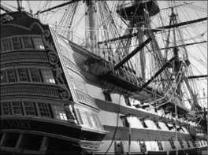
Nelson’u öldüren kurşun halen Windsor Kalesi’nde, İngiltere’yi Trafalgar’da zafere taşıdığı ve güvertesinde hayatını kaybettiği gemisi HMS Victory ise İngiltere’deki Portsmouth Kraliyet Donanma Dok’unda sergilenmekte.
Fransız filosu 1805’in başlarında Nelson’dan kaçarak, Batı Hindi’ne yöneldi. Nelson, ısrarlı takibine karşın Fransızları yakalayamayacaktı. Bu arada bir kez daha sağlık koşullarından dolayı emekliye ayrılsa da, yaklaşan büyük tehlike karşısında tekrar silah başı yaptı. Gelen haberlere göre Fransız ve İspanyol donanmaları birleşmiş İspanya’nın Cadiz limanında toplanmıştı. İngilizler kararlıydı. Her ne kadar Napolyon Fransa’sı Avrupa’yı ayaklar altına alıp bir dünya imparatorluğuna doğru koşsa da, denizleri onlara bırakmayacaklardı. Nelson, düşman donanmasına ölümcül darbeyi vurmak için hazırlanıyordu.
Trafalgar’da İngiltere’yi denizler hakimi yapıyor
Napolyon’un emriyle İngiltere ana karasına doğru yola çıkarak Cadiz Limanı’nı terk eden Fransız İspanyol ortak donanması, İspanya’nın Trafalgar Burnu açıklarında Nelson’ın donanması ile burun buruna geldiğinde, kovalamaca sona eriyordu. İngiliz uzun zamandır beklediği fırsatı yakalamıştı. Nelson, 21 Ekim 1805’te gerçekleşen bu son savaşının arifesindeki hislerini, günlüğüne şöyle yansıtacaktı:
Gün ağarınca doğu tarafında birleşik düşman filosunu gördüm. Sıkıntım gitti. Yelkenleri açma ve savaşa hazırlanma emri verdim, düşman güneye doğru ilerliyordu. Yedide düşman sıra halinde göründü. Taptığımız Tanrı’mız bizimle olsun, ülkeme ve Avrupa’ya büyük ve ihtişamlı bir zafer bağışlasın ve bunu gölgeleyecek bir kötü davranışta bulundurtmasın ve zaferden sonra İngiliz donanmasında insanlık en baskın duygu olsun. Kendim için, kişisel olarak hayatımı beni yaratana adadım ve O’nun inayeti inançlı bir şekilde ülkeme hizmet etmek için gayretlerimin üzerinde olsun. Kendimi, bana savunma hakkı veren O’na ve savunmak durumunda olduğum haklı davama emanet ediyorum. Amin, amin, amin.
Yirmi yedi gemili Nelson’un karşısında otuz üç düşman gemisi vardı.
Beyaz Amiral, filosuna meşhur 31. bayrak sinyalini verdi. Bu, “İngiltere herkesten görevini yapmasını bekliyor.” manasına geliyordu.
Nelson, yoğun top ateşine rağmen, iki ayrı hat üzerinde kurduğu donanması ile tek sıra halinde dizilmiş düşman donanmasını ortadan bölerek, ayrı ayrı kuşatmayı başarmıştı. Fransızların amiral gemisi Bucentaure vurulduktan sonra Nelson’un amiral gemisi Victory (zafer), Fransızların bir diğer ağır topu Redoutable’a doğru ilerledi. İki gemi de Redoutable’un direklerinin tepesindeki keskin nişancıların, Victory’nin güvertesine ateş açabilmesine imkân tanıyacak kadar birbirlerine sokulmuştu ki, bu nişancılardan birinin tüfeğinden çıkan tek bir mermi, efsane amiralin sol göğsünden girip, ciğerlerini parçaladı ve omurga kemiğine saplandı. Bu ağır yarasına rağmen Nelson, dört saat kadar bilincini yitirmedi; hatta ara ara kurmaylarından savaşın gidişatıyla ilgili bilgiler almaya devam etti. Amiral ölümle pençeleşirken, donanması, düşmana ölüm yağdırıyordu. Fransız İspanyol ortak donanması darmadağın olmuştu. Nelson, kariyerinin bu en büyük zaferini kutlamaya fırsat bulamayacaktı. İngiltere’nin zaferi kazanmasının kesinleşmesinden birkaç saat sonra, çok sevdiği denizde, amiral gemisinde hayata gözlerini kapadı.
Bu hezimetle Fransa, İngiltere’yi denizden işgal etme hülyasından ilelebet vazgeçtiği gibi, artık ciddi bir deniz gücü kimliğini de geride bırakmış oluyordu. İspanya da farklı değildi. Nelson’un denizlerdeki öfkesinden payını alan İspanyollar, “İspanya, senin gücün denizlere sahip olmandan gelir.” özdeyişinin tatlı hatırası ile baş başa kalacaktı. Dünya denizlerinin dev markaları olan bu üç ülkenin donanmaları arasında geçen bu kader savaşının şiddetini göstermesi açısından, sadece Victory’nin yelkenlerinin yüz yirmi kez Fransız topçusu tarafından dövüldüğünü söylemek yeterli olacaktır.
Her ne kadar birçok tarihçi, Trafalgar’ın kazanılmasında Nelson’un taktik dehasından çok, İngiliz ve İspanyol donanmasının ciddiyetsizliğinin ve Nelson’un şansının rol oynadığını iddia etse de, tarih, niyetlere göre değil, sonuçlara göre yazılıyordu ve İngiliz donanması, rakiplerini okyanusun sularına gömmüş, üstelik bunu tek bir gemi kaybetmeden gerçekleştirmişti.
Trafalgar zaferi ile 19. yüzyılın başında denizlerin o zamanki hâkim gücü Hollanda’nın yerini alacak İngiltere, yaklaşık yüz yıl boyunca okyanusların rakipsiz efendisi olacak, II. Dünya Savaşı’nın ardından bu rolünü Amerika’ya devredene kadar da görkemli donanmasıyla üzerinde güneş batmayan imparatorluğuna kol kanat gerecekti.
NOTLAR
- Kör olan gözünü korsanlar gibi bantla kapattığı iddia edilse de, bunu doğrulayan bir belge yoktur. Siperlik taktığı ise bilinir.
- Komutanlarına inisiyatif tanımasıyla meşhurdu. Fikirlerini çok önemserdi. Bu yüzden emrindeki gemilerde özel toplantı odaları yaptırmıştı.
- Tabutu, ezeli düşmanı Fransızlarla yaptığı savaşta ele geçirdiği ünlü L’Orient gemisinin direğinden yapılmıştı.
- 2002 yılının Trafalgar gününde yapılan açık arttırmada kılıcı 330 bin Pound’a satıldı.
- İyi bir taktisyen olmakla birlikte iyi bir stratejist olmadığı yönünde bir mutabakat vardır. Daha çok kalbi ile savaşan komutanlar sınıfında kabul edilir.
- İngiltere’nin Napoli sarayındaki büyükelçisi Sir William Hamilton’ın eşi Lady Emma Hamilton ile yaşadığı yasak aşk, İngiltere’de döneminin en büyük skandallarından biri olmuştu.
- 2002’de BBC tarafından yapılan ankette Tarihin En Etkili Üçüncü İngiliz’i seçilmişti.
- Cesedi bozulmaması için, Cebelitarık’tan Londra’ya brandy dolu bir fıçı içinde nakledildi.
- Londra’daki Trafalgar Meydanı’ndaki devasa anıtı 1840’da dikildi.
- Tarihe damgasını vuran birçok İngiliz’in yattığı St. Paul Katedraline defnedilmiştir.
Asker, konsül, imparator; Fransız Devrimi’nin savaş makinesi
NAPOLYON BONAPARTE
(1769-1821)
“Dünyada sadece iki güç vardır: kılıç ve ruh.
Uzun vadede ruh, her zaman
kılıca baskın çıkacaktır.”
Napolyon
Napolyon Bonaparte, Fransa İmparatoru olarak Avrupa’yı siyasi ve askeri açıdan yirmi yıldan fazla süre hâkimiyeti altına almıştı. Askerî dehası, kıtanın büyük kısmını fethetmesini ve Fransa’nın etkisini Asya ve Afrika’ya yaymasını sağlamıştı. Napolyon, sadece geniş topraklar fethetmekle kalmamış; aynı zamanda askerî, siyasi ve teknik konulardaki görüş ve uygulamalarıyla orduları ve hükümetleri etkilemiş bir isimdi.
Napolyon’un köklerinde, gelecekteki ihtişamına dair hiçbir işaret yoktu. 15 Ağustos 1769’da Corsica’daki Ajaccio kentinde hiçbir ‘Buonoparte’ın asker olmadığı küçük ama soylu bir Korsikalı-İtalyan ailesinin çocuğu olarak dünyaya geldi. Sıradan bir çocukluk yaşadı, aldığı ilk eğitim çoğunlukla ‘centilmenlik’ üzerineydi. Ailesi kibar bir soylu olarak, benzer akranları gibi, pür pak bir hayat sürdürmesini arzuluyordu, belki de. Ama o zamanlar küçük Napolyon’un, dünyayı değiştireceğini, üstelik bunu yaparken hiç de centilmence davranmayacağını bilmelerine imkân yoktu.
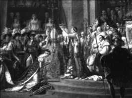
1804 yılı Mayıs ayında kendisini imparator ilan eden Napolyon, aynı yıl 2 Aralık gününde Paris’teki Notre Dame Katedrali’nde Papa VII. Pius’un elinden imparatorluk tacını alıyordu. Taç töreninde, imparatoriçe ilan ettiği ve 1796’da evlendiği General de Beauharnais’in dul eşi Josephine de vardı. İkilinin aşkı, tarihin en büyük magazin başlıklarından biri olacaktı.
Gençlik çağına adım atan Napolyon’un aklına subaylık hayali düşünce, Fransa’daki askeri akademiye yazıldı. On altı yaşında mezun olduğunda, asteğmen olarak topçu sınıfına girmişti bile. Bu esnada hem kendi hayatını hem de dünyayı değiştirecek gelişmeler yaşanıyordu. 1789 Fransız İhtilali gerçekleşmişti.
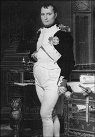
9 Kasım 1799’daki hükümet darbesiyle Birinci Konsül olan Napolyon, kısa zamanda ülkenin çehresini değiştirmeye soyundu. Merkez bankasının kurulması, eğitimin tabana yayılması ilk icraatlarından oldu. Özellikle de ‘Code Napoleon’ (Napolyon Kanunları) olarak bilinen Fransız Medeni Kanunu’nu hayata geçirerek Avrupa’nın hukuki çehresini değiştirmişti.
Fransız ihtilali hem onu hem dünyayı değiştiriyor
İhtilalle birlikte ordu içinde rütbesi ve sorumluluğu arttıkça, tam bir Jakoben oldu. Bu arada doğum yeri Korsika 1793’de bağımsızlığını ilan edince, Napolyon doğduğu topraklarla bütün bağlarını kopardı ve ailesini Fransa’ya taşıdı. Aktif bir devrimci olarak Cumhuriyete bağlı kalmayı tercih etmişti. Bu arada İtalyan kokan ‘Buonoparte’ soyadını, daha Fransız çalan ‘Bonaparte’a çevirmeyi de ihmal etmedi. O esnada Cumhuriyet dört bir yandan saldırı altındaydı ve bu, genç Napolyon’a, cesaretini ve askeri dehasını sergilemesi için fazlasıyla fırsat tanıyacaktı. Bu arada devrim karşıtı güçler, İngilizlerin Toulon’da bir deniz üssü kurmasına kapı aralamıştı. Napolyon cepheye koşmakta gecikmedi. İngiliz güçlerinin kuşatılmasına katıldı ve her ne kadar bir süngü yarası almış olsa da, komutanı ağır yaralanmış Fransız topçu birliklerinin başına geçti. Dağılma emaresi gösteren birlikleri başarıyla toparlaması ve keskin bir ateş gücü ile İngilizleri dağıtması, Fransa’ya zafer, kendisine saygınlık kazandırmıştı. Yirmi altı yaşındaki Napolyon, tuğgeneralliğe terfi etti.
Napolyon, Paris’te meşhur tek vuruşluk ‘peşrev esintisi’ (Peşrev: Bir tür top mermisi) atışını yaparak monarşi yanlısı bir ayaklanmayı bastırdığı 5 Ekim 1795’te, doğru zamanda doğru yerde olduğunu bir kez daha kanıtlıyordu. Ödül olarak İtalya Ordusu’nun kumandanlığına getirildi. 1796–97 yıllarında Lodi, Castiglione, Arcola ve Rivoli’de Avusturyalılara karşı zaferler kazanarak ününü pekiştirdi. Öyle ki, Lodi’deki savaşta bir köprünün karşı tarafında mevzilenmiş Avusturya artçı kuvvetlerine karşı bir süngü savaşını bizzat yöneterek kişisel cesaretini de göstermişti. Üst rütbeli komutanlarının bu tür göğüs göğse çarpışmalarına alışkın olmayan Fransız askerleri, kısa boylu cesur kumandanlarına ‘Küçük Onbaşı’ lakabını takacaklardı.
Zaferlerinin kazandırdığı avantajları iyi değerlendiren Napolyon, güneye doğru ilerledi. 1797 sonu itibariyle hem İtalya hem de Avusturya’yı kontrol ediyordu. Şimdi tüm Fransa’nın tanıdığı Küçük Onbaşı, kazandığı bu şöhretle yetinmeyecek; kariyerinin simgesi olacak şekilde hırsını, saldırganlığını ve kesin yargılı oluşunu sürdürecekti. Büyük hedefleri vardı; bu hedeflerin önünde ise esaslı düşmanlar. İngiltere gibi…
Napolyon, ordusunun Manş Denizi’ni geçerek İngiltere’yi işgal edecek kadar güçlü olmadığının farkındaydı. Ama bu onu durdurmayacaktı. İngiltere’ye gidemezse, İngiltere açısından hayati önem taşıyan topraklara gidebilirdi! Öyle de yaptı. Kırk bin kişilik ordusuyla Osmanlı yönetimindeki Mısır’a doğru yola koyuldu.
Cezzar Ahmet Paşa Napolyon’a geçit vermiyor
Napolyon Mısır seferiyle İngiltere’nin Hindistan ile zengin ticaret ilişkilerinin kavşak noktası olan bu bölgeyi ele geçirerek, düşmanın nefes borusunu kesmeyi hedeflediği gibi, Fransa’nın Akdeniz’deki ticari çıkarlarını da sağlama almak istiyordu.
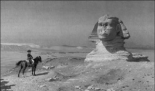
Ölümünden asırlar sonra Waterloo Savaşı’nın belgeselini yayınlayan History Channel, ‘Napolyon, kıyaslandığında Büyük İskender, Sezar, Büyük Friedrick ve Hannibal’dan daha fazla savaş görmüş ve kazanmıştır. Ama sadece Waterloo ile hatırlanması ne kadar acı!’ ifadesini kullanmıştı. Fransız Ressam Jean-Léon Gérôme’un Napolyon’u Mısır seferinde iken tasvir eden çalışması.
Aynı günlerde Amiral Horatio Nelson komutasındaki İngiliz donanması, Akdeniz’de köşe bucak Napolyon ve ordusunu arıyordu. Nefes kesen bir köşe kapmacanın ardından 1 Temmuz 1798’de Napolyon ve askerleri İskenderiye limanından Mısır’a çıktı. Napolyon, Piramitler Savaşı’nda Memlük ordusunu mağlup etmiş, Osmanlı piyadeleri ve topçuları, özellikle uzun menzilli ve daha keskin ateş gücüne sahip Fransız topçusu karşısında tutunamamıştı. Napolyon burada da, kendisine büyük şöhret kazandıran ‘kare dizilişini’ başarıyla kullandı. Buna göre Fransız askerleri, yüzleri dışa dönük şekilde kare düzeni alıyor, karenin merkezinde de topçu bataryaları bulunuyordu. Böylelikle Fransız topları, dört bir yana manevra yapıp büyük bir ateş gücü sağlarken, etraflarındaki piyadeler de, ateş desteğiyle topçulara koruma duvarı örmüş oluyordu. Bu şekli ile Fransızlar, rahatlıkla ayaklı bir tanka benzetilebilirdi.
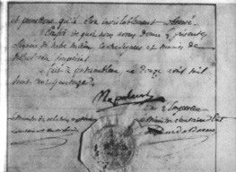
Napolyon’un hezimete uğradığı Rusya seferinin ardından imzaladığı ve kendisini Elbe adasına sürgüne mahkum eden tahtan feragat belgesi.
Bu arada Amiral Nelson, uzun zamandır peşinde olduğu Fransız donanmasını 1 Ağustos 1798’de Ebubakir Koyu’nda kıstırarak, parlak bir zafer kazandı. Napolyon’un Fransa ile denizden bağlantısını sağlayan donanması ağır bir yara almıştı. Napolyon, bu darbeye rağmen durmadı; Kahire’yi ele geçirdi ve Filistin’e doğru ilerlemeye başladı. Oradaki düşman da aynıydı: Osmanlı.
Küçük Onbaşı’nın komutasındaki Fransız ordusu, 18 Mart 1799’da Akka Kalesi’ni kuşattı. Kaleyi savunmakla sorumlu isimse, yetmiş yaşını devirmiş Cezzar Ahmet Paşa’ydı. 21 Mayıs’a kadar topçu ateşi ve yoğun yarma harekâtlarıyla kaleyi düşürmekte başarılı olamayan Napolyon, Kahire’ye çekildi ve ordusunu Mısır’da bırakarak, Fransa’ya döndü.
Mısır seferinin neticesinde Fransa, Akdeniz’de İngiliz deniz gücü ile baş edemeyeceğini görmüştü. Üstelik bu durum sadece Akdeniz’le sınırlı değildi. Denizaşırı topraklarını savunma konusunda acizlik hisseden Fransa, Avrupa’ya sıkışıp kalmıştı. Bu çaresizlikten olsa gerek, Amerika Louisiana’daki topraklarını, çok cüzi bir rakama (hektarı altı sente) Amerikalılara devretmek zorunda kalacaktı!
Önce konsül, sonra imparator…
Fransa’ya dönen Napolyon, yolsuzluğa bulaşmakla suçlanan iktidarı hedef alan ayaklanmaya katıldı. 9 Kasım 1799’da başarılı bir darbe ile Fransa’nın ilk konsülü olmuş, fiili olarak diktatör yetkileriyle donanmıştı. Bu ona kâfi gelmeyecekti. 1802’de anayasayı revize ettirdi. Kendisini ilk önce ‘ebedi konsül’, iki yıl sonra da imparator ilan ettirdi. Küçük Onbaşı, Fransa’nın tek patronu olmuştu!
Napolyon, giderek büyüyen etkisini, askeri güç ve siyasi bilinçle destekliyordu. 1800’de sıkı takip edilmiş bir zorunlu askerlik uygulamasıyla toplanmış yeni bir orduyla Avusturya’yı işgal etmiş, Ren nehrini Fransa’nın doğu sınırı olarak belirleyen bir barış anlaşmasını garanti altına almıştı. Ülke içindeyse Napolyon Kanunları olarak bilinen yeni bir anayasa hazırladı. Bu yasa, Devrim ile birlikte kazanılan hak ve özgürlükleri garanti altına alıyor, herkese inanç özgürlüğü sağlıyordu.
Bununla birlikte Fransa’nın saldırgan dış politikasında bir değişiklik yoktu. Kısa süren bir Avrupa barışının ardından 1803’de kılıçlar kınından çıkarıldı. İngiltere, Napolyon’a karşı savaşına kaldığı yerden tekrar başladı. İki yıl sonra Rusya ve Avusturya’yı da yanına almıştı.
Nelson’a bir kez daha yeniliyor, denizleri İngiltere’ye bırakıyor
1805’de Amiral Nelson ve Napolyon, donanmaları ile birlikte Trafalgar’da bir kez daha karşı karşıya geldi. Bu savaşta bir kez daha Nelson’a mağlup olan Napolyon, deniz yoluyla İngiltere’yi ele geçirme planlarından tamamen vazgeçmek zorunda kalırken, Nelson da, İngiltere’yi yaklaşık bir asır kadar denizlerin hâkimi yapacak bu savaşın ardından ulusal bir kahraman oluyordu. İngiliz donanması sayıca az olmasına rağmen, ilk kez denenen bir taktikle zafere ulaşmıştı.
Denizde kaybeden Napolyon, tekrar karaya yöneldi. Adeta bir savaş makinesine dönüşen ihtiraslı ve öfkeli Fansız, bir dizi savaşla 17 Ekim 1805’te Ulm’de Avusturyalıları, 2 Aralık’ta Austerlitz’de birleşik Avusturya-Rus ordusunu, 14 Ekim 1806’da Jena’da Beyaz Rusları ve 2 Şubat 1807’de Friedland’da da Rusları yenerek, Tilsit Anlaşması’nın yolunu açtı. Bu antlaşma ile Avrupa, Ruslar ve Fransızlar arasında paylaşılmıştı.
Cephede askerleriyle zaferden zafere koşan kahramanımız, öte yandan sosyal yaşamı şekillendirmekten de geri kalmıyordu. Etkinliği arttırılan Napolyon Yasaları ile Avrupa’nın Napolyon’a ait topraklarında Fransız Devrimi’nin ‘Özgürlük, Eşitlik, Kardeşlik’ ilkeleri yerleştirilmeye çalışılıyordu. Napolyon, feodalizm ve serfliğe karşı da savaş açmış, inanç özgürlüğünü sağlama almış, eğitimin ücretsiz olarak tabana yayılması için çalışmalara başlamıştı.
Fransa’nın iştahı dinmez imparatoru, 1807’de geniş topraklarına Portekiz’i ekledi. Ertesi yıl bu listeye İspanya’yı da eklemeye kalkıştı ancak İngilizler tarafından desteklenen İspanyollar, Peninsular olarak bilinen ve 1813’e kadar süren savaşlar serisinde direnmeyi başardı. Zafere ulaştığı birçok çarpışmada askerlerini kendisi idare etmiş olmasına rağmen Napolyon, burada kumandayı mareşallerine bırakmış, kendisi Orta Avrupa’da başka seferlere dikkatini vermişti. Peninsular, Fransızlara 300 bin askere mal olsa da, Napolyon’a net bir zafer getirmeyecekti.
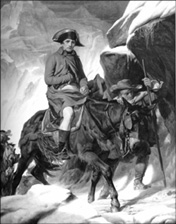
İlginçtir, hayatının büyük bir bölümünü, Fransız Devrimi’nin ‘Özgürlük, Eşitlik, Kardeşlik’ şeklindeki ilkelerini, çoğunlukla diktatör vari yöntemler kullanarak da olsa, yaymak için savaşlarda geçiren Napolyon’un sonunu getiren, devrimin en büyük meyvelerinden milliyetçilik ateşiyle kendisine karşı bilenen uluslar olacaktı.
Napolyon için sonun başlangıcı: Rusya
İspanya’daki ağır faturaya rağmen Napolyon’un durmaya niyeti yoktu. Rusya ile bozulan ilişkilerine karşılık, 24 Haziran 1812’de altı yüz bin askeriyle bu ülkeyi işgale koyuldu12. Napolyon, kış bastırmadan önce Polonya ve Batı Rusya’yı geçerek Moskova’ya girmeyi planlıyordu. Rus ordusu ise zamana oynuyordu. Uçsuz bucaksız Rus ovaları ve yaklaşan kışın, Napolyon’u yavaşlatacağını hesaplayarak, savaşmadan geri çekilmeye başladı. Napolyon, Rusların saldırıya geçmesini bekleyerek, kendisi açısından altın değerindeki vakti heba ediyordu. Bu arada Moskova yolunda yapılan Smolensk muharebesini kazansa da, Rusları yine pes ettirememişti. Kurnaz Çar, Fransızları peşine takmış, Rusya’nın içlerine doğru çekiyordu. 7 Eylül 1812’de yapılan Borodino Muharebesi’ni de kazanan İmparator Napolyon, Moskova’ya girdi. Belki Rus ordusunu da ele geçirebilirdi ancak amansız kışın ve Rusların, düşmanın yararlanmasını önlemek için geri çekilirken bütün tarım ürünlerini yok etmesine dayalı ‘arazi yakma taktiği’nin (scorched-earth policy) üstesinden gelemedi.
Napolyon Moskova’yı ele geçirdiğinde ganimeti, tamamen yakılmış ve terk edilmiş bir şehrin yanı sıra işgalci bir ordudan daha acımasız olan ve yakıcı soğuğunu enselerinde hissettiren kıştı. Şehri almanın Napolyon’a faturası ağır olmuş, ordusunun dörtte birini; yüz elli bin askerini kaybetmişti. Bir süre sonra milliyetçilik duygusu kabaran Rus halkı gerilla savaşına başladı. İşler sarpa sarıyordu. Nihayet 19 Ekim 1812’de Moskova’yı boşaltarak geri dönmeye karar veren Napolyon, ordusunu tarihin en büyük kırımlarından birine mahkûm ediyordu. Uzun zamandır bekleyen Ruslar, karşı saldırıya geçti. Bir yandan düşman bir yandan da açlık ve soğuk, Fransızların canına okumaya başladı. Altı yüz bin askerle Rusya seferine çıkan Napolyon’un sadece elli bin askeri kalmıştı ve bunlardan sadece on bini savaşacak durumdaydı. Rusya seferi, büyük kumandan açısından tam bir felaketle sonuçlandı. Napolyon’un yenilmezliği düşüncesi büyük yara almış, Fransız ordusu Ruslar önünde bozguna uğrarken, Fransa içinde de Napolyon’a yönelik homurtular yükselmeye başladı.
1813 yılının ilkbaharında Rusya, İngiltere, Beyaz Rusya ve İsveç, Fransa’ya karşı birleşti. Bu kez Napolyon’un karşısında, Fransız devriminin çocuğu milliyetçilik akımının ateşiyle yanıp tutuşan ve zorunlu askerlik gibi Napolyon icatlarını hayata geçirmiş, bilenmiş bir düşman koalisyonu vardı. Napolyon, bu tehditle başa çıkabilmek için emekli askerler ve acemiler de dâhil olmak üzere, elindeki tüm imkânları kullanmak zorunda kaldı. Zekice bir savaş yürütmesine rağmen Ekim 1813’te Leipzig’de yenilgiye uğrayarak, Fransa’nın doğusuna çekilmeye mecbur oldu. Moskova’nın ardından ağır bir yara daha almıştı. Nihayetinde mareşallerinin baskısıyla 11 Nisan 1814’te tahttan çekilmeyi ve Elbe adasına sürgüne gitmeyi kabul etmek zorunda kalacaktı.
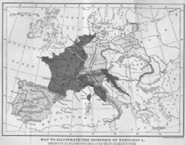
Napolyon dönemi Fransa’sını gösteren bir harita.
Küllerinden yeniden doğuyor…
Ancak Napolyon’un bu kadar erken pes etmeye niyeti yoktu. Sürgünde fazla kalmayacaktı. 1815 yılı Mart ayında Elbe’den kaçarak Fransa’ya döndü. Kral XVIII. Louis tarafından Napolyon’u yakalamak için gönderilen Mareşal Michel Ney kumandasındaki ordu, eski imparatorun safına geçince, dengeler değişti. Kısa bir süre içerisinde kazandığı zaferlerle konumunu tekrar sağlama alan Napolyon’un eski yoldaşları kılıçlarını kınlarından çıkararak kendisine katılmakta gecikmedi. Ancak kahramanımızın yeni hükümranlığı sadece yüz gün sürecekti. Zira kendisi ve ordusu, 18 Haziran 1815’teki Waterloo Savaşı’nda13 General Wellington ve Gebhard von Blücher komutasındaki İngiltere-Almanya ittifakı karşısında dağılınca, Napolyon efsanesi de dibe vuruyordu. Perişan olmuş Napolyon’a bir kez daha sürgün yolu göründü. Güney Atlantik’te, acımasız bir İngiliz valinin idaresindeki St. Helen Adası’na gönderildi.
5 Mayıs 1821’de 51 yaşında ölmeden önce, bir zamanlar Osmanlı İmparatorluğu’nu, Rusya’yı, İngiltere’yi, Afrika’yı ve hatta neredeyse tüm dünyayı ele geçirmek isteyen ihtiraslı imparatordan geriye sadece hasta, yaşlı ve yatalak bir ihtiyar kalmıştı. Kendisinden geriye kalanlar, Kral Louis-Philippe’in emriyle, Les Invalides’e gömülmek üzere 1840’ta Paris’e getirildi.
En büyük silahı karizmasıydı
Çağının en iyi askeri ve tüm zamanların en iyilerinden biri olan Napolyon, aslına bakılırsa yenilikçi bir lider değildi. Cephede bilinenlerden daha ölümcül hiçbir silah kullanmadığı gibi, farklı stratejiler de geliştirmemiş, buna karşın, koordinasyon, yakın denetim, etkin kurmaylar seçme ve güçlerin birleştirilmesi yoluyla ordunun performansını hep en üst seviyede tutmuştu. Her şeyden önemlisi Napolyon, bir ordunun başarısının askerlerinin ruh haline bağlı olduğunu kavramıştı. Sıcak çatışmalara bizzat katılması, karizması, doğal liderliği ve cesareti, Avrupa’da savaş meydanlarında o güne kadar görülmemiş bir mücadele ruhu yaratmıştı.
Taktiklerini daha çok hızlı ve şok manevralar üzerine kuran Napolyon, birliklerini, her biri bağımsız hareket edebilen birimler şeklinde düzenledi. Askerleri bir anda yürüyüş formatından savaş pozisyonuna geçebiliyor ve ek bir komut almadan savaşa girebiliyordu. Napolyon, bu birliklerin her birinin başına mücadeleciliğiyle öne çıkmış kumandanlar tayin ediyordu. Savaşlarda şansın da önemli bir unsur olduğunu kabul eden Fransız lider, Genelkurmay Başkanı Louis Alexandre Berthier yardımıyla harekâtlarını planlıyor, astlarını kendisi bilgilendiriyor ve savaş sırasında kumandanlarına özerlik tanıyordu.
Napolyon, yarattığı tehditle küçük ülkeleri bir araya gelip birleşmek zorunda bıraktığı için, aynı zamanda Almanya ve İtalya’nın kurulmasındaki en büyük etken olarak da kabul edilebilir.
Sıklıkla çabuk heyecanlanan, hırslı ve deli biri olarak nitelenen Napolyon, kendisini tamamen Fransa’nın ilerlemesine ve kendi terakkisine adamıştı. Kişinin kendi reklamını yaptırmasının ilk örneklerinden olan Napolyon, Fransa’nın en iyi sanatçılarını ve yazarlarını, başarılarını övmekle görevlendirmişti! İlginçtir, her ne kadar seferlerinde asker sivil ayrımı yapmaksızın acımasızlığını sergilese de, ele geçirdiği topraklarda yaşayanlara o güne kadar hiç görmedikleri özgürlükler sağlamıştı.
Toprak kazanımlarıyla Batı’yı tek bir çatı altıda toplama yolunda Hitler’den bile daha başarılı bir lider olan Napolyon, bir taraftan Antik Roma İmparatorluğunun doğuda yaptıklarını tekrarlamak isterken, aynı zamanda Fransız Devrimi’nin tohumlarını Avrupa’ya ekmek için de çaba gösterdi. ‘Fransız devriminin saldırgan ve şımarık çocuğu’ olarak da tanımlayabileceğimiz Napolyon, Avrupa’da fırtına gibi esmiş, tutucu imparatorlukların, devletlerin karabasanı olmuştu. Milliyetçiliği ve Fransa’da hayat hakkı tanımadığı liberal düşünceleri silah zoruyla Avrupa’ya yaymak istemişti. 1792–1815 arasındaki Fransız Devrimi Savaşları, Napolyon’un elinde bütün Avrupa’yı Fransız hegemonyasına sokmayı hedefleyen emperyalist bir kaldıraç niteliği kazanmış, aynı zamanda bu savaşlar hürriyet kavramının bütün Avrupa’ya ve özellikle kitlelere yayılmasını da kolaylaştırmıştı.
Hollanda kökenli Amerikalı tarihçi ve gazeteci Hendrik Willem van Loon, The Story of Mankind isimli kitabında Napolyon’u ‘savaş delisi bir diktatör’ olarak tanımlasa da, Avrupa’nın birçok yerinden genç insanların onun safında savaşa katıldığını hatırlatarak şu tespiti yapar: “Bu insanlar sadece macera aramıyordu. Aynı zamanda Napolyon ve ordusunu, Ortaçağ’ın baskıcı rejimlerine karşı savaşan, hurafenin yerine mantığı oturtmaya çalışan özgürleştirici bir güç olarak görüyorlardı…”
NOTLAR
- Savaş meydanındaki ilk hedefi, toprak ya da mevzi kazanmaktan ziyade, doğrudan düşmanı yok etmekti.
- Sevgilisi Josephine’e yazdığı mektup, Britanya’daki Christie’s Müzayede Evi’nde 3,8 milyon sterline (yaklaşık 10 milyon TL) satıldı.
- İsviçreli bilim adamları, Napolyon’un iddia edildiği gibi arsenik zehirlenmesinden değil, mide kanserinden öldüğü sonucuna vardı.
- St. Helen’de sürgündeyken İngiliz basınında kendisi hakkında yazılanları merak ettiği için İngilizce öğrenmeye başlamıştı. Kont Emmanuel de las Cases’den ders alan imparator, sıklıkla okul çocuğu gibi olmaktan sıkıldığını söylüyordu.
- İlk sürgüne yollandığı Elbe Adası’nın mülkiyeti kendisine verilmişti.
- Sürekli olarak kendisininkinden daha büyük orduları yendi.
- Hollanda, İtalya, Almanya ve İspanya’da Fransız uydusu krallıklar kurarak, başlarına kardeşlerini ve yakın akrabalarını yerleştirdi.
- Her ne kadar papanın tacı imparatora giydirmesi gibi bir gelenek olsa da, Napolyon imparatorluk tacını Papa VII. Pius’un elinden alarak kendi başına yerleştirmişti.
- İlki 1796’da Josephine de Beauharnais, ikincisi 1810’da Habsburg Hanedanı’ndan Marie Louise olmak üzere iki kez evlendi. İkinci evliliğinden 1811’de yasal varisi II. Napolyon dünyaya geldi.
Dünyayı ‘özgürleştiren’ kızıl diktatör
JOSEF STALİN
(1878-1953)
“Evet Stalin bir caniydi. Ama zekası, detaylara hakimiyeti, kurnazlığı ve en azından savaş
yıllarında gösterebildiği insani hassasiyetiyle Roosevelt’ten daha donanımlı, Churchill’den daha gerçekçi ve bazı açılardan da
en etkili savaş lideriydi.”
W. Averell Harriman
(Amerika’nın II. Dünya Savaşı
yıllarındaki Moskova’daki Büyükelçisi)
21 Aralık 1879’da Gürcistan’ın Gori kasabasında bir çocuk doğdu: Josef Vissarionoviç Cugaşvili. Ayakkabı kunduracısı babası Beso ve terzilik yapan annesi Keke, onun bir din adamı olmasını istiyordu. O ise, dünyanın en kanlı diktatörlerinden biri ve II. Dünya Savaşı’nın en tartışmalı ‘kahramanı’ oldu.
Hitler ve Mao ile birlikte 20. yüzyılın en dehşet verici kıyımlarının mimari olan Rus lider, 1941-45 yılları arasında, Rusların diliyle Büyük Vatanseverlik Savaşı boyunca Sovyet Kızıl Ordusu’nun başkomutanı olarak, Amerikan Başkanı Franklin D. Roosevelt ve İngiltere Başbakanı Winston Churchill ile birlikte, II. Dünya Savaşı’nın ‘üç büyüğünden biri’ olmuştu. 1945’te kendisini ‘Generalissimus’ (generaller generali) olarak atayan diktatör, gençliğinde bir süre Tiflis’te bir ilahiyat okuluna devam etti. O dönem kendisinden Ortodoks bir din adamı olması bekleniyordu. Oysa genç Stalin, kendisini ölümünden yarım asır sonra bile kitaplara malzeme yapacak bir hayatın temellerini atmakla meşguldü. 1899 yılında devrimci akımlara karışınca, İlahiyat okulundan atıldı. İlki 1902’de olmak üzere, Çarlık rejimine muhalefetten birkaç kez tutuklandı. Kimi iddialara göre bu kovuşturmaların çoğundan her defasında yoldaşlarına ihanet ederek paçayı kurtarmayı başaran Gürcü devrimci, 1905’de Transkafkasya Rus devrimine katıldı. 1912’de St. Petersburg’a taşındı ve burada Pravda (gerçek) isimli Bolşevik gazetesinin ilk editörlerinden biri oldu. 1913 yılında ömür boyu hapis cezasıyla Sibirya’ya gönderildi; ancak 1917’deki kızıl devrimin ardından çıkarılan genel afla özgürlüğüne kavuştu. Aynı dönemde İsviçre’den sürgünden dönen diğer bir devrim figürü Lenin’le birlikte Sovyetler Birliği’nin kaderinde söz sahibi olacakları süreç de başlamış oluyordu.
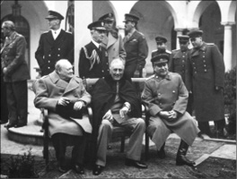
Dünyanın en büyük katillerinden biri olarak tarihe geçen Sovyet lideri Stalin (sağdaki), döktüğü onca kana rağmen, tarihin bir ironisi olsa gerek, II. Dünya Savaşı boyunca Sovyet Kızıl Ordusu Başkomutanı olarak, kendisi gibi bir diktatör olan Hitler’in durdurulmasında ve Nazi işgali altındaki toprakların özgürleştirilmesinde büyük rol oynamıştı. Tabi, sonrasında bu toprakların büyük bir kısmını dolaylı ya da doğrudan hakimiyeti altına alsa da, tüm bunlar, Stalin’in tarihin en etkin askerleri arasında yer almasına engel olmayacaktı.
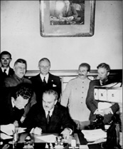
Sovyet Dışişleri Bakanı Molotov, Rus-Alman saldırmazlık paktını imzalarken, Stalin’in (ayakta, sağdan ikinci) memnuniyeti yüzünden okunuyordu. Anlaşma çerçevesinde imzalanan ve dünyadan gizlenen bu protokolle, Polonya ve Doğu Avrupa, Rusya ve Almanya arasında paylaştırılıyordu. İki ülkenin on yıl boyunca birbirine saldırmamasını öngören bu antlaşma Hitler’i durdurmamış, Stalin’e dünya savaşı ‘kahramanlarından’ biri olmanın kapısını açmıştı.
1917 Ekim Devrimi’nden sonra Lenin’in başkanlığındaki Sovyet hükümetinde Milliyetler Halk Komiseri olan Çugaşvili, Lenin’in ölmesiyle birlikte, Komünist Partisi Genel Sekreteri, diğer bir deyişle Rusya’nın patronu oldu. Bu arada dönemin diktatörleri arasında moda olduğu üzere (Führer, Duçe gibi) o da kendisine etkileyici bir lakap bulmakta gecikmemişti: Rusça’da çelikten adam manasına gelen, Stalin.
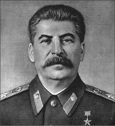
Yaklaşan büyük Nazi savaş makinesi karşısında eldeki tüm olanakları seferber etmek isteyen kurt politikacı, bunun için, yerine ikame etmeye çalıştıkları enternasyonalizmin antitezi olan Rus milliyetçiliğine başvurmaktan kaçınmamış, eski rütbeleri ve sembolleri yeniden yürürlüğe koymuş ve hatta Kilise ile Yahudilere yönelik baskıları bile azaltmıştı. Stalin, savaşın şiddetlenmesiyle kendisini 30 Haziran 1941’de sanayi de dâhil olmak üzere savaşın bütün yönlerini koordine eden Devlet Savunma Komitesi’nin Başkanı, 19 Temmuz’da Halkın Savunma Komiseri, 8 Ağustos’ta silahlı kuvvetlerin başkomutanı ve 10 Temmuz 1941’den itibaren de Stavka (savaş konseyi) Yüksek Komutası’nın başkanı yaparak, tam bir savaş pozisyonu alacaktı.
Hitler ile neden anlaşma yoluna gitti?
II. Dünya Savaşı’nın patlak vermesiyle birlikte Stalin, parti genel sekreterliği ve hükümet başkanlığı şapkalarına bir tane daha ekliyordu: Sovyet Orduları Başkomutanlığı.
Stalin’in II. Dünya Savaşı esnasında gerçekleştirdiği en flaş işlerden biri, 1939’da Hitler Almanyası’yla Molotov-Ribbentrop olarak bilinen saldırmazlık anlaşmasını imzalaması olmuştu. Peki, daha sonradan mağlup edilmesinde büyük rol oynayacağı Hitler ile neden anlaşma yoluna gitmişti? Cevabı halen bile tartışma konusu olan bu soruya iki türlü cevap verilebilir. Stalin karşıtlarına göre Sovyet lideri, Hitler’in saldırganlığı karşısında net bir tavır takınamamış ve bu antlaşmanın içerdiği gizli protokol çerçevesinde Finlandiya, Estonya, Letonya, Litvanya, Romanya ve Polonya’nın işgalinin yolunu açmıştı. Diğer taraftan Stalin’e hak verenler ise, İngiltere, Fransa ve Amerika’nın, Nazileri, ufukta beliren kızıl tehdide saldırması için kışkırttığını iddia ediyordu. Hatta bundan dolayı Avusturya’nın Almanya tarafından ilhak edilmesine, ardından da Çekoslovakya’nın işgaline göz yummuşlardı. Bu işgalin ardından batılı müttefikleri ile dirsek temasına geçen Stalin, beklediği ilgiyi görmeyince, kendi sınırlarını koruma adına saldırmazlık paktını imzalamak zorunda kalmıştı. ‘Çelik Adam’ böylelikle Polonya ve Baltık ülkelerini Nazi saldırganlığına karşı bariyer olarak kullanmak istemişti.
Stalin, Nazilerin Polonya’yı işgaliyle, planlarını hayata geçirmeye başladı. Polonya’nın geri kalan yarısını işgal etmiş, ardından da Estonya, Litvanya ve Letonya’yı sınırlarına katmıştı. Ama Stalin, tüm bunlara rağmen, ‘bariyeri’ daha da güçlendirmeye niyetliydi. 1940 yılı Mart ayında çetin bir savaşın ardından Finlandiya’yı da Rus topraklarına kattı. Lakin Stalin’in, hem dönemin konjüktüründen yararlanıp toprak kazanmak hem de olası Alman saldırısı ile arasına duvar örmek amacıyla attığı bu adımlar, Nazileri caydıramayacaktı. 1941’de Hitler, Rusya’ya saldırınca işler birden değişti ve Rus lider, müttefiklerin yanında yer almakta gecikmedi.
Almanlar saldırıyor, Stalin ortadan kayboluyor
22 Haziran 1941’de Sovyet Dışişleri Bakanı Viçeslav Molotov, Rus halkını Alman saldırısı hakkında bilgilendirdiğinde, tüm Rusya buz kesti. Tüm ümitlerinin suya düşmesinden dolayı utanmış gibi görünen Stalin, neredeyse iki hafta boyunca ortalıktan kayboldu ve tek kelime etmedi. Muhtemelen halkının ve Amerika ile İngiltere’nin tepkilerini, aynı zamanda da ilk Alman saldırılarının sonucunu görmek istemişti. Komutanlarıyla bir araya gelerek muhtemel taktikler üzerinde konuşmaya başladı.
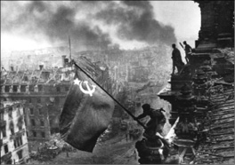
Stalin’in bir savaş kahramanı olmasında Hitler’in de, dolaylı da olsa bir payı vardı! Ordularının Ukrayna ve Beyaz Rusya’da Stalin baskısına karşı özgürleştirici bir güç olarak karşılanmasını fark edemeyen Hitler, zalim bir ırkçı baskı politikası uygulayarak, Sovyet İmparatorluğu halkını, tekrar Stalin’in liderliği etrafında toplamış, uzun süren savaş sonunda Kızıl Ordu, müttefiklerden önce Berlin’e girerek, Hitler’e son darbeyi vurmuştu.
Stalin cepheyi üçe ayırarak, kuzey sektörünü Voroshilov’a, merkezi Timoshenko’ya ve güneyi de Budienny’e verdi. Kendisi de merkezi komutayı üstlendi.
Her ne kadar birçok hesap hatası yapsa da, Stalin, baş düşmanı Hitler’in saldırısına karşı hepten de hazırlıksız değildi. Ülkesini ve silahlı kuvvetleri kısa zamanda yeniden organize ederek seferberlik havasına soktu. Fransızların Majino Hattı ile yaptığı gibi tek taraflı bir savunma çizgisi oluşturulması ve statik savunma yapılması taraftarı değildi. Rusya’nın engin arazisine ve iklimine güveniyordu.
Modern stratejistlerin en büyük hayali olan ‘tek başına komuta’ lüksüne sahip Stalin’in dezavantajları da yok değildi. Her şeyden önce Kızıl Ordu’nun morali yerlerde sürünüyordu. Köylülerin, mallarının ve ürünlerinin devletleştirilmesini öngören kollektivizasyon politikasına karşı ayaklanmasının üzerinden henüz on yıl bile geçmemişti ve bunu takip eden terör yıllarının izleri henüz çok tazeydi. Ön cepheden gelen haberler de felaketti. Ordu ilk saldırı dalgasında panik içinde dağılmış ve binlerce asker Almanlara esir düşmüştü. Savaşma ruhu yerlerde sürünüyordu. Diğer cephelerde de büyük bir baskı altında kalan Rus askerleri düzenli bir şekilde geri çekiliyordu. En azından onlar daha sonradan tekrar savaşabilir, diye düşünüyordu Stalin. Ama kısaca her açıdan Hitler’in ordusu karşı konulamaz bir şekilde Rusya’nın içlerine doğru ilerliyordu. Kendisinden asırlar önce Napolyon’un yaptığı gibi...
Stalin toparlanıyor
Nihayet 3 Temmuz 1941’de Stalin sessizliğini bozdu. ‘Büyük Tehlike’ başlıklı tarihi konuşmasıyla radyodan halka seslendi. Ağır ağır, tatsız tuzsuz ve duraksayarak konuşuyordu. Churchill’in İngiliz ulusunu savaşa sokarken yaptığı konuşmada kullandığı ‘kan, ter ve gözyaşı’ gibi destansı kelimelerden eser yoktu Rus liderin hitabetinde. Hatta İngiliz meslektaşı gibi zafer yeminleri de etmemişti. Buna karşın konuşması hepten de boş değildi; zaman kazanmak -ve aynı zamanda toprak da tabiî ki- adına Hitler ile anlaşma yaptığı için özür diledi; Hitler’in Rusları Almanlaştırmak ve köleleştirmek için yola çıktığını söyledi; düşmana karşı hiçbir kaynak bırakmama (scorched-earth) politikasının hayata geçirilmesi çağrısında bulundu ve Hitler’i Napolyon’la kıyasladı.
Rusya, açıkça zaman kazanmak için topraklarını gözden çıkarıyor, boşaltılan topraklar düşmanın kullanamaması için yakılıp yıkılıyordu. Stalin, ancak ve ancak ‘Avrupa Fatihi’ Hitler ile bu şekilde başa çıkabileceğinin farkındaydı.
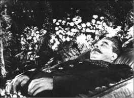
Stalin’in ölümünden sonra iktidara gelen Nikita Kruşçev, Stalin’in tek adamlığını sert bir dille eleştirerek, de-Stalinizasyon politikasını başlatmıştı. 50 yıl sonra kamuya açılan Rus arşivlerindeki belgelere göre Kruşçev, Komünist Partisi’nin 20. kurultayında yaptığı konuşmada, Stalin yönetimini bir `facia` olarak tanımlamış, birçok parti yöneticisinin Stalin tarafından hiçbir gerekçe gösterilmeden öldürülmesini kınamış ve hatta `Stalin olmasaydı II. Dünya Savaşı da olmazdı.’ demişti.
Peki, Alman orduları koşar adım kendisine doğru yaklaşırken, binlerce insanın kanını ellerinde taşıyan diktatörün ruh hali nasıldı? Paniğe kapılmış mıydı? Muhtemelen evet. Zira özel elçiler vasıtasıyla Amerikalılara, ‘Rus topraklarının istediğiniz bölgesine askerlerinizi konuşlandırın, hem de kendi komutanızda.’ içerikli mesajlar gönderiyordu. Bu mesajları yolladığı vakit Almanlar Rus toprakları üzerinde bir ayda yaklaşık 700 km’lik mesafe katetmişti bile! Stalin’in endişesi, generallerinden Budienny’nin Dinyeper’deki utanç verici bozgununun ardından daha da arttı. Aynı dönemde kendisini ziyaret eden İngiliz diplomatlar, merkeze geçtikleri raporlarda Rus liderin depresif hareketler sergilediğini belirtiyordu. Stalin, benzer bir asker konuşlandırma teklifini onlara da yapmıştı.
Almanlar Moskova’ya yaklaşırken Stalin, kaygısını İngiliz Büyükelçi Sir Stafford Cripps ile paylaştı. Büyükelçiye Moskova’yı kanlarının son damlasına kadar savunacaklarını söylemekle birlikte, olası bir Alman işgalini de göz ardı etmiyordu. Böylesi bir durum için de planları hazırdı. Volga’nın doğusuna çekilip, alan savunması yapacaklardı.
Savaşın ilk aylarında, çelik ifadeli yüzüyle gizlemeyi başarsa da belirsizlik ve endişe Stalin’in zihnini esir almıştı. Zaten savaş boyunca kullandığı en büyük silahı da bu olacaktı: İfadesiz ama bir o kadar da kendine güven ima eden soğuk bir çehre.
Dünyanın en önemli politik figürlerinden biri olarak, tereddüt ve zayıflığın, görkemli bir son için yeterli olduğunun bilincindeydi. Ve artık kaderi, hiçbir zaman olmadığı kadar Rus halkının kaderi ile aynı sepetteydi. Bu, her totaliter rejimin hem en sağlam hem de en zayıf halkasıydı. Bazı durumlarda bir ulusun kaderi, diktatörün iradesine bağlı olurdu. Bu iradenin bir anlık çöküşü, emir komuta zincirinde başka hiç kimsenin dolduramayacağı bir boşluk doğurabilirdi…
Savaşın en hararetli günlerinde Kremlin’i ziyaret eden müttefik ülke subay ve diplomatlarının dikkatini çeken tek bir şey vardı: Her şeyi elinde tutan askeri bir lider. Evet, Stalin, büyük ya da küçük, idari, siyasi ya da askeri her konuda her kararı kendisi veriyordu. Başkomutan, dışişleri bakanı, savunma bakanı ve hatta Kremlin’in protokol şefi de oydu!
Stavka’nın (savaş konseyi) merkezi, Stalin’in Kremlin’deki ofisindeydi. Buradan tüm cepheleri takip edebiliyor ve birlikleri anında yönlendirebiliyordu. Aynı zamanda orduyu değil, topyekûn tüm Rusya’yı idare ediyordu. Söz gelimi 1360 fabrika ve üretim merkezinin yanı sıra, milyonlarca işçi ve ailesinin de, cephe gerisine, Rusya’nın batısından, Volga, Urallar ve Sibirya’ya kadar nakledilmesini de ofisinden organize etmişti. Tüm bu işlerin arasında, batılı müttefiklerinin temsilcileri ile kendilerine teslim edilecek silahların kalibresi ve alüminyum kalınlığını tartışıyor, Alman işgali altındaki topraklardaki gerilla liderleriyle toplantılar yapıyor, düşman hattının gerisindeki eylemleri planlıyordu.
Ekim’de Hitler, ‘Tarihin en büyük saldırısı’ olarak bilinen Moskova seferini resmen başlattı. Leningrad izole edilmiş ve kuşatılmıştı. Nerdeyse Ukrayna’nın tamamı ve Azak Denizi’nin büyük bir bölümü Almanlar tarafından işgal edilmiş, Dinyeper’de 500 bin dolayında Rus askeri esir düşmüştü. Stalin, cephedeki hezimetler üzerine Voroshilov ve Budienny’i azlederek, önemli generallerinden Zhukov, Vassilesvky ve Rokossovsky’i göreve getirdi.
Kasım’da Almanlar Moskova’yı kuşattı. Öncü kuvvetleri başkentin merkezine 30 km’ye kadar yaklaşmış, hatta bu mesafe bazı anlarda 10 km’ye kadar düşmüştü. Başkentteki resmi binalar boşaltılıyor, önemli evraklar ateşe veriliyordu.
6 Kasım’daki devrim yıldönümü, yaklaşan Nazi tehlikesinden dolayı Mayakovsky metro istasyonunun altındaki bir sığınakta kutlandı. Stalin burada yaptığı konuşmada soğukkanlılığını korusa da, “Almanların tankları bizimkilerden çok çok fazla.” demekten kendini alamamıştı.
Çarlık Rusyası’nın kahramanlarını cepheye sürüyor!
Bir sonraki gün Kızıl Meydan’daki Lenin mozolesi üzerinden olağan geçit törenini takip eden Stalin, kendisinden beklenen konuşmayı burada yapacaktı. Askerlerinden iç savaş ruhunu yaşamalarını isteyen Rus lider, ateşli konuşmasını, devrimle birlikte gömmek istedikleri emperyal Rusya’nın kahramanlarını referans göstererek bitirdiğinde, aynı zamanda pragmatist liderliğini de sergilemiş oluyordu:
“Bırakın şanlı atalarımız Alexander Nevsky, Dimitry Donskoy, Kuzma Minin, Dimitry Pozharsky, Alexander Suvorov ve Mikhail Kutuzov’un cesur hatıraları bu savaşta size rehberlik etsin!”
Tabi ki, yıllarca üzerini örtmeye çalıştıkları bir döneme ait bu kahramanlar geçidinin sonuna kızıl mührü basmayı ihmal etmemişti: “Bırakın, büyük Lenin’in zafer sancağı size rehberlik etsin!”
Stalin’in Tatarlara (Donskoy), Türklere (Suvorov) ve Napolyon’a (Kutuzov) karşı savaşmış bu Rus kahramanlarının hatıralarını cepheye sürmekle kazandığı moral takviyesi, başkentin boşaldığı haberinin yayılmasıyla yerini ümitsizlik ve anarşiye bırakacaktı. Paniğe kapılan halk yağmaya çıktı, parti mensupları parti kimliklerini yakmaya başladı. Cephelerle Volga arasında kalan bölgeye kargaşa hâkim olmuştu. Lakin devlet binalarının boşaltılması ve arşivlerin taşınmasına rağmen Stalin’in, hükümetin diğer organlarının aksine, Kremlin’de kaldığı haberinin yayılması, bir anda havayı değiştirdi. Rus lider, askerlerini cesaretlendirmek için elinden geleni yapıyor, korkaklığa merhamet göstermeyeceğini ise şu vecizesiyle özetliyordu: “Kızıl Ordu’da korkak olmak cesaret ister!”
Moskovalılar, Stalin’in şahsında, direnişin resmini görmeye başlamışlardı. Bu aşamadan itibaren Kremlin, iki diktatörün hırslarının taşlaşmış sembolüne dönüştü. Stalin, başkentini terk etmeyi reddederken, Hitler, “Kremlin’in duvarlarını havaya uçurun ki, Bolşevizm’in sonunun geldiğini herkes görsün!” diye haykırıyordu.
Western New England Üniversitesi Tarih Profesörü Gerhard Rempel’e göre Stalin’in Alman topçularının sesini duymasına rağmen Kremlin’i terk etmemesinin ardında, direnme bilincinden ziyade, Kremlin duvarlarının arkasına çıktığında, o bilinen ‘taşlaşmış lider’ imajını kaybedeceği korkusu yatıyordu. Duvarlar onu halktan uzak tutuyordu. Kremlin, Rus halkına olan mesafesinin bir sembolüydü belki de. Orayı terk ettiğinde, ‘kaçmakta olan bir diktatör’ görüntüsü verebilirdi. İmaj, her şeydi.
Stalin, savaş boyunca Kremlin’i terk etmedi. Cephedeki askerlerini hep buradan yönetti. Afrika çöllerinde askerleri ile yemek yiyen, her fırsatta basının karşısına çıkıp zafer işareti yapan Churchill’in ya da vaktinin çoğunu karargâhta geçiren Hitler’in aksine, askerleri ile yan yana gelmedi. Hep uzaktan yöneten bir komutan olarak kaldı. Anlaşılan savaşın fiziksel gerçekliği, Stalin’i pek cezp etmiyor, askerlerle birlikte vakit geçirmenin motivasyon üzerindeki etkisini dikkate almıyordu. Her halükarda Rus savaş makinesinin bir numaralı ismi olduğundan şüphe yoktu.
Askeri liderliği sadece, arada sırada bürokratların da iştirak ettiği, soyut kararlar almakla sınırlı değildi. O, daha çok savaşın teknik yüzüyle ilgiliydi. Her şeye lojistik çerçevesinden bakıyor, vaktinin büyük çoğunu, insan gücü ve mühimmatın doğru zamanda, doğru yerde kullanılmasına yönelik kararlara ayırıyordu.
Savaşın başında ağır bir bedel ödeyen Rus ordusunun çuvallayan komuta kademesine ve özünde bir diktatör olmasına rağmen Stalin, sağduyulu bir komutan olmaya çalışıyordu. Kumandanlarına gereken özerkliği tanımış, Hitler gibi kendi kararlarını dayatmaya yeltenmemişti. College Cork Üniversitesi Tarih profesörlerinden Sovyet uzmanı Geoffrey Roberts da, iki lider arasındaki komutanlık kumaşının bu noktada farklılaştığına işaret ediyor. Stalin’s War (Stalin’in Savaşları) isminde Rus liderin askeri kariyerini irdeleyen Roberst, Stalin’in, savaş öncesindeki terör yıllarında izlediği baskıcı politikalarla milyonların ölümüne sebep olsa ve savaşın hemen öncesinde Kızıl Ordu komuta kademesinin çoğunu ideolojik sebeplerden dolayı idam ettirse de, II. Dünya Savaşı esnasında sergilediği komutanlık, özellikle de emrindeki komutanları yönlendirme ve motive etmedeki kabiliyeti ile Nazilerin mağlup edilmesinde büyük bir rol oynadığına işaret ediyor.
Stalin: İyi asker mi, kötü asker mi?
Stalin’in başkomutanlık kariyeri, hiç bir zaman diktatör olarak sergilediği icraatların gölgesinden kurtulamadı. Kimileri, Stalin’i, savaş öncesi yıllarda sergilediği terörle Rus ordusunu hadım etmekle suçlamış ve buna örnek olarak da Finlerle yapılan ve Rusların güç bela kazanabildikleri savaşı göstermişti. Burada Ruslar her açıdan avantajlı olmasına rağmen Finler karşısında pahalı bir zafer kazanmıştı. Yine bu görüşe göre, Hitler’in yerinde daha az ihtiraslı ve daha stratejik davranan biri olsa, Rusya’yı çok rahat ele geçirebilirdi. Stalin, sadece, zorunlu olarak savaşa girmek durumunda kalmış, ardından da bunun meyvelerini toplamış bir diktatördü.
Peki gerçekten öyle miydi? Belki de. Bununla birlikte madalyonun bir de öteki yüzü vardı. Bu yüze bakanlarsa şunu görüyordu. Stalin, Almanların dize getirilmesinde, müttefiklerin toplamından daha çok katkıda bulunmuştu. Diktatör olduğu için askeri öngörüsünü inkar etmek, hata olurdu. Hitler’in Barbarossa Operasyonu, tarihin gördüğü en büyük işgal harekatıydı. Hitler’in o kadar büyük bir güçle fethedemeyeceği hiçbir yer yoktu. Doğru, Stalin, Büyük Terör yıllarında komuta kademesinden birçok yetenekli subayı idam ettirmişti ama 1930’larda uygulamaya soktuğu beş yıllık plan çerçevesinde Kızıl Ordu’yu modernize ettirmiş ve gezegenin en ileri ve en büyük savaş güçlerinden biri haline getirmişti. Her şeyden önce Stalin’in Kızıl Ordusu, Almanları Stalingrad’da yenerek, Hitler’e ilk mağlubiyeti tattırmış, bu darbe, savaşın gidişatında önemli bir dönemeç olmuştu. Üstelik Stalin, sadece devasa Alman saldırısını durdurmakla kalmamış, aynı zamanda karşı saldırıya da geçmişti. Öyle ki Nazilerin başkentine müttefiklerden önce ulaşan ve Hitler’e son darbeyi vuran da onun ordusuydu.
Peki, büyük bir savaş lideri olması Stalin hakkındaki yargıyı değiştirir mi? Muhtemelen hayır. Eski bir komünist olan Profesör Roberts’ın da dediği gibi: “Stalin, milyonlarca insanın katlinden sorumlu bir diktatördü. Ama bu onun savaşta büyük bir komutanlık sergilediği gerçeğini değiştirmiyor. Stalin, katkısıyla büyük savaşı demokratik dünyanın kazanmasında rol oynamış, ama bunu demokratik bir dünya için yapmamıştı.”
NOTLAR
- II. Dünya Savaşı öncesi izlediği politikaları sebebiyle ölen Rusların sayısı, Almanların Rusya’ya yönelik Barbarossa Harekâtı kapsamında ölen Ruslardan fazlaydı.
- Stalin liderliğindeki Sovyetler Birliği, II. Dünya Savaşı’ndan en zararlı çıkan ülke olmuş, yirmi dört milyon vatandaşını kaybetmişti.
- Savaşta ülkesinin ödediği bedeli, Yalta ve Postdam konferanslarında dünyadaki egemenlik alanlarını paylaşan aktörlerden biri olarak tahsil etti.
- Savaş sonrası izlediği saldırgan politikalarla Rus destekli Demokratik Almanya Cumhuriyeti’nin kurulmasında büyük rol oynadı.
- Kadınlarla arası hep iyi olmuştu. Diktatör olmasına rağmen, çocukluğunda duygusal yönlerinin ağır bastığı iddia ediliyordu. Öyle ki ilk eşi Ekaterina Svanidze öldüğünde, cenazesini evlendikleri kiliseden kaldırmış, defin sırasında mezarın içine atlayıp, tabuta kapanarak ağlamıştı.
- Kuzey Kore’yi kışkırtarak Güneye saldırmasını sağladı; Kore Savaşı’nın gizli mimarlarından biri oldu.
- Her ne kadar öldüğünde, mimarı olduğu kıyımlardan dolayı imkânsız gibi görünse de, milyonlarca kişi ‘babaları’ Stalin için yas tuttu.
- Ölümünün 52. ölüm yıldönümünde, 2005’de yapılan bir anket, Rus halkının kendisi hakkında olumlu görüşler beslediğini ortaya koymuştu. Halkın yüzde 50’si, Stalin’in kişiliğinden etkilendiğini söylerken, yüzde 42’si ise yeni bir Stalin görmek istediğini belirtmişti.
- 1920’li yıllarda dönemin ünlü bilim adamı Ilia Ivanov’dan maymun ve insanın farklı genetik özelliklerini alarak, asla acıkmayacak, susamayacak, soğuk iklim koşullarına dayanabilecek, çok güçlü ve düşük zekalı bir canlı türü geliştirmesini istemişti. Bu canlı türünden kuracağı orduyla dünyayı fethetmeyi planlıyordu!
- Sinemayı severdi. Clark Gable, Johnny Weismüller, Charlie Chaplin ve Spencer Tracy’e hayrandı. Kovboy filmleri ile ünlenmiş John Wayne’den ise, komünist ideolojiye zarar verdiğini düşündüğü için nefret ederdi. Öyle ki Wayne’i öldürmesi için iki KGB ajanını görevlendirmişti! 1953’de geçirdiği kalp krizi sonucu ölmesi ve yerine geçen Nikita Kruşçev’in emri ile Wayne operasyonu iptal edildi.
İki Dünya savaşından Kore’ye; Amerikalılara hep o komuta etti
DOUGLAS MACARTHUR
(1880-1964)
‘‘Görev, Onur ve Ülke... Ne olacağınızı, olabileceğinizi ve olmak zorunda olduğunuzu bu üç kutsal kelime size dayatır.”
Mac Arthur
Neredeyse beşikten mezara askerlik yapan Douglas Mac Arthur, I. Dünya Savaşı’nda bir bölüğü, II. Dünya Savaşı’nın Pasifik Cephesi’nde Müttefik güçlerinin büyük kısmına ve son olarak da Kore’de bütün BM kuvvetlerine komuta etmiş müstesna bir askerdi. Her ne kadar zaman zaman tartışmaların odağında olsa da, hiç şüphe yok ki bu durum onu, Amerika’nın yetiştirdiği en büyük askeri beyinlerden biri olmaktan alı koymayacaktı. Komutası altında görev yapanlar onu ya çok sevmiş ya da nefret etmişti. Ancak bununla beraber düşmanları da dâhil olmak üzere onun stratejik zekâsını, hem kara hem de deniz savaşındaki ustalığını ve mümkün olan en az kayıpla zafer kazanabilmesini övmekten geri durmamıştı.
MacArthur, 26 Ocak 1880’de Arkansas eyaletindeki Little Rock’da asker kökenli bir ailede dünyaya geldi. Babası Arthur, Amerikan İç Savaşı’nda Onur Madalyası kazanmış, İspanya-Amerika Savaşı’nda ve Filipinler Çıkarması’ndan görev yapmıştı. Üniforma rengine aşina olan genç MacArthur da babasının yolundan gitmekte gecikmedi. Kariyerinde çok büyük bir rol oynayacak olan annesinin yardımıyla Amerika’nın en saygın askeri okulu West Point’te soluğu aldı. 1903’de mezun olduğunda, ilk savaşını kazanmıştı; sınıf birincisiydi. İlk görevine istihkâm birliğinde asteğmen olarak başladı. İlk komutanıysa, babası Arthur’dan başkası değildi. Kendisine verilen ilk görevler arasında o zaman için tümgeneral olan babasının yardımcısı olarak görev yapacağı Filipinler ve Japonya seferleri vardı.
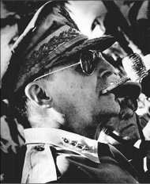
Ünlü Amerikalı Tarihçi ve biyografi yazarı David McCullough, MacArthur’u şöyle tarif ediyor: ‘O omuz silkip geçebileceğiniz biri değildi. yumuşak başlı, pasif ve sıkıcı biri ise asla. Vatanseverliği tartışılmazdı. Cesareti sorgulanamazdı. Ama bence her şeyden önce, 20.yüzyılın en büyük kahramanlarından biri olarak önemi tartışılmazdı.’ (U.S. National Archives)
Meksika’da 1904’te Vera Cruz’u işgal eden misilleme seferlerine yüzbaşı olarak katıldığında, ilk kez gerçekten birbirini boğazlayan askerlere şahit oldu. Gözlemci olarak görev yaptığı 1904–1905 Rus-Japon Savaşı’nın ardından 1906’da Amerika’ya geri döndüğündeyse, önemli bir görev kendisini bekliyordu. Başkan Theodore Roosevelt’in askeri danışmanı olmuştu.
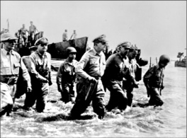
‘Nerede olursa, orada başrolü o oynardı’ diyor askeri tarihçi Edwin H. Simmons, MacArhur için. ‘Tüm gözler onda odaklanırdı. Çok iyi bir aktördü. Savaş tiyatrosu kurulduğunda, yapımcı, yönetmen ve star oydu. Kendi yazar kendi oynardı. Hem de tüm limitleri zorlayarak.’ MacArthur, hayatında önemli bir rol oynayan Filipin adalarına çıkartma yapan Amerikan askerlerine komuta ederken. (U.S. National Archives)
Tarihler 1916’yı gösterir, dünya, ilk büyük savaşına hazırlanırken, Mac Arthur Enformasyon Bürosu Başkanı olarak savaş bakanlığının koridorlarını turluyordu. Bu süre içerisinde Amerika’nın I. Dünya Savaşı’na katılması durumunda kullanılacak düzenli birliklerin harekete geçirilmesiyle ilgili planlarını Savaş Bakanı Newton D. Baker’a sunarak kendisini oldukça etkilemişti. Amerika, 6 Nisan 1917’de Almanya’ya savaş ilan ettiğinde MacArthur, Ulusal Muhafızlar birliklerinden oluşan çok uluslu bir piyade birliği kurulmasında aktif rol oynadı. Savaşın en hararetli günlerinde Kırk İkinci Gökkuşağı Bölüğü Fransa’ya doğru yola çıktığında, komutanları olarak Albay MacArthur’u selamlıyorlardı.
Hiçbir zaman gaz maskesi takmadı…
1917’nin Eylül ayında askerlerinin başına geçen MacArthur, en genç birlik kumandanı unvanıyla dikkatleri üzerine çekmişti. Düşmanın kendisine kişisel olarak bir zarar veremeyeceğini iddia eden kahramanımız, askerlerini hep en ön cephede savaşa gönderdi. En sevdiği emirse, “Arkanızı düşünmeden sürekli ilerleyin!” idi. Tarzındaki farklılık bu kadarla da kalmıyordu. Çelik miğferi hep küçümsedi, gaz maskesi takmadı ve savaşlara bir at sopası dışında silahsız katıldı! Mütareke zamanlarında cesaretinden dolayı dört gümüş yıldız ve General John Joseph Pershing’in “MacArthur sahip olduğumuz en büyük birlik kumandanıdır.” şeklindeki övgüsünü kazanmıştı.
MacArthur, West Point’in müdürlüğünü kabul ettiği Haziran 1919’a kadar işgal ordusu komutanı olarak Avrupa’da kaldı. Mezun olduğu okula komutan olarak döndüğünde 39 yaşındaydı ve kolları sıvayarak onlarca yıldır değişmeden kalmış okul programını yeniledi. 1930’da Washington’a döndüğündeyse, Genelkurmay Başkanlığı’nda bir generaldi. Büyük Depresyon’un yol açtığı mali sıkıntılara rağmen MacArthur, hem hava hem de tank birliklerinin modernizasyonu için sağlam bir lobicilik yapmaktan da geri durmamıştı.
Ekim 1935’te son kez silah başı yaptığını düşündüğü bir görevle yeniden Filipinler’e gitti. Bu kez vazifesi bağımsızlık öncesi Filipin ordusunun kurulması ve eğitiminde danışmanlık yapmaktı. 31 Aralık 1937’de emekli oldu; ancak mareşal unvanıyla Filipinler ordusunda Manila’da kaldı. Hem danışmanlık hem de tatil yapmayı düşlüyordu. Ama bittiğini düşündüğü askeri kariyeri, henüz daha yeni başlamak üzereydi...
Filipin sahillerinden aktif göreve
Japonya’nın giderek artan saldırganlığı dünyayı tedirgin etmeye başlamıştı. Amerikan Savaş Bakanlığı, Temmuz 1941’de MacArthur’u Uzakdoğu’daki Amerikan kuvvetlerinin komutanı olarak yeniden aktif göreve çağırdı. Filipin ordusunu muhtemel Japon istilasına karşı eğitecekti. Oysa MacArthur, ne Japonların Filipinler’i işgal etmek istediğine ne de buraya saldırma kapasitesine sahip olduğuna inanıyordu. Öyle ki Japonların 7 Aralık 1941’de Pearl Harbour’a yaptıkları sürpriz saldırıdan dokuz saat önce uyarılmasına rağmen güçlerini alarma geçirmemişti. Kendine olan bu aşırı güveni, hem ona hem de ülkesine pahalıya patlayacaktı. Japon hava saldırısı, MacArthur’un hava kuvvetlerinin büyük kısmını yok etmiş, 22 Aralık’taki kara işgaliyse, Amerikan ve Filipin güçlerini Bataan Yarımadasına ve işgal altındaki Corregidor adasına çekilmeye zorlamıştı.
Sıcak çatışmalar esnasında askerlerinin moralini yükseltmek için çoğunlukla düşman ateşine göğsünü siper eden MacArthur, bu kez burnunu bile kaldırmamıştı. Japonlar kimseye nefes alacak alan bırakmıyordu. İsteksiz bir şekilde Başkan Roosevelt’in emirlerini uygulayarak birkaç askeriyle birlikte 11 Mart 1942’de bir torpidoyla Corregidor’dan kaçtı. Evet, kahramanlar da bazen kaçmak zorunda kalabiliyordu. Avustralya’ya geldiğinde kendisine Onur Madalyası verildi. Madalyasını alır almaz da tarihe geçen sözünü söyledi: “Bunu da atlattım ve geri döneceğim!”
Filipinliler, Mayıs’a kadar teslim olmadan direndiler. MacArthur’un sözünü yerine getirmesi tam iki yılını alacaktı.
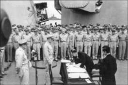
II. Dünya Savaşı’nda Amerika tarafından neredeyse yerle bir edilen Japonya’nın savaş sonrası ayağa kaldırılmasındaki süreçte baş rollerden biri de MacArthur’a verilmişti. Bu ülkedeki işgal kuvvetlerinin komutanı olan MacArthur, Japonya’nın yerle bir olmuş ekonomisinin düzeltilmesi ve sivil anayasa ile demokratik düzene geçilmesinde önemli bir rol oynamış, burada yaptıklarını ise, ‘askeri kariyerimden elde ettiklerimden daha büyük bir başarı’ şeklinde tanımlamıştı. Missouri zırhlısında Japonların teslim belgesini imzalayan MacArthur, Japon İmparatoru Hirohito ile birlikte. (U.S. National Archives)
Amerikan kara kuvvetleri ile deniz kuvvetleri arasındaki husumetten dolayı MacArthur, Pasifik kumandasını Amiral Chester William Nimitz ile paylaşmak zorunda kalmıştı ancak yine de bu iki isim ortak strateji konusunda anlaşmış ve iyi bir işbirliği sergilemişti. Birçok Japon karargâhını ele geçirerek Pasifikteki adalara düzenledikleri harekâtlarla Müttefikler, Japonya’ya doğru ilerlemeye başlamıştı. MacArthur’un kara, deniz ve hava kuvvetlerini başarıyla koordine etmesi ve ne zaman, nerede ve nasıl saldırı yapılacağına karar verme konusundaki kabiliyeti, Amerika’ya zafer üstüne zafer kazandırıyordu. 20 Ekim 1944’te Filipinler Leyte’de kıyıya çıktı ve ‘geri döndüğünü’ ilan etti. Japonlar, Filipinler için giriştikleri savaşta 8 bin Amerikan kaybına karşı 192 bin asker kaybetmişti. Bilançoya bakıldığında Mac Arthur’un başarısı inkâr edilecek gibi değildi.
Pasifik’teki savaşta ve aslında tüm kariyeri boyunca MacArthur, strateji konusundaki zekâsını, insan gücünü ve diğer kaynakları kullanmadaki etkinliğini başarıyla sergiledi. Cesareti ve atılganlığı düşmanlarını bunalttı ve savaş alanında aktif olarak boy göstermesiyle emrinde savaşanlara üst düzey bir motivasyon sağladı. 2 Eylül 1945’te, 65 yaşında iken, Tokyo Körfezi’ndeki USS Missouri gemisinin güvertesinde Japonya’nın teslim olduğunu deklare eden belgeye Amerika adına imza koyan ondan başkası değildi. Savaşı bitiren imzayı atmak Mac Arthur’a nasip olmuştu. Japonya’nın teslim olmasının ardından bu ülkede kalarak, ülkenin tekrar ayağa kalkmasında ve anayasal hükümete geçişinde önemli bir rol oynadı. Japonya’da birçokları, daha önce de düşmanlarının saygısını kazanmış olan generale ‘taçsız kral’ diye hitap ediyordu.
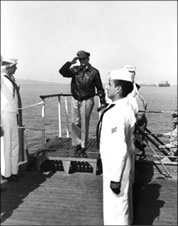
Kore Savaşı’nda ilerleyen Çin ordusunun hızının kesilmesi için Çin’e nükleer bomba atılmasını öneren MacArthur, bu teklifi ile Beyaz Saray’da öfkeye sebebiyet vermiş, Başkan Truman tarafından görevden alınmıştı. Fotoğrafta MacArthur, Kore Savaşı esnasında, Inchon açıklarında bekleyen ve Japonları teslim aldığı USS Missouri’nin güvertesine çıkarken. (U.S. National Archives)
Kore’de tekrar sahneye çıkıyor
Kuzey Kore 25 Haziran 1950’de Güney’i işgal ettiğinde MacArthur bir kez daha silah başı yapıyordu. Birlikleriyle Kore’ye hareket eden efsane komutan 9 Temmuz’da bütün Birleşmiş Milletler (BM) kuvvetlerinin idaresini devraldı. Amerikalılar, Kuzey Kore’nin ilerlemesini ancak, herkesin tavsiyesinin aksine, MacArthur’un 15 Eylül’de Inchon’a saldırmasıyla güç bela Pusan bölgesinde yavaşlatabildi. Komutanın bu hamlesi Kuzey Kore birliklerinin hızını keserek, onları daha sonra bir bozguna dönüşecek şekilde geri çekilmeye zorladı. Ekim ayı ile birlikte MacArthur komutasındaki Müttefikler Kuzey Kore’nin içlerine kadar girmiş, yer yer Çin sınırını ihlale başlamıştı. Bölgedeki en büyük uç beylerini kaybetmeyi göze alamayan Çinliler, geniş çaplı bir saldırıya geçerek BM güçlerini Kore yarımadasının güneyine doğru sürmeye başladı. Çinliler, neredeyse savaşı kazandıklarını ilan etmek üzereydi. İşte tam bu aşamada, Çin’i tahrik ederek zorla savaşa müdahil eden MacArthur bir kez daha sahneye çıktı ve herkesin ağzını açıkta bırakan önerilerini seslendirdi: “Çin kıyılarını ablukaya alalım, ülkedeki önemli noktalara da nükleer bomba atalım!” Bunlarla yetinmeyen General, aynı zamanda BM güçlerini desteklemek için Formoza’daki (Tayvan) Milliyetçi Çinlilerin de cepheye sürülmesini önerdi. Doğal olarak yeni bir dünya savaşına kapı açabilecek bu radikal önerilerin hiç biri Beyaz Saray tarafından dikkate alınmadı. Yine de MacArthur önerilerini hararet ve ısrarla savunmaya devam edince, Başkan Truman, 11 Nisan 1951’de kendisini görevden aldı. Komutana evine dönmekten başka çare kalmamıştı…
“Tanrının konuşmasını duyduk”
General 1937’den bu yana görmediği ülkesine döndüğünde, o güne dek New York tarihinde bir araya gelmiş en büyük kalabalık olan yaklaşık 7 milyon kişi, kahramanlarını karşılamak için hazır bekliyordu. Kongre, Amerikan savaşlarının bu unutulmaz ismine bir jest yapmak istemişti. MacArthur’dan kongrede bir oturum yönetmesi istendi. Burada yaptığı konuşmayı, ‘Eski askerler asla ölmezler, sadece gözden kaybolurlar’ cümlesiyle bitirdiğinde, Kongre üyesi Dewey Short, gözyaşlarını tutamayarak, “Bugün burada Tanrının konuşmasını duyduk. Tanrının kendisi ve sesi yeryüzündeydi!” diyecekti. MacArthur, gerçekten de gözden kayboldu. New York Waldorf-Astoria’ya taşındı. Kooperatif kurulları ve bazı konuşmalar haricinde inzivasını bozmadı. Askeri hayatını özetleyen ve en akılda kalıcı konuşmasını 1962 yılında ‘Görev, Onur ve Ülke’ başlığıyla West Point’te yaptı. 5 Nisan 1964’te 84 yaşında Washington D.C’deki Walter Reed Ordu Tıp Merkezi’nde hayata gözlerini yumdu. Virginia Norfolk’ta toprağa verildiğinde, geride eşine zor rastlanır bir kariyer bırakıyordu. Kendisi hiçbir zaman kabul etmemiş olsa da, gururlu, egoist, küstah ve sıklıkla da cimri biri olarak tasvir edilen MacArthur, çoğu kez kendisinden sadece üçüncü şahıs olarak bahsederdi. Bağlı olduğu sivil otoriteye doğrudan karşı çıkmış sayılı Amerikalı komutanlardan olan yakışıklı ve otoriter MacArthur, fotoğrafçıların, kendisini uzun ve görkemli göstermek için yere yakın bir açıdan fotoğrafını çekmelerine ihtiyaç duymadığı bir kişilikti. Tüm kişisel zaaflarına rağmen Pasifik’i Japonların istilasından kurtararak ve Kuzey Kore’nin Güneyi işgal etmesini önleyerek, adını İkinci Dünya Savaşı’nın ve savaş sonrası dönemin en büyük generalleri arasına yazdırmıştı.
Hiçbir Amerikalı asker, MacArthur kadar Amerikalıların zihninde yer etmedi. Neredeyse yarım asır boyunca Amerikalıları çoğunlukla zafere, bazen de şaşırtıcı mağlubiyetlere sürükledi. Askeri zekâsını sorgulayanlarla, bu başkan dahi olsa, cesurca ama çoğu zaman da egoistçe mücadele etti. Tarihçi Michael Schaller’e göre, elde ettiği başarıları asla yeterli görmeyen MacArhur, kendisini yeteri kadar takdir etmediğini düşündüğü üstlerine karşı her zaman eksilmeyen bir öfke beslemişti. MacArthur fenomenini en iyi açıklayansa, şu sözleriyle Amerikalı General Vernon A. Walters olmuştu:
“Bence Amerika’nın yetiştirdiği en büyük askerdi. Tek sorunu, Amerika’da işleri yürüten asıl kişinin Başkan olduğu gerçeğini yeteri kadar anlayamamış olmasıydı.”
NOTLAR
- Babası MacArthur da askerdi. New Mexico’da demiryollarını Kızılderililere karşı savunmuştu.
- Kendi ifadesiyle ‘okuma yazmayı öğrenmeden önce’ ateş etmeyi öğrenmişti.
- Babasının son görev yeri olan Filipinler, oğul MacArthur’un ilk görev yeri oldu.
- İlki Louise Cromwell Brooks, ikincisi Jean Marie Faircloth ile olmak üzere iki kez evlendi.
- Kore Savaşı’nda BM kuvvetlerine komuta ederken Çin sınırlarına dayanıp Çin’i de savaşa dahil etti. Ardından Çin’e nükleer bomba atılmasını önerince, tüm Soğuk Savaş parametrelerini değiştirmeye çalıştığı iddiasıyla görevinden alındı.
Büyük hayalleriyle büyük bir imparatorluğu küçülten asker
ENVER PAŞA
(1881-1922)
“Beni Napolyon’a benzetiyorlar. Kabul etmem. Çünkü ben ikinci adam olamam.”
Enver Paşa
22 Kasım 1881’de İstanbul Divanyolu’nda Manastırlı mütevazı bir ailede hayata gözlerini açtı. Babası Ahmed, Sultan II. Abdulhamid’in mahiyetinde yer alan paşalardan biriydi. Annesi Ayşe ise, etnik olarak imparatorlukta en az toprağa sahip olmalarıyla bilinen Arnavutlardandı. Altı çocuğun en büyüğü olan Enver, İstanbul ve Manastır’da büyüdü. İlk eğitimini ailesinden ve bir Çerkez olan büyükannesinden aldı.
İstanbul’da liseden mezun olduktan sonra önce Askeri Rüştiye’ye sonra da Harp Akademisi’ne girdi. Buradan 1902 yılında iyi dereceyle mezun oldu ve Selanik’teki Üçüncü Ordu’ya yüzbaşı olarak atandı.
Hayatının bu evresine kadar sıradan bir Osmanlı subayının hayat çizgisini takip eden Enver, daha sonra ne olmuştu da, Hitler’in bile o çok ünlü eseri Mein Kampf’da (Kavgam) “Eğer olaylar farklı bir şekilde gelişmiş ve müttefikler, İkinci Balkan Savaşı’nda olduğu gibi kendi aralarında ani bir kan davasına tutuşmadıysa, bu Almanya’da Enver Paşa gibi birinden ziyade, Şansölye Kruno’nun olmasından kaynaklanıyordu.” sözleriyle kendisine atıfta bulunduğu, en hafif deyimiyle ilginç bir sima olmuştu?
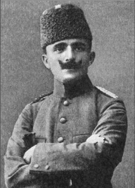
Jön Türk hareketinin kilit ismi, İttihat ve Terakki’nin en güçlü lideri, Balkan ve Trablusgarp Savaşlarının kahramanı, sultanın damadı, başkumandan yardımcısı ve Osmanlı İmparatorluğu’nun Savunma Bakanı ve Almanya aşkına Osmanlı’yı I. Dünya Savaşı’na sokan Enver Paşa’nın üzerindeki Alman etkisi, Mart 1909’da 5 bin kuruş maaşla askeri ataşelik görevine başladığı Berlin günlerine uzanıyordu. İki yıl sürdürdüğü bu görevde, iyi derecede Almanca öğrenmiş, geleceğin Almanya’nın yanında olmakta yattığına ikna olmuştu.
Osmanlı İmparatorluğu’nun yıkılışından bu yana hakkında yazılıp çizilenlerin haddi hesabı olmasa da, ulusun ortak aklında “Bizi I. Dünya Savaşı’na soktu, imparatorluğu batırdı!” cümlesiyle yer eden Enver Paşa hakkında söylenebilecek tek bir şey var belki de: İhtirasları ve hayalperestliği, aklını aşan adam…
İlk görev yeri, Sultan Abdülhamid’e karşı isyancı faaliyetlerin merkezi konumundaki Makedonya oldu. Burada isyancılara karşı birçok başarılı operasyon gerçekleştirdi ve 1906’da binbaşılığa yükselerek, Manastır’daki Üçüncü Ordu karargâhına atandı.
Bu arada 1800’li yılların ortalarından itibaren imparatorluk aydınları arasında fikri bir dönüşüm yaşanmaya başlamıştı. Montesquieu ve Rousseau gibi Fransız aydınlarından da ilham alan ve imparatorluğun meşrutiyete dayalı Osmanlıcılık fikri ile ayağa kalkacağına inanan ve Genç Osmanlılar olarak isimlendirilen zümrenin de gayretleriyle Osmanlı, 1876’da ilk kez anayasal rejimle tanışmıştı. Lakin bu durum bazı sebeplerden dolayı uzun soluklu olmamış ve Sultan II. Abdülhamit, 1878’de meclisi kapattırmıştı. Bununla birlikte meşrutiyetçiler boş durmuyordu. II. Abdülhamid’in baskıcı olduğunu öne sürdükleri yönetimine karşı, yeniden anayasal düzene geçilmesi amacıyla, gizliden gizliye yeniden örgütlenmeye başlamışlardı. Bu kez kendilerine verilen isim; Genç Türkler’di. Batıda ise onlara, Türkiye’de sıklıkla kullanıldığı şekliyle Jön Türkler deniliyordu. Osmanlıcılığın yerini Türklüğün aldığı bu yeni dalga, özellikle Rumeli’deki askerler arasında etkili olmaya başlamıştı. Genç Türkler hareketinin en güçlü ayağı ise, İttihat ve Terakki (Birlik ve İlerleme) Cemiyeti’ydi (İT).
Etki altına giren genç Rumeli subaylarından biri de, hem kendi hem de imparatorluğun geleceğini şekillendirecek İT’ye girişi, Manastır’daki görev yıllarına rastlayan Enver’di. Aynı günlerde bir diğer genç subay da aynı harekete katılıyordu: Mustafa Kemal. Kaderin bir cilvesi olsa gerek; ilki imparatorluğun batışında, ikincisiyse, kalan parçalarından yeni bir cumhuriyetin kurulmasında başrol oynayacaktı…
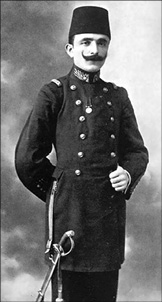
22 Temmuz 1913’te Edirne’ye giren Osmanlı Ordusu’nun başında olması, sürekli toprak kaybeden imparatorlukta bir anda kahraman mertebesine yükselmesini sağlamış, hatta hakkında ‘Edirne’nin ikinci fatihi’ gibi övgüler düzülmüştü. Edirne’ye girdiğinde sarf ettiği “Buradayız ve burada kalacağız!” cümlesi de bu imajını pekiştiren unsurlardan biri olmuştu.
Abdülhamit, Enver ve karşılıklı hamleler
1908’e gelindiğinde Enver, kendi sorumluluk alanındaki muhalefetin bir numaralı ismi olmuştu. İstanbul’daki Sultan’a karşı darbe yapmayı planlıyorlardı. Bununla birlikte, geniş istihbarat ağı olan Sultan Abdülhamit, yabana atılamayacak kadar kurt bir devlet adamıydı. Tehlikenin farkındaydı. Makedonya’da olan bitenlerin boyutunu belirlemek için bir soruşturma emri verdi. Enver’in, kendisine zarar verecek raporların payitahta ulaşmasını engellemek için yapabileceği tek şey, Sultan’ın müfettişini ortadan kaldırmaktı ve o da öyle yaptı. Sultan’ın karşı hamlesiyse daha zekiceydi. Enver’i terfi ettirdi ve tayinini İstanbul’a çıkardı. Ancak Enver, başkente gitmek yerine illegal alana kayacaktı.
İttihatçılar dağa çıkıyor
Enver Paşa İstanbul’a tayin emri üzerine dağa çıktı. Zaten kendisinden kısa bir süre önce de, hareketin diğer önemli isimlerinden Yüzbaşı Resneli Niyazi Bey de Payitahta rest çekerek taburuyla birlikte Manastır’da dağa çıkmıştı. İmparatorluğun zembereğini attıracak süreç başlıyordu. İttihatçılar, 23 Temmuz 1908 sabahı Selanik’teki hükümet konağını basınca, muhalefetin ciddi olduğunu gören II. Abdülhamid, hiç vakit kaybetmeden, İkinci Meşrutiyet’i ilan etmek durumunda kaldı. Osmanlı imparatorluğu bir kez daha parlamenter monarşiye geçmişti.
Lakin bir süre sonra işler yine karışacaktı. Yeniden açılan Meclis, ‘dinci’ olduğu iddia edilen İttihatçı hareket karşıtlarının yoğun muhalefeti altındaydı. İstanbul’da karışıklıklar çıkmaya başlamıştı. Özellikle 1909 yılı Nisan ayında huzursuzluğun boyutları artınca, ittihatçılar harekete geçmek zorunluluğu hissetti. Kurdurdukları rejim, tehlike altındaydı. Selanik’ten gelen Hareket Ordusu, 24 Nisan 1909’da olayları bastırdı. Bu arada Selanik’ten Hüseyin Hüsnü Paşa’nın kumandanlığı ve Mustafa Kemal’in kurmaylığında yola çıkan ordunun İstanbul’a ulaştığında başında Mahmut Şevket Paşa, kurmay başkanlığında da, Berlin’den gelerek operasyona katılan Kurmay Binbaşı Enver bulunuyordu.
İttihatçıların olayları denetim altına almasıyla 27 Nisan’da tekrar toplanan Meclis, faturayı II. Abdülhamit’e keserek kendisini tahttan indiriyor, yerine V. Mehmet Reşat’ı geçiriyordu. Bu arada Mithat Paşa’nın 1876’daki anayasası da tekrar yürürlüğe girmişti. Enver, artık hem İT bünyesinde hem de devlette çok güçlü bir isimdi.
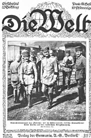
Enver Paşa ve Alman Mareşali von Mackenesen birlikleri denetlerken.
Enver’in Almanya hayranlığı ve iktidara el koyması
Enver, yeni döneme yeni bir görevle başlamıştı. Askeri ateşe olarak Berlin’e gitti. Bir daha hiç peşini bırakmayacak olan Alman etkisi de böylelikle başlamış oluyordu. Berlin’de Almancasını geliştiren Enver’e göre Almanya yenilmez ve ihtişamlı bir güçtü. Ona oynayan kazanırdı. Enver’in kendince ülkesine katkıda bulunabilmesi, onu kazananlar safına sokabilmesi için, önce kendisinin önemli bir konuma gelmesi gerekiyordu. Herkes açısından maceralı ama kanlı bir dönem başlamak üzereydi.
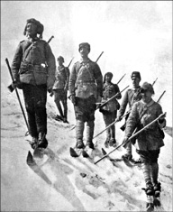
Bazı rütbeleri tam olarak sindirmeden ve cephede hakkını vermeden yükselen Enver Paşa’nın Sarıkamış Cephesi’nde imzasını attığı sevk ve idare fiyaskosu, binlerce Osmanlı askerinin, kurşun sıkmak bir kenara, Rus askerlerini görmeye dahi fırsat bulamadan soğuğun ellerinde şehit olmasına neden olmuştu. Sarıkamış Harekatı’na katılan Türk askerleri…
Libya harekâtındaki gözüpekliğinin karşılığı olarak yarbaylığa terfi eden Enver, aynı zamanda Bingazi valiliğine atanmış, İtalyanların Libya’nın kontrolünü alması üzerine de İstanbul’a dönmek zorunda kalmıştı. Zaten onun da gözü İstanbul’daydı. Ülkenin kaderinde daha çok rolü olmasını istiyordu. Hepsinden öte imparatorluğun kaybettiği toprakları geri almayı planladığı gibi, bunlara yenilerini eklemenin hayallerini de kuruyordu. Bu hayalleri imparatorluğa pahalıya patlayacaktı.
1913’te orduya Edirne’ye yürümesi emrini verdi. Balkan Savaşları esnasında Bulgaristan’a kaybedilen şehrin geri alınması, Bulgaristan o esnada diğer Balkan ülkeleri ile savaştığı için, kolay olmuştu. Bu zafer Enver’i önce albay, ardından 5 Ocak 1914’te de general yapıyordu. Artık sürekli o şekilde anılacağı ‘Enver Paşa’ olmuştu. Bu arada giderek artan etkisini, Şehzade Süleyman’ın kızı Naciye Sultan ile yaptığı evlilikle de pekiştirmişti. Bir süre sonra Enver Paşa, şartların kendi lehine gelişmesiyle birlikte, Sait Halim Paşa kabinesine giriyordu. O artık Harbiye Nazırı’ydı (savaş bakanı veya milli savunma bakanı). Görünüşte bu, ordunun gençleştirilmesi adına atılmış bir adımdı. Zira temayüller gereği daha önce bir tuğgeneralin savaş nazırı olduğu görülmemişti.
O andan itibaren Osmanlı İmparatorluğu’nda padişahın etkisi giderek sınırlanmış ve yönetim de facto olarak üç paşanın; Talat (İçişleri Bakanı) ve Cemal (Donanma Bakanı) ve Enver paşaların eline geçmişti. (Talat hiçbir zaman askerlik yapmadı. Paşa olan sadece lakabıydı.) Ülkede artık her şeyin bu üç paşadan sorulduğu dönem, tarihe Üç Paşalar İktidarı olarak geçecekti. Böylelikle hem Enver Paşa hem de çok sevdiğini iddia ettiği ulusu adına talihsizlikler silsilesi de başlamış oluyordu.
I. Dünya Savaşı patlak vermişti ve Enver Paşa, Rusya’ya karşı İttifak kuvvetlerine destek olmak için Almanya’yla müzakerelere girişmişti. Sultan ise saraylardan birine sıkışmış, etkisiz bir şekilde olan biteni izliyordu…
Enver: ‘Bırakın gemiler içeri girsin…’
Goeben ve Breslau adlı Alman savaş gemileri Akdeniz’de bir taraftan sağı solu bombalıyor, bir taraftan da kendilerini takip eden İngiliz donanmasından kaçıyorlardı. 1914’ün 10 Ağustosunda Çanakkale Boğazı’na ulaşan gemiler, Almanya’nın İttihatçılara baskı yapması ve Enver Paşa’nın da izniyle 16 Ağutosta İstanbul’a geldi. Aynı gün Yavuz Sultan Selim ve Midilli isimleriyle satın alınarak Osmanlı donanmasına dâhil edilen gemilerin sadece ismi Türkleştirilmişti. Mürettebat ve kaptanlar değişmemişti. Her ne kadar hükümet, ‘tarafsızlığına’ sıkı sıkıya bağlı olduğunu beyan etse de, bu Alman gemilerini Türkleştirme işi, hayra alamet bir işaret değildi. Osmanlı, tarafsızlık ilkesine aykırı olan ve Enver Paşa’nın imzasını taşıyan bu operasyonla bir şekilde rengini belli etmiş oluyordu. Zaten bir süredir olası bir savaşa karşın seferberlik de başlatılmıştı. 29 Ekim günü Yavuz ve Midilli’nin de aralarında bulunduğu Osmanlı savaş gemileri, Rusların Odessa, Sevastopol ve Tedosya limanlarını bombardıman edince, 2 Kasım’da Rusya, 5 Kasım’da da İngiltere vakit geçirmeden Osmanlı’ya savaş ilan etti. Enver’in istediği olmuştu. ‘Sağlam ata’ oynanmış, Osmanlı Almanya ile birlikte dünya savaşına girmişti!
Burada bir ara verip, Enver’in haricindeki ittihatçıların Almanya’dan önce sırasıyla İngiltere, Fransa ve Rusya’yla ittifaka girmeye çalıştığını ama yüz bulamayınca, ‘Almanya’nın süratle zafere ulaşacağına’ inanan Enver’i destekleme yoluna gittiklerini de hatırlatmak gerekir. Bu ülkelerden biri ittifaka yeşil ışık yaksa ya da yoldaşları Enver’e direnip savaş dışı kalmayı başarabilseler ne olurdu, Allah bilir. Ama kesin olan şuydu; Osmanlı safını seçmiş, ateşe dalmıştı.
Osmanlı, savaşa Avrupa, Suriye, Irak, Filistin ve Kafkasya cephelerinden girdi. O ana kadar Enver’in askeri kariyerinde hep yanında olan şans faktörü kendisini terk edecek, basiretsizliği ile baş başa kalacaktı. Azerbaycan cephesinde ihtiyaç duyulan askerleri Avrupa cephesine kaydırdı. Arabistan’daki güçleri ihmal etti ve Alman danışmanların Osmanlı subayları tarafından verilen emirleri iptal etmesine izin verdi. Daha da kötüsü, bizzat kumanda ettiği 150 bin kişilik güçlü 3. Ordu’yu, kendisinden daha küçük olan Rus 3. Ordusu’na karşı Kafkasların soğuğunda ölüme götürecek olmasıydı.
‘Ne pahasına olursa olsun Rusları yenin!’
Bu arada Almanlar, Kayzer Wilhelm’in tabiriyle ‘Alman ordusunun tüfeğine süngü olmuş’ Türklerin ülkesine giden trenlerin üzerine ‘Enverland’a (Enver’in Ülkesi’ne) gider’ yazarlarken, Türkler, Almanya aşkına girilen dünya savaşının doğu cephesinde Ruslarla boğuşuyordu. Kış bastırmak üzereydi. Enver Paşa, acele ediyor, bir an evvel Rusların defterinin dürülmesini istiyordu. Zira Ruslar alt edilebilirse, Orta Asya’daki diğer Türk illerine giden yol açılacak, Enver, Osmanlı İmparatorluğu’nu tekrar ayağa kaldırmasının yanı sıra Orta Asya Türklerini Kızıl Ordu’nun boyunduruğundan kurtararak, büyük Turan İmparatorluğu’nu da kuracaktı! Gerçeklikle kopuk bir stratejiye saplanan henüz 34 yaşındaki bu genç paşa, imparatorluğu felakete sürüklediğinin farkında değildi. 16 Aralık 1914’te ‘Rus ordusunu Sarıkamış’ta yok edin!’ emrini verdiği, aynı zamanda eski hocalarından biri olan Hasan İzzet Paşa, “Bu hava şartlarında böylesi bir operasyon intihar olur, kışın geçmesini bekleyelim.” şeklinde karşılık verdiğinde gösterdiği tepki, ruh halini ve askerlik kalibresini gösteriyordu:
“Eğer hocam olmasaydınız, sizi idam ettirirdim! Ölseniz de gideceksiniz!”
Hasan İzzet Paşa gibi bazı kumandanlar, gidişattan rahatsız olarak harekâttan önce istifa edecekti. Böylelikle Yemen cephesinden dönen birlikler, yazlık donanımlarıyla Ruslardan ziyade kar ve tipinin kendilerini beklediği bir cehenneme sürüldü. O askerlerden biri evine yazdığı mektupta sevdiklerine şöyle sesleniyordu; “Kumandanımız, gelecek cuma Başkumandan Enver Paşa Hazretleri’nin teftiş ve hücum için geleceğini müjdeledi. O gelinceye kadar da yün içlik, çorap ve paltoların verileceğini ve Yemen yazlıklarını atacağımızı müjdeledi. Allah, devlete ve millete zeval vermesin… Başkumandan Paşa Hazretleri acele gelse ki, ateşe kavuşsak...”
Mehmetçiğin ateşi beklemesi beyhudeydi. Bu arada Ruslar, doğu cephesine mühimmat ve erzak taşıyan gemileri batırmış, ama bu kimseye duyurulmamıştı. Tüm bu olumsuz şartlara gözlerini kapamış ve Turan hülyasına dalmış Enver Paşa birliklere şu mesajı çekiyordu:
“Askerler! Hepinizi ziyaret ettim. Ayağınızda çarık, sırtınızda paltonuz olmadığını gördüm. Lâkin karşınızdaki düşman sizden korkuyor. Yakın zamanda Kafkasya’ya gireceğiz. Orada her türlü nimete kavuşacaksınız. İslâm Âlemi’nin bütün ümidi sizsiniz.”
Enver Paşa bu arada, Şeyhülislam’ın cihad fetvası yayınlamasını da sağlamıştı. Ülke tam bir seferberlik havası esiyor, “Melekler bu milletin kurtulacağını ona fısıldarlar.” diyerek Paşa’nın ideologluğunu yapan Ziya Gökalp’in ‘Düşman ülkesi viran olacak, Türkiye büyüyüp Turan olacak!’ başlıklı şiirleri, Enver Paşa’nın ideallerine su taşıyordu.
Erzurum’a gidip 3. Ordu’nun başına geçen Harbiye Nazırı ve Başkumandan Vekili Enver Paşa, 10. Kolordu’nun başına da başka bir saray damadı olan Albay Hafız Hakkı Bey’i getirmişti. 1914’ün 22 Aralığında Sarıkamış Harekâtı başladı. Planlara göre üç kolordudan oluşan 3. Ordu’nun bir bölümü Allahuekber Dağları’nı yürüyerek aşarak Sarıkamış’ı kuşatacaktı. Lakin Hafız Hakkı Bey’in kaçan Rus birliklerini takip uğruna sahayı genişleterek, kışlık elbiseleri olmayan on binlerce askeri, soğuğu dişleri donduran Allahuekber Dağları’na sürmesi, felaketi başlatmıştı. Binlerce asker soğuk ve tifüsten dolayı, düşmana tek kurşun sıkmaya fırsat bulamadan şehit oldu. Durumun kontrolden çıktığını gören Enver Paşa, komutayı Hakkı Bey’e bırakarak, Erzurum’a döndü. Daha sonradan yaşanan bozgunu, asırlar önce düşmanlarına esir düşen Fransa Kralı Fransuva’ya atfedilen ‘şereften başka her şey mahvoldu.’ cümlesiyle özetleyecek olan Hakkı Paşa, 4 Ocak’ta geri çekilme emri verdi.
Yaygın olan kanaate rağmen Sarıkamış Harekâtı, Türk ve Alman genelkurmayı tarafından dikkatle planlanmıştı. Lakin tarih planlara göre değil, sonuçlara göre yazılıyordu ve başta Hakkı Paşa olmak üzere bazı komutanların kahramanlık dürtüsüyle cepheyi genişletmesi, lojistiğin sağlanamaması, soğuk, salgın hastalıklar ve Rus ordusunun beklenenden daha dirençli ve donanımlı çıkması, 3. Ordu’yu çökertmiş, sayıları halen tartışılan binlerce Osmanlı askeri şehit olmuştu.
Alman Von der Goltz Paşa, Sarıkamış’a ithafen “Kafkasya’da maalesef Napolyon Bonapart olduğunu iddia eden birçok cahil var. Bunlar, ordularına güçleriyle bağdaşmayan görevler vererek büyük zarara uğratmışlardır.” diyecekti.
İstanbul’a dönen Enver Paşa, Sarıkamış fiyaskosunu, uyguladığı sıkı sansürle, 1922’ye kadar uykuya yatırmayı başaracaktı.
Enver Paşa ülkeden ayrılıyor…
İttihat ve Terakki yönetimi çökene kadar, Sarıkamış’tan bahsetmek yasaklansa da, hezimeti ve bunun getireceklerini bilmesi gerekenler biliyordu ve Enver Paşa için yolun sonu görünmüştü. Bu arada sürekli kendisine rakip olarak gördüğü Mustafa Kemal ise, Çanakkale de yaptıkları ile yükselmeye başlamıştı…
Yakın zamana kadar okullarımızda hafif bir utançla ‘I. Dünya Savaşı’nda Almanya yenilince biz de yenilmiş sayıldık’ diyerek geçiştirilen I. Dünya Savaşı’nda Osmanlı İmparatorluğu, Çanakkale başta olmak üzere, birçok cephede destansı bir mücadele vermesine rağmen, ‘yenilmiş sayılmamış’, bizzat yenilmişti. Ve bir daha hiçbir şey eskisi gibi olmayacaktı.
Osmanlı’yı, topraklarının parçalanıp galipler arasında bölüştürülmesini öngören Sevr Antlaşması’na sürükleyen bu çöküşün ardından Kasım 1918’de Enver Paşa, Berlin üzerinden Rusya’ya kaçmak zorunda kaldı. Osmanlı İmparatorluğu Enver Paşa’nın hayalleri ile dimyata pirince giderken evdeki bulgurdan da olmuş ve Anadolu’daki küçük bir toprak parçasına sıkışmıştı. Tarihinin geri kalanındaysa Mustafa Kemal’in liderliğindeki bir başka maceraya yelken açacaktı…
Maceraya doymayan Enver Paşa, Lenin ile kol kola
İlginçtir Enver Paşa, daha kısa bir süre öncesine kadar Orta Asya Türklerini ‘elinden kurtarmak’ için binlerce insanı kendisine karşı savaşmaya yolladığı Rusya’da yeni bir siyasi misyon edinmekte gecikmemişti. İhtiras ve macera tutkusunun basiretini bağladığı devrik Paşa, Moskova’da Rus devriminin mimarlarından Vladimir İlyiç Lenin ile tanışmış, onun tarafından Orta Asya’yı gezmek ve Doğu’nun Müslümanlarını işçi sınıfı düşüncesi arkasında toplamakla görevlendirilmişti. Aslında her iki tarafta birbirini kullanmanın yollarını arıyordu.
Enver 1920 yılı Eylül ayında Bakü’de Doğu Ulusları toplantısına katıldı ve hemen ardından Batum’da Türkiye Şuraları Partisini kurdu. Halen Türkistan’ı kurtarma ve Turan İmparatoru hayalinden vazgeçmiş değildi.
Ermeni Tehciri’nin mimarı olarak gösterilen Talat Paşa’nın 1921’de Berlin’de bir Ermeni tarafından öldürülmesi üzerine Enver Paşa, hareketin sürgündeki liderliğine talip oldu. Bu arada Milli Mücadele hareketine katılmak istemesine rağmen reddedilmesi, Ankara’daki yeni oluşuma dönük öfkesini büyütmüştü. Moskova’dan Aşkabat’a ve Merv’e, oradan da Buhara’ya geçti. Buhara’da eski fonksiyonunu yitirmiş Osmanlı’ya küskün Orta Asya Müslümanlarının enerjisi ile Sovyetler Birliği’ndeki genç savaşçıları birleştirerek, Mustafa Kemal’in Türkiye’de filizlenmekte olan iktidarına karşı büyük bir güç oluşturmayı planlıyordu. Ancak bunlar sadece birer hayal olarak kalacaktı. Mustafa Kemal’in Sakarya’da kazandığı zafer, genç Sovyet rejimini, yeni doğmakta olan Türkiye Cumhuriyeti ile ittifaka itince, manevra sahası daralan Enver, Buhara’ya dönmek zorunda kaldı.
Orta Asya dağlarında bir başına ölüm
O sırada Orta Asya’da iki büyük güç etkindi. Bunlardan biri, bütün Müslümanları Batı ve Komünist Sovyet rejimine karşı birleştirmek olan Cemaleddin El Afgani liderliğindeki Panislamizm, diğeriyse, bütün Türkleri bir Türk halifenin yönetimi altında birleştirmek olan ve Osmanlı İmparatorluğu içerisinde güçlenmekte olan Pan-Türkizm.
Enver Paşa, hem muzaffer bir Türk hem de değerli bir halife olarak Müslümanlar tarafından kabul edilmeyi hayal ediyordu.
4 Ağustos 1922’de bugünkü Tacikistan sınırları içinde kalan Pamir eteklerindeki Çegan tepesinde Ruslarla girdiği çatışma esnasında, Rus mitralyözlerinden çıkan mermilere hedef olup bu dünyadan ayrıldığında, genç sayılabilecek bir yaşta, 42 yaşındaydı. Ve ölüm, tüm görkemli beklentilerine nazire yaparcasına onu Orta Asya dağlarında yapayalnız yakalamıştı.
Şöhret ve popülerlik aşkı ile başlayan dramatik son…
Yurt dışına çıkmasının ardından, yeni kurulan rejim tarafından I. Dünya Savaşı’ndaki rolü nedeniyle ağır eleştiri bombardımanına tutulan Enver Paşa hakkında yapılan yorumlar, dönemden döneme, siyasi atmosferin rengine göre değişiklikler gösterir. Kimi çevreler ve kaynaklar, onun günah keçisi ilan edildiğini, hiçbir zaman Anadolu’daki kurtuluş hareketine yan gözle bakmadığını ve hatta Rusya’da iken harekete silah gönderilmesi için çalışmalar yaptığını öne sürer. Yine de bunlar, Enver Paşa’nın, kısa sayılabilecek hayatında, sağduyu ve öngörüden ziyade, ihtirasları ve hayallerinin belirleyici olduğu gerçeğini değiştirmez. Enver Paşa, ülkesinin rejiminin değişmesinde rol oynadı; başkomutanlığına yükseldi. Ardından kaybedilen toprakları geri kazanmak, bunu yaparken Sovyet Rusya’nın boyunduruğundaki Müslüman Türk illerini de kurtarıp, imparatorluğun sınırlarını daha da genişletmek istedi. Bu uğurda ve Pan İslamizm ve Pan Türkizm aşkına, ülkesini manasız bir dünya savaşına sokup, topraklarının büyük bir kısmının kaybına, on binlerce askerinin de ölmesine neden oldu. Yurt dışına kaçtı. Ülkesinde yeni kurulan yönetime katılmak istedi, olmayınca, diş biledi. Bir zamanlar yıkmaya çalıştığı Rusya ile işbirliğinin yollarını aradı. Kimilerine göreyse Bolşevik desteğini Orta Asya Müslümanlarının bağımsızlığı uğruna kullanmak istiyordu. O da olmadı. Bu kez Orta Asya’da örgütçülüğe soyundu, Ruslara karşı ayaklandı. Ruslar tarafından ‘İngiliz ajanlığı’ ile suçlandı. Cemal Paşa da dahil olmak üzere onu yakından tanıyanlarsa onun bu girişimlerini hep ‘şöhret düşkünlüğü ve popüler olma hırsı’ şeklinde değerlendirdi. Osmanlı’nın tarih sahnesinden çekilmesini hızlandıran Enver Paşa’ya dair daha çok şey söylenebilir muhakkak ama inkâr edilemeyecek gerçek, hiç elde edemeyeceği zaferlerin peşinden koşmayı bir an olsun bırakmamış bir hayalperest olduğuydu.
NOTLAR
- Askeri okulu birincilikle bitirdi. Libya savunmasında ve Edirne’nin geri alınmasında oynadığı rolle iyi bir asker olduğunu gösterdi.
- Amcası Halil Paşa ile Yıldız Sarayı’na götürülerek muhalif fikirlerinden dolayı sorgulanması ilk siyasi deneyimi oldu.
- Orduda ‘Enveriye’ denilen askeri başlıkların kullanılmasını uygulamaya soktu.
- ‘Enveri’ adı verilen ve Arap harflerinin birbirinden ayrı yazılması esasına dayanan yeni bir alfabeyi kullanıma sokarak, kendince okuma ve yazmayı yaygınlaştırmak istedi.
- İmparatorluğu soktuğu I. Dünya Savaşı’nda sadece Kafkas Cephesi’nde kumandanlık yaptı.
- Vahdettin’in tahta geçmesiyle azledildi; diğer ittihatçılarla yurt dışına çıktı. 1 Ocak 1919’da hükümet tarafından askerlikten ihraç edildi.
- Cemal ve Talat Paşa ile birlikte, ‘Gereksiz yere ülkeyi savaşa sokmak, özellikle Ermeniler başta olmak üzere azınlıkları tehcire tabi tutmak ve izinsiz olarak yurtdışına çıkmak’ suçlarından Divan-ı Harb’e sevk edildi.
- Rus askerleri değil, ‘Saruhanyan’ isimli bir Ermeni tarafından öldürüldüğü iddia edilse de, bu kanıtlanamadı.
- Alman ordusunda propaganda ve eğitim amacıyla kullanıldığını gördüğü sinemayı, Merkez Ordu Sinema Dairesi ismiyle 1915’de ülkeye getirmesiyle, Türkiye’de sinemanın temellerini attığına inanılır.
- Tacikistan’daki naaşı 1996 senesinde Türkiye’ye getirilerek, ölüm yıldönümü olan 4 Ağustos 1996’da Şişli Abide-i Hürriyet Tepesi’ne defnedildi.
Çöken bir imparatorluğun subayıydı, kurduğu devletin cumhurbaşkanı oldu
MUSTAFA KEMAL ATATÜRK
(1881-1938)
“Sert, dayanıklı ve mücadeleci. Bence
harika bir subay. Kelimenin tam mana
sıyla mükemmel bir yönetici.”
General Liman von Sanders
“Üzüntüm, onunla tanışmak için duyduğum büyük arzuyu gerçekleştirme imkânımın artık olmaması. Sovyet Rusya Dışişleri Bakanı Litvinof ile görüştüğümde kendisine, Avrupa’daki en değerli ve en dikkate değer devlet adamının kim olduğunu sormuştum. Cevabı, Türkiye Cumhurbaşkanı Mustafa Kemal olmuştu.”
Bu sözler, Amerika eski başkanlarından Franklin D. Roosevelt’e ait. Atatürk hakkında buna benzer, diplomatik nezaket gereği söylenmediği aşikâr iltifatları dile getiren sadece Roosevelt değildi. Tarihin birbirinden renkli koridorlarında gezenler, İngiltere Başbakanı Winston Churchill’den, Fransızların efsane Devlet Başkanı Charles de Gaulle’e, İsrail başbakanlarından Ben Gurion’dan Sovyet devriminin babası Lenin’e varıncaya dek, birbirinden etkili onlarca devlet adamının Atatürk hakkındaki benzer yorumlarına rastlayacaktır. Peki neden? Sanırım bunun çarpıcı ve sadece bir tek nedeni var: Atatürk’ün, bu isimlerin takmak istediği, ama takmayı beceremediği şapkaların tümüne sahip olabilmesi; asker, devrimci, ülke kurucu bir devlet adamı olabilmesi.
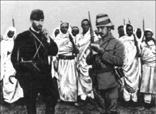
Atatürk, tarihe damgasını vuran devlet adamlarından biri olsa da, ilk göz ağrısı askerlikti. Ve her şeyden once her zaman için asker oldu. Kendisi gibi savaş kahramanlarından Amerikalı General MacArthur’un ‘Asker, devlet adamı, çağımızın en büyük liderlerinden biri idi. Kendisi, Türkiye’nin, dünyanın en ileri memleketleri arasında hak ettiği yeri almasını sağlamıştır. Keza O, Türklere, bir milletin büyüklüğünün temel taşını teşkil eden, kendine güvenme ve dayanma duygusunu vermiştir.’ sözleriyle hatırladığı Atatürk, henüz Kurmay Binbaşı Mustafa Kemal iken, 1912’de Derne’de, Mücahit Bedevi kuvvetleri ile birlikte…
57 yıl gibi kısa sayılabilecek bir zaman diliminde tüm bu etiketlerin hakkını veren Atatürk, Osmanlı toprağı Selanik’te dünyaya gözlerini açtığında, sadece Kemal’di. Matematik hocasının katkısı ile Mustafa Kemal oldu. Atatürk adını alana kadar geçen zaman içerisindeyse, hem kendi hayatı, hem de doğduğu toprakların kaderi, büyük ölçüde değişecekti.
O artık bir Jön Türk…
Osmanlı toplumunda ilerlemek için en avantajlı yolun askeri kariyer yapmaktan geçtiğini hisseden Mustafa Kemal, askeri okulun kapısından girdiğinde henüz on iki yaşındaydı. Askerlik eğitimini devam ettirmek için gittiği İstanbul’da, eğitiminin yanı sıra büyük bir hevesle yeni oluşmakta olan ve ‘Türkiye’nin Osmanlı zihniyeti ile yollarını ayırması’ fikrini destekleyen Jön Türk hareketine katıldığındaysa yirmi beş. Belki o zaman kendisi bile farkında değildi, ama gerçek anlamda tarihi değiştirecek bir adım atmıştı. Hem kendisinin hem de üniformasını taşıdığı ve uzun zamandır irtifa kaybetmekte olan İmparatorluğun tarihini…
1905’te akademiden yüzbaşı olarak mezun olup, 1911-12 yıllarında imparatorluğun Libya topraklarını binbaşı rütbesiyle İtalya’ya karşı savunduğu ana kadar geçen zaman diliminde hayatında ilginç değişiklikler olmuştu. Beyin kadrosu arasında bulunduğu İttihat ve Terakki hareketinin bastırmasıyla başkent İstanbul’da, ikinci kez meşruti düzene geçilmiş, kendisi de bizzat, Padişah II. Abdülhamit üzerinde baskı kurarak bu değişikliği hayata geçiren hareket ordusunun önemli isimlerinden biri olmuştu. O andan itibaren de sadece asker değil, aynı zamanda üniformalı bir devrimciydi de…
Ama askeri kimliği her şeyin önünde geliyordu. Ülke tarihinde halen etkisini sürdürmesine yol açan kapıyı da; kendisi gibi ittihatçı Enver Paşa’nın, Alman hayranlığı ve çokça da siyasi ikbal hevesiyle imparatorluğu oldubittiye getirerek soktuğu Birinci Dünya Savaşı’nda açacaktı.
Çanakkale’de düşmanı değil, ‘çıkartma’ kavramını da yendi
Şubat 1915’e gelindiğinde Mustafa Kemal, Tekirdağ›da kendi kurduğu 19. Tümenle Birinci Dünya Savaşı’nın Çanakkale cephesinde müttefiklere kök söktürüp, albaylığa yükseldiğinde, dünyada kendisini tanıyanların sayısı artacak, Osmanlı bürokrasisinin dikkatini üzerine çekecekti.
Mustafa Kemal, Savaş Bakanı Enver Paşa’nın düşmanı olacak kadar Almanya’nın Osmanlı ordusu üzerindeki etkisine karşı da olsa, Çanakkale’de başında bir Alman generali (Liman von Sanders) olmasına rağmen, asker olarak görevini destansı bir şekilde yerine getirecekti.
Avustralyalı ve Yeni Zelandalı askerlerden oluşan bir İngiliz ordusu 25 Nisan 1915’te hem karadan hem de denizden çıkarma yapınca inisiyatifi ele alan Mustafa Kemal, Çanakkale cephesindeki gidişatı değiştiriyordu. Çıkartma yapılan yerlerin tepelerden ve köprübaşlarından keşiflerini bizzat kendisi gerçekleştirmiş, Almanların desteğini veya emirlerini beklemeksizin, askerlerini alaylara bölerek yapılan her çıkarmaya parça parça karşılık vermişti. Savunmasını Conk Bayırı ve Sarı Bayır’da toplamış ve askerlerine ‘ölmeyi’ emrederek, İttifak güçlerinin dar sahillerden yukarıya çıkmalarını, etkili karşı saldırılarla önlemişti.
Aylar süren çatışmaların ardından Mustafa Kemal’in askerleriyle ördüğü çelikten, kandan ve etten duvar, İttifak güçlerinin ilerlemesine set çekti. Çanakkale çarpışmalarının en etkili sonucu, Mustafa Kemal’in ittifak kuvvetlerini geri püskürtmesinin, İkinci Dünya Savaşı’nın ilk günlerine kadar müttefik kuvvetlerinin amfibi bir çıkartma harekâtı yapmaktan çekinmelerine sebep olmasıydı. Bu gözü pek ve kıvrak bir askeri zekâya sahip genç subay, Gelibolu yarımadasında sadece düşmanı yenmekle kalmamış, geçici bir süre de olsa önemli bir saldırı seçeneği olan ‘çıkartma’ kavramını da mağlup etmişti.
Gelibolu savunması, Mustafa Kemal’e generallik rütbesi ve 1916 yılı boyunca başına ittifak güçlerine karşı başarılı bir şekilde savaşacağı 16. Tugay’ın komutanlığını kazandırdı. Ancak Mustafa Kemal’in bu başarıları ve Almanların emrinde olmaktan rahatsız olması, Enver Paşa’yı huzursuz ediyordu. Zaten ikilinin yıldızları hiç barışmayacaktı.
1917’de komutadan el çektirilen Mustafa Kemal’e hastalık izni verildi. Lakin bir yıl sonra Osmanlı-Almanya koalisyonu ittifak güçleri karşısında çatırdamaya başladığında, Enver Paşa’nın Filistin’deki Yedinci Ordu’nun başına geçme çağrısıyla tekrar silah başı yapacaktı. İngiliz komutan Edmund H. Allenby’in daha donanımlı ve sayıca üstün birlikleri karşısında yapabileceği en iyi şey, başarılı bir şekilde savunmaya çekilmekti.
Dünyanın gördüğü bu ilk topyekûn savaşta askerlik hünerlerini sergilediği tek yer Çanakkale ve Filistin olmamıştı. Diyarbakır yöresinde Ruslarla çarpışmış, Bitlis ve Muş’u düşman işgalinden kurtarması üzerine 2. Ordu komutanlığına atanmış, Mondros Mütarekesi’nin ardından da Yıldırım Orduları Grubu Başkomutanlığı’nı devralmıştı. İmparatorluğunu içine düştüğü cendereden kurtarmak için elinden geleni yapıyordu. İttihatçılıktan yoldaşı olan Enver ile aralarındaki fark da buydu: Biri ölçüsüz yetkisi ile ülkeyi maceraya sürüklemiş; diğeriyse sınırlı yetkisiyle kendince durumu iyileştirmeye soyunmuştu. Ama Mustafa Kemal’in paslanmaya yüz tutan bir makinenin parlak bir dişlisi olması, sonucu değiştirmeyecekti. Tarih hükmünü vermiş, Osmanlı blöf yaparak oturduğu kumar masasından, eli boş kalkmıştı.
Müttefiklerin zaferiyle sonuçlanan Birinci Dünya Savaşı Osmanlı İmparatorluğu’na yıkım getirirken, Mustafa Kemal’in de içinde bulunduğu kadronun zihninde ‘yeni bir yapılanma’ fikri filizleniyordu.
Samsun’a gidiyor… Ama nasıl?
İttifak güçleri Osmanlı’ya üzerinde neredeyse gecekondu yapmaya yetecek bir toprak parçası bırakılmasını öngören Sevr Antlaşması’yla imparatorluğu bölme planları yaparken, İstanbul’daki sultanın sınırlı bir ordusu ve etki alanı vardı. İttifak güçlerinin İstanbul’a ilerlemesiyle Yunan askerleri Şubat 1919’da İzmir’i işgal etti. Bu, sineye çekilebilecek bir durum değildi. Ve Mustafa Kemal, o tarihi adımı atarak, Samsun’a gitti. Samsun’la birlikte imparatorluğun cumhuriyete doğru kabuk değiştirme süreci de başlıyordu.
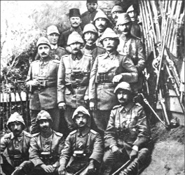
Mustafa Kemal, kendisini önemli bir askeri aktör haline getiren ilk başarısını, Albay olarak görev yaptığı Çanakkale cephesinde elde etmiş, üstelik bunu yaparken ittifak güçlerinin uzun bir süre bir daha bir yerlere ‘çıkartma’ yapamayacak hale getirmişti. Mustafa Kemal, Çanakkale cephesinde, Üçüncü Kolordu Komutanı Esad Paşa ve diğer askerle birlikte.
Bu noktada biraz soluklanıp, her zaman tarih tartışmalarının en can alıcı noktalarından biri olan bu Samsun hadisesini biraz irdeleyelim isterseniz. Mustafa Kemal’in Samsun’a gidişiyle ilgili iki türlü tarih yazımı mevcuttur. Yakın zamana kadar Türkiye’deki baskın öğreti, politik ve ideolojik sebeplerden dolayı, dönemin padişahı Vahdettin’in ‘hainliğine’, Mustafa Kemal’inse ‘kahramanlığına’ dayanıyordu. Buna göre Birinci Dünya Savaşı’nın ardından imparatorluğun başkentini ablukaya alan işgal güçleri, dönemin hükümetine Samsun ve çevresindeki olaylar nedeniyle baskı yapıyordu. Dediklerine göre, Türkler Rum azınlığa saldırıyordu ve bu durum bir an evvel kontrol altına alınmalıydı. Sadrazam Damat Ferit Bey, Dâhiliye Nazırı Mehmed Ali beye bu işin nasıl çözüleceğini sormuş, o da kendisi gibi ittihatçı olan ve dönemin yükselen kurmaylarından Çanakkale kahramanı Mustafa Kemal’i tavsiye etmişti. Sadrazam Mustafa Kemal’i huzuruna çağırmış ve görev emrini padişaha imzalatarak, Mustafa Kemal’i 3. ordu müfettişliğine atamıştı. Üstelik Mustafa Kemal, yeni göreviyle Samsun’a hareket etmeden önce Vahdettin ile baş başa bir görüşme yapmış, padişah kendisine başarılar dileyerek, bir de saat armağan etmişti. Özetle baskın olan ama son yıllarda farklı yorumlarla gevşeyen ve daha rahat tartışılır olan bu yaklaşıma göre Sultan, Mustafa Kemal’i, Anadolu’ya, ‘düşman işgaline karşı ayaklanan halkı’ bastırması için göndermiş, buna karşın Mustafa Kemal, Sultanın arzusunun aksine, çevresindeki Türkleri, Türk bağımsızlığına karşı çıkan iç (İstanbul hükümeti ve destekçileri oluyor) ve dış düşmanlara karşı harekete geçirmişti.
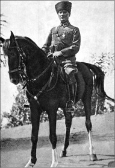
İyi bir savaşçıydı. Zaten bunu, son derece zor şartlara rağmen, ülkedeki son mermiye varıncaya kadar kullanma kararlılığını göstererek, Lozan’da Türkiye’nin elini güçlendirmesiyle göstermişti. Ama aynı zamanda, Çanakkale’de kendisine karşı savaşırken bir kolunu kaybeden ünlü Fransız Generali Gouraud’ya, yıllar sonra Ankara’da karşılaştıklarında ‘Türk topraklarında yatan şerefli kolunuz, memleketlerimiz arasında son derece kıymetli bir bağdır.’ diyecek kadar da centilmendi. Fotoğraf: Mustafa Kemal, Sakarya ismini verdiği atı ile.
Osmanlı’nın son padişahı Vahdettin’i hainlikle itham eden bu geleneksel yaklaşımın alternatifi de var doğal olarak. Buna göreyse (ki bu yaklaşım, 2005 yazında eski başbakanlardan Bülent Ecevit’in “Ben Vahdettin için hiçbir zaman hain demedim, çünkü ne kadar zor koşullarda padişahlık yaptığını biliyorum; ülke işgal altındaydı, ordusu kalmamıştı, yine de çok önemli işler yaptı’’ demesiyle derinlemesine tartışılmıştı.) Mustafa Kemal, bizzat Sultan tarafından Anadolu’ya, işgale karşı direniş hareketlerinin organize edilmesi amacıyla gönderilmişti. Peki, bu nasıl olmuştu?
Araştırmacı-Yazar Vehbi Vakkasoğlu, ‘Son Bozgun’ isimli araştırmasının birinci cildinde, Mareşal Fevzi Çakmak’ın ağzından Vahdettin’in Mustafa Kemal Paşa’yı Anadolu’ya milli mücadeleyi başlatması için gönderdiğini, hatta Mareşal’in bu olayı uzun yıllar sır gibi sakladığını yazar. Buna göre Fevzi Çakmak, eşi Fitnat Hanım’a “Fitnat. Öyle bir şey biliyorum ki ortaya çıkıp söylememe bugüne kadarki tutumumuz ve davranışlarımız müsait değil. Mecburum, bu sırrı kendimle beraber mezara götürmeye.” diyerek, sırrını şöyle aktarmıştı:
“Mütareke senesinde, bir Cuma selamlığından sonra Sultan Vahdettin beni huzuruna kabul etti. “Paşa” dedi. “Durumu görüyorsunuz. Bu işler anca Anadolu’da teşkilatlanarak kurtarılabilir. Bana Anadolu’da teşkilat kuracak, memleketi şu karanlık durumdan kurtarabilecek Paşaların bir listesini yapıp getirin.” Ertesi Cuma, yine selamlıktan sonra huzuruna girip hazırladığım listeyi verdim. Dikkatle okuduktan sonra, bir müddet sustu. Sonra yarı kapalı gözleriyle yavaş bir şekilde konuşmaya başladı:
“Paşa, Mustafa Kemal Paşa hırsız mıdır?”
“Haşa Padişahım.”
“Bir namussuzluğu, ahlaksızlığı var mıdır?”
“Haşa Padişahım.”
“Beceriksiz ve kabiliyetsiz midir?”
“Hayır efendim. O hepimizden bilgili, kabiliyetli ve dinamiktir.”
“O halde bu listeye niçin onun adını yazmadınız?”
Hiç düşünmeden cevap verdim:
“Padişahım, Mustafa Kemal Paşa yenilik, bilhassa öteden beri Cumhuriyet taraftarıdır.”
Padişah elindeki kâğıdı atar gibi masanın üzerine bıraktı... Ayağa kalkıp pencereye döndü. Limanda demirli İtilaf devletleri gemilerini göstererek: “Paşa, Paşa... Bu gemileri görmek kanıma dokunuyor. Bu memleket kurtulsun da isterse Cumhuriyet olsun... Kendine selamla birlikte tebliğ ediniz, haftaya Cuma günü Mustafa Kemal Paşa’yı göreceğim.”
Tabi ki bu konuşmanın orijinalliği de tartışılabilir. Kimileri, Atatürk’ün Nutuk’ta Vahdettin’e karşı duyduğu öfkeyi dile getirmesinden hareketle ‘Vahdettin’in hainliği’ tezini devam ettirebilir. Vahdettin’in kendi hatıraları ve Genel Kurmay Arşivi’ndeki bilgiler de, bu yaklaşımın doğruluk payını yükseltiyor. Bununla birlikte Atatürk’ün, yeni bir cumhuriyet kuran ve ülkeyi dönüştürmeye çalışan bir devrimci olarak dönemin şartları gereği, eski rejimle arasına mesafe koyma ihtiyacı hisseden bir yenilikçi olarak o satırları kaleme aldığını kabul edenler de yok değildir.
Sözgelimi Tarihçi Prof. Mete Tuncay, Vahdettin’in siyasi anlamda yanlış işler yapmış olabileceğini, ancak kendisini hainlikle suçlamanın da haksızlık olduğu görüşündedir. İhanet iddialarını ‘Cumhuriyetin kuruluş dönemi koşulları öyle gerektirdiği için dolaşıma sokulan bir söylem’ şeklinde tanımlayan Tuncay gibi, Prof. Mim Kemal Öke de bu tarih okuma şekliyle arasına mesafe koyanlardan. Vahdettin’in Saray’a yakın bazı çevrelerin baskı ve telkiniyle Atatürk’ü Anadolu’ya gönderdiğini belirten Öke, “Vahdettin Atatürk’ün ne yapacağını biliyordu, buna rağmen bu projeye onay ve maddi destek verdi. Atatürk’ün idam fermanını onaylamasıysa tamamen İngiliz baskısının sonucudur” der. Tarihçi Prof. İlber Ortaylı da Vahdettin’in hain olduğu iddiasını reddedenlerden. Ortaylı, “Son padişah İstanbul’a dahi hükmedemez durumdadır. Osmanlı mülkünün yediği darbede de kimse onun fikrini sormamıştır. Anadolu savaşının önderlerinin idam fetvasına göz yummak dışında da önemli bir hatası olduğunu söyleyemiyoruz. Gene Kuva-yı Milliye’ye karşı örgütlenen birlikler ondan çok Damat Ferit hükümetinin İngilizlerle işbirliğinin eseridir. Hanedan damadı olan bu ahmak politikacıya kısa sürelerle de olsa görev vermek, padişahın diğer önemli hatasıdır.” der. Ortaylı’ya göre de Vahdettin, Anadolu’da Kuva-yı Milliye hareketinin İttihatçı girişimi olarak algılanmasından dolayı çıkan alerjinin bir iç savaşa dönmesinden endişe ettiği için, olası bir iç savaşı önlemek adına İngilizlerin yardımıyla Türkiye’den ayrılmıştır.
Öte yandan yakın tarih uzmanı İsmet Bozdağ, Abdulhamit’in kızı Şadiye Sultan’dan duyduklarından hareketle Vahdettin’in, Mustafa Kemal Paşa’ya 40 bin altın verdiğini ve kendisine Anadolu’ya geçerken tanınan yetkilerin Osmanlı tarihinde sadece Köprülü Mehmet Paşa’ya verildiğini ifade eder. Prof. Reşat Kaynar da Nutuk’tan hareketle Vahdettin’in en büyük kusurunun Sevr’in imzalanması sırasında ortaya çıktığını, Atatürk’ün de Nutuk’ta Vahdettin’in Sevr konusunda aldığı tutuma olan kızgınlığını dile getirdiğini söyler.
Özetle, Mustafa Kemal, büyük bir ihtimalle padişah tarafından daha sonradan yaptıklarını yapacağı temennisiyle Anadolu’ya gönderilmişti ve ‘hain’ söylemi, tıpkı Fransız İhtilali, Rus Devrimi gibi hareketlerin ardından kurulan yeni rejimlerin fazla mukavemet görmeden yerleşmesi için yapılan benzer manevralarda olduğu gibi, tarihi bir zorunluluktan kaynaklanıyordu. Atatürk’ün kahramanlığının tescili için, Osmanlı’nın son sultanının hain olmasına gerek yoktu.
‘Halen ayaktayız, direnişe devam…’
Sevr’in gölgesini ülkenin üzerinden kaldırmak için Anadolu’da harekete geçen Mustafa Kemal, Erzurum ve Sivas Kongreleriyle direnme ümidi zayıflamış ülkeye, ‘halen ayaktayız, direnişe devam’ mesajı verecekti.
Mustafa Kemal, 1919’un Mayıs ayında, kendisi gibi Sevr’i yırtıp atmak için yaşayan, Erzurum’daki 15. Kolordu Komutanı Kazım Karabekir Paşa ile temasa geçmiş, ardından da Ankara’daki 20. Kolordu Komutanı Ali Fuat Paşa ile görüşmüştü. Dünya savaşı yorgunu kıstırılmış imparatorluğun son düzenli birliklerinin bu komutanları da Mustafa Kemal ile yola devam edeceklerini, ‘Hilafet ve Saltanatı’ kurtarmak ve ülkeyi içine düştüğü cendereden çıkartmak için her şeyi yapmaya hazır olduklarını beyan etmişlerdi. Evet, Türkiye’de yıllarca hüküm süren tek tipleştirme çabalarının aksine, modern Türkiye’nin kurulmasıyla sonuçlanan sürecin başaktörlerinin niyeti, en azından yolun başında, ‘Saltanatı yıkıp, cumhuriyeti kurmak’ değildi. Onlar, kendi beyanlarından anladığımız kadarıyla, zaten parlamenter bir monarşi haline gelmiş saltanatı ve dolayısıyla da ülkeyi, Sevr Antlaşması’nın keskin bıçağından kurtarmak istiyorlardı. Aksi de mantıklı olamazdı zaten. Ülke parçalanma tehlikesi altında iken, hangi rejimle yönetildiğinin ne önemi vardı ki?
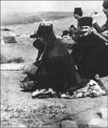
Mustafa Kemal, sonrasında Gazi ve Mareşal unvanları aldığı Sakarya Meydan Muharebesi esnasında cephede, ‘iki mermi arası’ dinlenirken ve kurmaylarıyla savaşın gidişatını takip ederken. Türk ordusu, Sakarya ile doruğa çıkan istiklal mücadelesi savaşlarında 26 bin civarında şehit verirken, kendisinden daha donanımlı ve çok sayıdaki Yunan birliklerini, Mustafa Kemal ve arkadaşlarının akılcı taktikleriyle dize getirmişti.
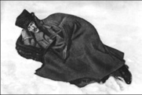
Mustafa Kemal, 28 Mayıs 1919’da halkı yabancı işgaline karşı protesto yapmaya çağırarak, dirayetli bir liderin yapması gerektiği şekilde, halkın içindeki enerjiyi mobile etme yolunda bir adım atmış, ardından da Sevr’in öngördüğü şekilde Doğu vilayetlerinde bir Ermeni hükümetinin kurulmasına ve bazı çevrelerin savunduğu İngiliz manda yönetimine karşı olduğunu beyan etmişti.
Mustafa Kemal, arkasında halk olmayan bir hareketin havanda su dövmek olduğunun farkındaydı. 21 Haziran 1919’da yayınladığı tarihi beyannameyle, ülkenin bağımsızlığını kurtarmak için halkı kendisiyle birlikte çalışmaya davet ediyordu. Temmuz 1919’da 3. Ordu müfettişliğinden istifa ederek İstanbul hükümetiyle tüm görünür bağlarını kesti. Tamamen ittifak devletleri güçlerinin baskı ve kontrolü altındaki İstanbul’un kıpırdayacak hali de yoktu zaten. Mustafa Kemal önderliğindeki hareket, gidişat üzerindeki hâkimiyetini arttırıyordu. 23 Temmuz 1919’da da başkanlığını yaptığı Erzurum Kongresi’nde ülke için yeni bir ufka işaret eden o tarihi kararlar alındı: Millet iradesine dayalı bir meclis kurulacak ve bağımsızlık için mücadele edilecekti. Bunu, benzer içerikli Sivas Kongresi takip edecekti.
Misak-ı Milli: Türk milletinin bağımsızlık ilanı
Mustafa Kemal, kısa bir süre sonra bu her iki kongrenin ruhunu, Ankara’da yeni oluşturulan Meclise sunduğu ve Misak-ı Milli olarak bilinen belgeyle ete kemiğe büründürecekti. Ünlü tarihçi Arnold J. Toynbee’nin de dediği gibi, baskı altındaki bir milletin hak ve taleplerine net bir şekilde yer veren bu belge, aslında Türk milletinin bağımsızlık ilanıydı. Misak-ı Milli’de yer alan esaslar, ilerde kurulacak Türkiye Cumhuriyeti’nin nüfus kâğıdı olacak Lozan Antlaşması’nın da temellerini atıyordu.
Sivas Kongresi’nde seçilen Mustafa Kemal başkanlığındaki heyet, İstanbul hükümetiyle yaptığı görüşmelerde, Vahdettin tarafından feshedilen meclisin yeniden toplanmasını kabul ettirdi. Sonuçta İstanbul halen resmi başkentti ve meclisin İstanbul’da toplanacak olmasının önemi büyüktü. 28 Ocak 1920’de Misak-ı Milli, Toynbee’nin ifadesiyle, ‘Yasal başkentinde ikamet eden, yasal bir parlamento tarafından ve yasal bir şekilde kabul edilmişti.’ Bu bile Mustafa Kemal önderliğindeki hareket için büyük bir başarıydı. İttifak devletlerince tanınmış, tüm dünyaya ‘istediklerimiz olacak yoksa mücadeleye devam’ mesajını vermişlerdi. Ancak bu İstanbul ’da toplanan son meclis oldu. İki ay sonra, padişah’ın sesini çıkarmadan kenardan izlemek zorunda kaldığı bir ortamda İngilizlerin İstanbul’u işgal etmesiyle birlikte, yeni hareket, İstanbul’dan tamamen koptu. Bu durum milli mücadelecileri çok öfkelendirmişti. Halen Saltanata ve İstanbul’a yürekten bağlı olmakla birlikte, sultanın itilaf devletlerine tam bir teslimiyet sergilemesi (ya da sergilemek zorunda bırakılması), yeni hareketin Saltanata bakışında radikal değişiklikler yaratacaktı. Yine Toynbee’nin deyişiyle, “Eğer İzmir’in Yunanlılarca işgali Türk Milli hareketinin doğmasına sebep olduysa, İstanbul’daki Sultanın İngilizlerce desteklenmesi de milli mücadelecileri daha da ateşlemişti.”
‘Ülkenin yolunu biz çizeceğiz’
Ankara’da tekrar toplanan meclis, 23 Nisan 1920’de Türkiye Büyük Millet Meclisi adını alarak yoluna devam etti. Artık ülkenin iki meclisi vardı. Ama herkes, İstanbul’daki, itilaf devletlerinin kontrolünde ve İngiliz sempatizanı Damat Ferit’in güdümündeki meclisin ağırlığının kalmadığını biliyordu. Mustafa Kemal, ‘sultan ve başkent işgal altında kalmaya devam ettiği sürece, şimdi ve gelecekte ülkenin yolunu Ankara’nın çizeceğini’ ilan etti. Ankara’daki meclisin yıldızı giderek parlıyordu.
Ankara’da tüm bunlar olurken, Yunan birlikleri, itilaf devletleri tarafından kendilerine verilen İzmir ve civarındaki bölgeyle yetinmek istemediklerini beyan ederek hâkimiyet alanlarını genişletmeye kalkıştı. Kısa sürede Anadolu’daki asker sayılarını 80 bine çıkarmış, Ankara’daki yeni meclisi gözlerine kestirmişlerdi. Oysa o esnada Türkiye’de eli silah tutan düzenli birliklerin sayısı ancak 40 bin kadardı. Ankara’dakilerin işi bir hayli zordu…
Yunanlılar İnönü duvarına çarpıyor
Türk ordusunun Yunanlılarla ilk teması, Albay İsmet’in komutasındaki birliklere karşı İnönü’de olmuştu. Türk birlikleri kendilerinden daha üstün konumdaki Yunanlıları püskürterek, yeni oluşumun hafife alınmaması gerektiğini gösteriyordu. Albay İsmet, daha sonra bir kez daha aynı yerde aynı düşmanla karşı karşıya gelecek buradaki zaferlerinin uzantısı olarak, soyadı kanununun çıkması sonucu İsmet İnönü olacaktı.
İnönü’deki bu zaferin ardından itilaf devletlerinin saflarında gevşeme oldu. Sevr’in tekrar görüşülüp bir an önce hayata geçirilmesi için Londra’da apar topar bir konferans düzenlediler. Ankara’daki hükümet de konferansa çağrıldı. Bu iyiye işaretti. Ankara’yı bir güç olarak dikkate aldıklarını gösteriyordu. Amaç Londra’da Türkiye’ye, Sevr’in daha az can acıtan bir modelini dayatmaktı, ama işe yaramadı. Bu arada konferansa İstanbul Hükümeti adına katılan Tevfik Paşa, Türkiye’yi temsil etme yetkisinin tamamıyla Ankara Hükümeti’nde olduğunu söyleyerek, Mustafa Kemal ve arkadaşlarının elini güçlendirmiş, dolaylı da olsa İstanbul’un Ankara’daki yeni ruhu desteklediğini göstermişti. Diğer yandan Sovyet Rusya’yla imzalanan Moskova Antlaşması da yeni patronun Ankara olduğunu ilan ediyordu. O andan itibaren de Rusya’daki rejim, milli mücadelenin yanında yer alacaktı. Ankara hükümeti Londra’da sunulan şartları kabul etmedi. Mustafa Kemal restini çekmişti. Savaşa devam edilecekti.
Londra’da rest çeken Türklere karşı itilaf devletleri masaya Yunan birliklerini sürdü. Yunanlılar, Bursa üzerinden Eskişehir’e, Uşak üzerinden Afyon’a doğru harekete geçse de bir kez daha İsmet Paşa’ya toslayacaklardı
Milli mücadelenin direnci, ittifak devletlerinin direncini kırmaya başlamıştı.
Sakarya: Mustafa Kemal silah kuşanıyor…
Avrupa ülkelerinde İngiliz ve Yunan politikalarına karşı bir öfke baş göstermişti. İnönü’deki ilk kapışmanın ardından Yunanlılardan desteklerini çekmeye başlamışlar; Fransızlar Zonguldak’tan, İtalyanlarsa Güney Anadolu’dan çekilmişlerdi. Üstelik bunu yaparlarken, Ankara hükümetine karşı tavırları da değişmiş, çekilme esnasında silah ve cephanelerini milli mücadelecilere bırakmışlardı. Özetle, Mustafa Kemal’in siyasi-askeri liderliğindeki direnişin ‘direnci’, ittifakı çatlatmış, Ankara’daki yeni oluşumla yolun başında işbirliğine gitmenin faydalarını hisseden Fransa ve İtalya, kendilerini bu ‘Şark Meselesi’nden14 çekip çıkarmıştı. Geriye direnci kırılmayan İngilizler ve Dünya Savaşı’ndaki katkısını Anadolu’dan almayı planladığı topraklarla taçlandırmak isteyen Yunanlılar kalmıştı.
Lakin Yunanlıların pes etmeye pek niyeti yoktu. Helen İmparatorluğu rüyası gibi kendilerince büyük bir cephaneleri vardı. Büyük bir taarruza geçip, Eskişehir, Afyon ve Kütahya çizgisini ele geçirdiler. Türk Ordusu, sıcak gelişmeler üzerine siyasetçi şapkasının üzerine tekrar asker şapkasını giyen Mustafa Kemal’in emriyle Sakarya Irmağı’nın doğusuna çekilmek zorunda kalmıştı. Daha sonradan stratejik açıdan akılcı bir hamle olarak değerlendirilen bu emrini, şu sözleriyle açıklayacaktı:
‘Birliklerimizi toplayarak düşmanla kendi aramızda büyük bir mesafe bırakmak gerekmektedir, böylelikle düşmanı hem ana karargâhlarından uzaklaştırmış hem de dağılan ve durumu kötü olan birliklerimize büyük bir zaman kazandırmış oluruz.’
Bu emir öncesinde Mustafa Kemal, mecliste üç gün süren yoğun tartışmaların ardından meclisin orduyla ilgili yetkilerini de üstüne alma isteğinin kabul edilmesiyle, başkomutan seçilmişti. ‘Orduyu daha etkin bir şekilde kumanda edip, gereken kanunları daha hızlı çıkartabilirim’ mantığıyla savunduğu bu isteği antidemokratik bulunup eleştirilse ve ‘tek adam’ olmayı istemekle suçlansa da, istediğini elde etmişti. Ülkenin işgal altında olduğu dönemde bile meclisin, kararlarını tartışarak almış olmasının takdire şayanlığı bir yana, Mustafa Kemal’in ‘tek karar merci’ olması, o kritik süreçte işe yarayacaktı.
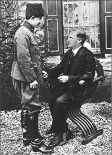
Mustafa Kemal, 4 Haziran 1921’de, İnönü Savaşları’nın ardından Çankaya Köşkü’nde İnönü Savaşlarının kahramanı İsmet Paşa’yla durum değerlendirmesi yapıyor. İkiliden Mustafa Kemal, daha sonra kurulacak olan Türkiye Cumhuriyeti’nin ilk Cumhurbaşkanı, İsmet İnönü ise, 1923-1924 yıllarında hizmet eden ilk hükümetin Başbakanı olacak, Kurtuluş Savaşı’nın bu iki ismi, etkileri halen devam eden bir şekilde ülkenin kaderine damgalarını vuracaklardı.
Mustafa Kemal, bu doğrultuda ordunun ihtiyaçlarının gereksinimlerinin sağlanması için Tekalif-i Milliye Emirleri (Ulusal Yükümlülükler) olarak bilinen düzenlemeyi hayata geçirdi. Buna göre ordunun ihtiyaçları adına ne yapılması gerekiyorsa, yapılacaktı. Bunu sağlamak adına gerekirse güç de kullanılacaktı. Bu gücün, İstiklal Mahkemeleri adıyla kurulan özel mahkemeler eliyle bazı durumlarda ölçüsüz olarak ve muhaliflerin ortadan kaldırılması için kullanılması, Mustafa Kemal’in ilerde diktatör olarak suçlanmasına da kapı aralayacaktı.
14 Ağustos 1921’de Ankara’ya doğru ilerlemeye başlayan Yunan kuvvetlerinin direnci, Mustafa Kemal’in “Hattı müdafaa yoktur, sath-ı müdafaa vardır! Ve bu satıh tüm vatandır.” şeklinde özetlenen ve geri çekilmekte olan birliklerin ilk durabildiği noktada tekrar bir hat oluşturup çatışmaya devam etmesi esasına dayalı yıpratma savaşı karşısında tükenmeye başlamıştı. Bu, Mustafa Kemal’in daha önce sergilediği kurmay zekâsının ürünlerinden biriydi ama sonuncusu olmayacaktı. Lojistik sıkıntısı çeken düşman Ankara’ya 50 km. kala durma noktasına gelmişti ki, Mustafa Kemal’in 10 Eylül 1921’de verdiği karşı saldırı emriyle ibre tersine döndü. Yunan dağılmıştı.
Ulusun ibresi Sakarya’da tersine dönüyor
Clair Price’ın da ‘The Rebirth of Turkey’ (Türkiye’nin yeniden doğuşu) isimli eserinde dediği üzere; ‘İki yüz yıldır Osmanlı İmparatorluğu’nu yıkmakla meşgul olan Batı, Sakarya’da Türklerle karşılaşmış ve tarih bir dönüm noktasına ulaşmış; Sakarya Savaşı, Yakın ve Orta Doğu’nun politik görünüşünü tamamen değiştirmişti.’
Sakarya Savaşı’nın büyük bir sembolik önemi vardı. Bu savaşla birlikte Türklerin 1683’deki İkinci Viyana Kuşatması’ndaki yenilgisinden beri devam eden çekilmesi sona ermiş; Sakarya, Türklerin son savunma savaşı olmuştu. Şimdi saldırı zamanıydı.
Yunan birlikleri, Sakarya’daki hezimetin ardından Eskişehir-Afyonkarahisar hattına çekilmiş toparlanmaya çalışıyordu. Mustafa Kemal ve diğer paşalarsa, düşman toparlanmadan son darbenin vurulması düşüncesindeydi.
26 Ağustos 1922’de, sabah saat 05.30’da topçu ateşi desteğiyle Türk ordusu Kocatepe’den saldırıya geçti. Harekâtı bizzat Mustafa Kemal idare ediyordu. Takip eden dört gün içerisinde Yunan mevzileri parçalanmış ve Dumlupınar hattına çekilen düşman, 29 Ağustosta başlayan saldırının, 30 Ağustosta tam bir meydan savaşına dönmesiyle tamamen imha edilmişti. Mustafa Kemal’in ‘Ordular ilk Hedefiniz Akdeniz’dir. İleri!’ emriyle Yunan güçlerini önüne katan Türk ordusu 9 Eylül 1922’de İzmir’e girerek, Yunanlıların Anadolu macerasına son noktayı koyuyordu.
Yeni bir ülke doğuyor
Klasik tabirle ülke düşmandan temizlenmişti. Buraya kadar geçen zaman diliminde tarihte birçok örneği görülen ‘vatanını savunan lider’ çizgisini takip eden Mustafa Kemal, şimdi yepyeni bir kimlikle ortaya çıkacaktı. O artık bir devrimciydi. Yaşlı ve bitkin imparatorluğun miadının dolduğuna inanan bu idealist ve bir o kadar tutkulu lider, ülkesini, adı, başkenti, rejimi ve hatta istikameti de dâhil olmak üzere baştan aşağı değiştirecekti…
Ankara’da şekillenen yeni irade, ulusa farklı bir rota tayin etmişti. Ulusun tarihini değiştiren bir adım atılarak, 1 Kasım 1922’de saltanat ilga edildi. Böylelikle hem sultan hem de halife olan Osmanlı padişahının unvanlarından biri ortadan kaldırılmıştı. Ankara’da şekillenen hükümet, Halife Abdülmecit Efendi’den, sadece Müslümanların Halifesi unvanını kullanmasını istedi. Ankara’daki yönetim, saltanatı kaldırarak, milli egemenlikten yana tavır aldığını sergilemişti.
29 Ekim 1923’te, saat 20.30’da Ankara’daki Meclis Binası’nda kopan alkış fırtınası, yeni bir ülkenin; Türkiye Cumhuriyeti’nin doğumunu müjdeliyordu. Mustafa Kemal, 600 yıllık saltanat yönetimine dayanan, Sünni Müslümanların hamisi Osmanlı İmparatorluğu’nun yerini alan Türkiye Cumhuriyeti’nin ilk Cumhurbaşkanı olmuştu.
Yeni kurulan Cumhuriyet, kendisine yeni sistem olarak Fransız Devrimi ile ortaya konan insan haklarına dayalı ‘Ulusal ve Laik Devlet’i seçerken, 624 yıllık Osmanlı İmparatorluğu da tarih oluyor ve toprakları üzerinde 64 devlete yer açarak, halefi genç cumhuriyeti selamlıyordu.
Bununla birlikte Mustafa Kemal, yapılmasını elzem gördüğü sosyal ve laik karakterdeki devrimlerin önünde bir engel olarak gördüğü hilafetin de kaldırılmasını istiyordu. Ve 3 Mart 1924 tarihli, ‘Hilafetin ilgasına ve Hanedan-ı Osmaniye’nin Türkiye Cumhuriyeti memalik-i hariciyesine çıkarılmasına dair kanun’ ile hilafet kurumu da tarih oluyordu. Bu adımla yeni Türkiye, kimilerine göre İslam dünyası ile bağlarını koparıyor ve yeni istikametini belirliyordu: Batı.
Atatürk’ü gerçekte kahraman yapan neydi?
Türkiye, 1934’de Atatürk soyadını alacak Mustafa Kemal’in kişisel girişimleriyle inanılmaz bir değişim sürecine girdi. Toynbee’nin ifadesiyle o günün Ankara’sında tam bir Fransız Devrimi atmosferi hâkimdi. Yeni Cumhuriyet, İslam’ın sosyal hayata yansıyan etkilerini sınırlayan düzenlemeler yapmış, Batı tarzı giyimi, hukuku ve idari yapıları getiren yasalar çıkarmıştı. Tek adam görüntüsü vermesine rağmen Atatürk, sivil ve asker ilişkilerine net bir çizgi çekmiş, yasaların hazırlanmasında tüm vatandaşların yasalar karşısında eşit olduğu esasını temel almıştı.
Atatürk, özellikle batılılar tarafından, bu üst yapı devrimlerini güç kullanarak hayata geçirdiği iddiasıyla sıklıkla diktatör olmakla suçlansa da, herkesin pes etmeye yaklaştığı bir anda risk ve öncelik alarak ulusunun onurunu korumuş; karizması, örgütçülüğü, askeri dehası ve stratejik düşünme yeteneğiyle, bugün bölgesinin en güçlü ülkesi olan, demokrat, laik ve modern Türkiye’nin tarih sahnesine çıkmasında başrol oynamıştı.
Ölümünün ardından farklı siyasi hesaplarla icat edilen Atatürkçülük ya da Kemalizm ideolojisinin yarattığı ve halen devam eden sıkıntılar bir kenara bırakılırsa, ABD eski başkanlarından Bill Clinton’ın “Osmanlı’nın dağılması ve Türkiye’nin yükselmesiyle bu yüzyılın tarihi şekillendi. Yıkıntılardan yeni milletler doğdu. Yirminci Yüzyılı anlamak için Türkiye’nin tarihi bir anahtardır. Türkiye’nin geleceği, önümüzdeki bin yılın ilk yüzyılının şekillenmesinde de önemli rol oynayacaktır.” şeklindeki sözleriyle gayet isabetle teşhis ettiği gibi, Mustafa Kemal ve arkadaşları, gerçek anlamda tarihi değiştirmişlerdi.
Peki, Mustafa Kemal uzun yıllar dikte edilmeye çalışıldığı gibi hatalardan muaf, yarı tanrı statüsünde, şaşmaz bir lider miydi? Hayır, değildi. Her fani gibi hataları olmuştu. Hem de oldukça ciddi hataları... Peki, Türk Kurtuluş Savaşı, sıklıkla dile getirildiği gibi, yedi düvele karşı mı verilmişti? Hayır. Mustafa Kemal’in başını çektiği hareket, tükenme noktasındaki bir imparatorluğun bağrında sakladığı son ümitleri kendisine cephane yapmış, yeri geldiğinde politik arenada direnmiş, ulusun haklarını elden geldiği kadar savunmuş, geri adım atmamış, ülkeyi işgal eden güçleri bazen siyaset bazen de güç kullanarak birer birer devre dışı bırakmış ve geride kalan son gücüyle de Yunanlıları Anadolu’dan atarak, milli mücadeleyi, eskisinden küçük, ama daha dinamik ve geleceğe ümitle bakan bir ülkeyle taçlandırmıştı. Mustafa Kemal’i kahraman yapan da, kendi adı etrafında çoğu kez siyasi ve ekonomik kazanımlar adına estirilen mitolojik rüzgârlar değil, bu harekete yüreğini koymuş olmasıydı.
NOTLAR
- Beş kardeşinden dördü küçük yaşlarda öldü, sadece Makbule (Atadan) 1956’ya kadar yaşadı.
- Selanik’in, Yunanlıların eline geçmesinin ardından Annesi Zübeyde Hanım, kızı Makbule ile İstanbul’a gelmiş, ardından da Ankara’ya geçmişti.
- Matematikte iddialıydı. Fransızcası çok iyiydi. Fransızca kaynaklardan yararlanarak 44 sayfalık bir geometri kitabı yazmış, kitap 1937’de yayınlanmıştı.
- Wanderbit Üniversitesi profesörlerinden Doktor Kirk Landin, bulduğu yeni çiçek türüne Atatürk Çiçeği (Euphorbia Pulcherrima) adını vermişti. Çiçek halen aynı isimle üretilip satılıyor.
- Atatürk soyadını kendisi seçmesine rağmen, kendisine ‘Ata’ şeklinde hitap edilmesinden hoşlanmazdı.
- Askeri okuldan kalma damak tadının sonucu kuru fasulye ve pilav favori yemeği olarak kaldı. Tatlı olarak gül reçeli severdi.
- Türk dili ve tarihi üzerinde daha uzun boylu çalışmalar yapmak için bir dünya turuna çıkmayı çok arzu etmişti.
- Reşat Nuri Güntekin’in Çalıkuşu isimli eserini, özellikle milli mücadele döneminde yanından ayırmadı.
- Hayvanlara düşkündü. At ve köpekleri severdi, ‘Fox’ adında bir köpeği ve Çankaya köşkünde de güvercinliği vardı.
- Takım elbiselerini kendisi tasarlardı. Bugün siyasi çevrelerde baskın olarak kullanılan lacivert rengi sevmezdi. Sürekli beyaz gömlek giyerdi.
- Kahvaltı yapmayı sevmezdi. Sabahları kalktığında kahve ve sigara içerdi.
- Birçok savaşa katılmış olmasına rağmen kan görmekten rahatsız olurdu. Kendisi şerefine kurban kesilirken, kafasını çevirir, bakmamaya çalışırdı.
- Sporu severdi. At biner, yüzerdi. Bilardo da oynardı. Arkadaşlarıyla poker oynamayı sevdiği de bilinirdi.
Japon donanmasının beyni, Pearl Harbor’ın fikir babası
AMİRAL ISOROKU YAMAMOTO
(1884-1943)
“Gerçek bir asker uyuyan bir düşmanı
öldürmekten gurur duymaz.
Bu olsa olsa ölen için bir utanç meselesidir.”
Yamamoto
“Sadece bir Yamamoto var ve hiç kimse onun yerini dolduramaz.” diyordu Amiral Koga Mineichi, 1943’de, Japonların efsane amirali Isoroku Yamamotu’nun yerine atandığında. Düşmanları da öyle düşünüyor olmalıydı ki, belki de dünya savaş tarihinde ilk kez, bir düşman komutanı ortadan kaldırmak için özel operasyon yapılmış, Yamamotu’yu taşıyan uçak Amerikalılar tarafından Pasifik üzerinde düşürülmüştü. Peki, Yamamoto’yu bu kadar özel kılan neydi? Bu soruya verilecek cevap gayet basit. O, II. Dünya Savaşı’nın amansız aktörlerinden Japon donanmasının beyni, ama daha da ötesi, Amerika’nın savaşa girmesine yol açan Pearl Harbor baskınının mimarıydı!
Hokkaido adasındaki Kushigun Sonshomura köyünde yaşayan samuray Takano Teikichi’nin altıncı oğlu olarak dünyaya geldiğinde babası ona Isoroku Sadayoshi ismini verecekti. Yamamoto soyadını ise, o dönemin Japonya’sında yaygın bir gelenek olan; erkek varisi olmayan soylu ailelerin erkek çocuk evlat edinmesi uygulaması olarak evlat edinildiği Yamamoto ailesinden almıştı.
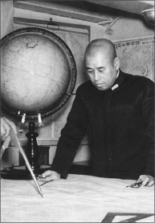
Amiral Yamamoto, Japonya’nın yetiştirdiği en parlak beyinlerden biriydi. Uzun yıllar Amerika’da eğitim görmüş, diplomatik görevler almıştı. Amerika’yı yakından tanıyan Yamamoto, Amerikalıların, 11 Eylül saldırılarından önce başlarına gelmiş en büyük felaket olarak gördükleri ve hiçbir zaman unutamayacakları Pearl Harbor baskınının da mimarı olmuştu.
Yamamoto, 1896’da girdiği Hiroşima Askeri Deniz Akademisi’nden 1904’te mezun oldu. Japonya’nın Rusya ile savaşta olduğu 1905 yılında Rus Baltık Donanması’na karşı verilen Tsushima Savaşı’nda, Nisshin kruvazöründe nişancılık yapmış, bir çarpışmada yaralanmıştı da. Savaşın ardından birçok farklı gemiyle Pasifik’i gezdi.
1913’de ülkenin saygın askeri eğitim kurumlarından Tsukiji Askeri Deniz Akademisi’ne girdiğinde, kurmay olacağının işaretlerini vermişti. Mezun olduğu 1919 yılında İkinci Savaş Filosu’na katıldı. Yamamoto ailesi tarafından evlatlık edinilmesi de bu döneme rastlar. İlginçtir, Yamamoto, ilerde çok başını ağrıtacağı Amerika’nın prestijli üniversitesi Harvard’da 1919-21 yılları arasında eğitim görmüş, 1926-28 yılları arasında da Japonya’nın Washington’daki deniz ateşeliğini yapmıştı. Amerika’daki bu deneyimleri, Yamamoto’da bir Amerikan sempatisi yaratmasa da, bu ülkenin kapasitesini gerçekçi bir şekilde değerlendirmesine yarayacak doneler sağlamıştı.
Amerika’dan dönüşünde Akagi uçak gemisinin komutanlığına getirildi. O dönemde dünyada uçak gemisi olan iki güç vardı zaten; Amerika ve Japonya. 1934-35 yıllarında Londra’daki Denizcilik Konferansı’nda Japon delegasyonuna başkanlık yapan Yamamoto, I. Dünya Savaşı’nın ardından yürürlüğe giren ve denizlerdeki silahlanma yarışını önlemeyi amaçlayan 1922 tarihli Washington Denizcilik Antlaşması’nı hiç sindirememişti. Bir ada ülkesi olan Japonya’nın denizlerde önünün açılmasını istiyordu. Söz konusu antlaşma 1930’da elden geçirilmiş, zaten Japonya da 1934’de antlaşmadan çekilmişti.
Aralık 1936’da Japon Donanması’ndan sorumlu bakan yardımcılığına getirilen Yamamoto, genel eğilimin aksine yeni savaş gemilerinin üretilmesine karşı çıkarak, uçak gemisi merkezli bir yapılanmaya gidilmesi için gayret gösterdi. Uçak gemilerinin Japonya’nın geleceği açısından daha önemli olduğuna inanıyordu.
Amerika’dan Japonya’ya uyarı: ‘Uzak durun!’
II. Dünya Savaşı’nın patlak vermesini kendileri için altın bir fırsat olarak gören Japonya’daki sertlik yanlıları (ki çoğunlukla ordudaydılar ve imparatoru etkileri altına almışlardı), hemen Almanya ve İtalya ile Üçlü Anlaşma imzalamakta gecikmedi. Artık Mihver Devletleri’nden olan Japonya, vakit geçirmeden Fransa’nın Uzakdoğu’daki sömürgelerinden oluşan Tonkin, Annam, Kamboçya ve Laos’u (Fransız Hindiçini) işgal etti. Bu gelişme üzerine Amerika, Japonya’ya yönelik petrol ve çelik ihracatına son verdi. Çin ile savaşmakta olan Japonya’nın bu madenlere, özellikle de petrole, hava su gibi ihtiyacı vardı. Bunun üzerine gözlerini Hollanda’nın Endonezya ve civarındaki petrol açısından zengin doğu kolonilerine (Hollanda Doğu Hindi) çevirdi. Madem müttefikleri Almanya Hollanda’yı işgal etmişti, bu durumda Hollanda onların da ‘düşmanı’ oluyordu. O halde düşmana ait bu topraklar işgal edilebilirdi. Japonların bu niyetinden rahatsız olan Amerika, bu bölgelere ilişmesi durumunda Japonya’ya savaş açılacağı uyarısında bulundu. Zaten Tokyo’daki savaş yanlıları da bahane arıyordu. Karar verildi. Amerika’ya saldıracaklardı.
‘İlk altı ay tüm gücümle savaşırım…’
Yamamoto, daha başından itibaren Japonya’nın bu maceracı dış politikasına karşıydı. Almanya ile ittifaka karşı çıkmış, Japon uçakları Aralık 1939’da Yangtze nehrinde seyreden Amerikan hücumbotlarına saldırınca Amerikan Büyükelçisi’nden bizzat özür dilemişti. Yamamoto, bu tavırlarıyla ülkedeki sertlik yanlılarının hedefi haline geldi. Ölüm tehditleri alıyordu. Bununla birlikte ülkesi açısından vazgeçilmez bir beyindi. 30 Ağustos 1939’da donanmanın başına getirildi.
Yamamoto, savaş tamtamlarına kulaklarını tıkamış, olası bir savaşın engellenmesi için lobi yapıyordu. Öyle ki Japonya, Eylül 1940’ta Almanya ve İtalya ile Üçlü Anlaşma’yı imzalayınca Başbakan (aynı zamanda Japonya Prensi) Konoe Fumimaro’yu Amerika ile savaşmaması konusunda şu sözleriyle uyaracaktı:
“Eğer bana savaşmam söylenirse altı ay boyunca tüö gücümle savaşırım ancak ikinci veya üçüncü yıl ne olacağına dair güvence veremem. Üçlü Anlaşma konusunda bir şeyler yapmak için çok geç ama umarım Amerika ile savaşılmaması için gereken gayreti gösterirsiniz.’
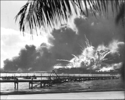
Yamamoto’nun Pearl Harbor baskını için yola çıkardığı filoda, Akagi, Hiryu, Kaga, Shokaku, Soryu, ve Zuikaku isimli uçak gemilerinin yanı sıra, iki hızlı savaş gemisi, iki ağır kruvazör, bir hafif kruvazör, dokuz destroyer ve üç denizaltı bulunuyordu. Uçak gemilerinde 423 adet Mitsubishi Zero avcı uçağı, Nakajima 97 torpido bombardıman uçağı ve Aichi 99 pike bombardıman uçağı vardı. Aynı zamanda yakıt ikmali için sekiz tanker filoya eşlik ediyordu. Bunun yanı sıra istihbarat toplamak ve saldırı sırasında kaçabilecek Amerikan gemilerini batırması için yirmi denizaltı ve beş cep denizaltısından oluşan ileri sefer gücü de bölgeye yollanmıştı.
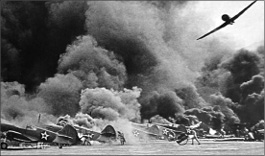
Ama Japonya’daki savaş yanlılarının gözü hiçbir şey görmüyordu. Prensi devirerek yerine General Tojo Hideki’yi getirdiklerinde, Amerika’yla savaşmalarının önünde engel kalmamıştı.
Yamamoto ne Amerikan yandaşı ne de karşıtıydı. O sadece Japonya’dan yanaydı. Amerika’ya savaş açılmasına karar verilince de tüm birikimini ülkesinin hizmetine adayacaktı.
Yamamoto: Amerika’yı kalbinden vuralım!
Japon Genel Kurmayı, Pasifik’teki Japon adalarının vur kaç taktiği açısından uygun olduğunu, Amerikan donanmasının bu adalardan yapılacak gerilla tipi saldırılarla saf dışı bırakılacağına inanıyordu. İyi bir denizci ve aynı zamanda başta uçak gemileri olmak üzere savaş gemileri konusunda uzman olan Yamamoto ise, Pasifik’te Amerika ile savaşılacaksa, ilk vuranın kendilerinin olması gerektiğini söylüyor, Amerikan donanmasının açık denizde yenilemeyecek kadar büyük olduğu fikrini savunuyordu. Ona göre Japonlar, ilk vuran taraf olmalı, bunu da, Amerikan donanmasının kalbi sayılan Pearl Harbor’da yapmalıydı!
Yamamoto, Japon Genel Kurmayı’nı baskına ikna edince, 26 Kasım 1941’de Oramiral Chuichi Nagumo komutasındaki filoyu, tarihin en önemli çarpışmalarından birini gerçekleştirmesi için Pearl Harbor’daki Amerikan donanmasının üzerine gönderdi. 7 Aralık sabahı sürpriz saldırıya başlayan Japon uçak ve denizaltıları, bir buçuk saat sonra işlerini bitirdiklerinde, 2 bin 403 Amerikalı ölmüş, bin 178’i yaralanmış ve 18 savaş gemisiyle 6 uçak gemisi batmıştı. Yamamoto’nun mimarlığını yaptığı bu baskınla, Amerika savaşa girecek ve II. Dünya Savaşı’nın kaderiyle birlikte Japonya’nınki de değişecekti.
Pearl Harbor’ın ardından 27-28 Şubat 1942’de gerçekleşen Java Denizi Savaşı’nda da Yamamoto Japon donanmasının başındaydı. Kilit öneme sahip hava gücü olmaksızın tamamen kruvazörlerle savaşan Japonlar, Alman, İngiliz ve Amerikan güçlerinden oluşan birleşik donanmayı yenerek, Java’yı ele geçirmişti. Burada da belirleyici unsur Yamamoto’nun taktikleriydi.
Yamamoto, Pearl Harbor’da tamamen saf dışı edemediği Amerikan Pasifik Filosu’nu, belirleyici bir savaşta yenmek için ihtiraslı bir plan üzerinde yoğunlaştı. Stratejik hedef olarak Midway mercan adalarını seçti. Burayı ele geçirebilirse, Amerikan uçak gemilerini buradan çıkartabilirdi. Bu belirleyici savaşı kazanamazlarsa, yenilginin sadece an meselesi olduğuna inanıyordu.
Amiralimiz planını 8 uçak gemisi ve 250 savaş gemisinden oluşan bir deniz gücüne göre kurdu. Bir dizi hileli taktikle Amerikalıları tuzağa düşürmeyi hedefliyordu. Ama göz ardı ettiği bir şey vardı. Pearl Harbor’da derslerini alan Amerikalılar, Yamamoto’yu göz hapsine almış, Japon ordusunun iletişim şifrelerini çözmüşlerdi. Operasyon öncesinde düşmanın tüm hazırlıklarından haberdardılar. Bununla birlikte Japonlar koordinasyon güçlüğü çekiyordu. Yeteri kadar hazırlanamamışlardı.
İlk kez bir komutan özellikle hedef alınıyor
4-6 Haziran 1942’de gerçekleşen ve hava güçlerinin belirleyici olduğu Midway Savaşı, Japonlar açısından tam bir felaketle sonuçlandı. Japonlar, 4 savaş gemisi ve 3 bin 500 askerlerini kaybederken, Amerikalıların kaybı 300’de kalmıştı. Her ne kadar Midway hezimetinin ardından görevinde kalmış olsa da Yamamoto, bir daha kendisini toparlayamadı. Bununla birlikte savaşın bir başka aşamasında Guadalcanal çarpışmaları esnasında Solomon Harekâtını yönetmiş, buna karşın Amerikan güçlerini Solomon adalarından çıkaramayacağını anlayınca, geri çekilme emri vermişti. Yamamoto’nun bu geri çekilme manevrası, taktik açıdan bir şaheser olarak kabul edilir.
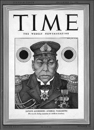
22 Aralık 1941 tarihli Time dergisine kapak olan Yamamoto.
Kahramanımız tüm bunlara rağmen görevinin başındaydı ve Pasifik’te Amerikalılarla savaşma azminden bir şey kaybetmemişti. Bougainville adasındaki Japon birliklerini denetlemek üzere uçağı ile havalandığında, bilmediği bir şey vardı. Bir süre önce Amerikalılar, tıpkı Midway’de olduğu gibi, iletişim şifrelerini çözmüş ve Yamamoto’nun ziyaretinden haberdar olmuşlardı. Yamamoto’ya Pearl Harbor’dan dolayı besledikleri kin, İntikam Operasyonu’yla (Operation Vengeance) sonuçlanacaktı. Guadalcanal’daki Henderson üssünden havalanan on sekiz Amerikan P-38 savaş uçağı, Yamamoto’yu taşıyan Mitsubishi GM4 ‘Betty’ model uçağı ve yanındaki koruma uçaklarını 18 Nisan 1943’te Bougainville açıklarında düşürdü. Amerikan donanmasının korkulu rüyası, Pearl Harbor’ın babası ve Japon donanmasının beyni Yamamoto, ölmüştü.
Japon Genel Kurmayı, devam etmekte olan savaşta moral kaybına neden olmaması amacıyla bu kudretli amiralinin ölümünü bir ay sonra açıkladı. Cesedinden arta kalanlar yakıldı ve külleri, görev yaptığı son gemi Musashi ile Japonya’ya getirildi.
NOTLAR
- Doğduğunda babası 56 yaşındaydı. Bundan gururlanan babası, kendisine Japoncada 56 manasına gelen Isoroku (I (5), so (10) roku (6)) ismini verdi.
- 1905’de katıldığı bir çarpışmada, sol elinin iki parmağını kaybetmişti.
- ‘First Air Fleet’ modeli donanma, (Merkezde bir uçak gemisi ve çevresinde onu koruyan savaş gemileri) Yamamoto’nun tasarımıydı. Bu model, halen Amerikalılar tarafından kullanılmakta.
- Savaş tarihine düşmanın özel olarak hedef aldığı ilk asker olarak geçti.
- ‘Tora! Tora! Tora!’ (1970) ve ‘Pearl Harbor’ (2001) isimli filmlerde Yamamoto, Pearl Harbor saldırısının ardından “Korkarım uyuyan bir devi uyandırdık.” cümlesini sarf ederken gösterilir. Gerçekte bunu dediğine dair bir delil yoktur.
- Nazi Almanya’sının en yüksek askeri nişanı olan Meşe Yapraklı Şövalye Haçı’na layık görülen tek yabancı asker oldu.
Tanklara aşıktı, her iki dünya savaşında da tanklarla Amerika’yı zafere taşıdı
GENERAL PATTON
(1885-1945)
“Tanrı düşmanlarıma acısın.
Çünkü ben acımayacağım.”
General Patton
İlginç, ama gerçekten ilginç biriydi. Hayatta hiçbir şeyin savaşmaktan daha heyecan verici, güzel ve zevkli olmadığını söyleyecek kadar üstelik. Bu kafa yapısındaki birinin de tarihin en başarılı askerlerinden biri olması, şaşırtıcı olmamalıydı. Gözü pekliği, cephelerde askerlerine hitap ederken yaptığı küfürlü konuşmaları ve Afrika’dan Fransa’ya kadar onlarca cephede yaptığı savaşlarla donattığı kariyeriyle General Patton, Amerika’nın II. Dünya Savaşı’ndan muzaffer çıkmasını sağlayan en önemli isimlerden biri olmuştu.
Fildişi kaplama tabancası ve mükemmeliyetçiliği ile dillere destan olan George Smith Patton, 11 Kasım 1885’te California’da doğdu. Çocukluğundaki en büyük hayali, bir şekilde kahraman olmaktı. Ona göre bunun yolu da askerlikten geçiyordu. Ailece askerliğe uzak değillerdi. Ailenin önde gelen isimleri İngilizlere karşı verilen bağımsızlık savaşında, Meksika ile yapılan savaşta ve Amerikan İç Savaşı’nda yer almıştı. Onların hikâyelerini dinleyerek büyüyen Patton için askerlik, kaçınılmaz bir akıbet gibi görünüyordu.
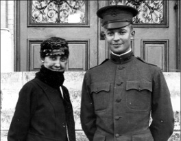
Patton, kariyerinin başlarında, I. Dünya Savaşı günlerinde, Fransa’daki tank taburundaki görevi esnasında.
Genç Patton, atletikliği ve girişkenliğiyle her zaman hayalini kurduğu üniforma için oldukça ideal bir profil çiziyordu. Virginia askeri akademisinde bir yıl okuduktan sonra Amerika’nın ünlü askeri akademisi West Point’e girdi. İlginçtir, başlangıçta sınavlarda aldığı düşük notlarla kendisini kapının önünde bulmasına rağmen, yılmamış, aynı okula tekrar girmişti. 1909’da mezun olduğunda, teğmen rütbesi ile 15. süvari bölüğüne atandı. Patton’un sporculuğu lafta değildi. Bunu Amerika adına katıldığı 1912 Stockholm Olimpiyat Oyunları’nda modern pentatlon dalında sergilediği performansla gösterecekti. 26 yaşındaki Patton, 25 metre atıcılık, eskrim, 300 metre serbest stil yüzme, 800 metre at binme ve 4 km koşudan oluşan bu dalda, beşinci olmuştu.
Olimpiyatların ardından binicilik ve Fransız stili eskrim dallarında kendini eğitmeye devam etti. Bir süre bulunduğu Kansas Süvari Okulu’nda kendi geliştirdiği kılıç stilleri üzerine dersler de veren Patton’ın askerliğin gerçek yüzüyle tanışması için, Meksika’da Sancho Pancho olarak tanınan devrimci lider Francisco Pancho Villa’nın harekete geçmesi gerekecekti. Meksika karışınca Amerikalılara Meksika yolu görünmüş, Patton, bir başka ünlü Amerikalı asker General Pershing’in emrinde Pancho Villa’nın adamlarına karşı gerçekleştirdiği operasyonlarla Amerikan basının dikkatlerini üzerine çekmişti.
Patton, Meksika deneyimiyle savaşın tadını almıştı ama karnını doyurması için, dünya savaşının çıkmasını bekleyecekti. Ve nihayet kahraman olmayı beklediği gün gelip çattı. Dünya, ilk büyük savaşa doğru ilerliyordu. Askerinin performansından memnun kalan Pershing, her ne kadar I. Dünya Şavaşında tanklar daha yeni yeni kullanılmaya başlasa da, 1917’de Patton’u, yeni kurulmuş 304. Tank Tugayı’nın başına getirdi. Bu arada yüzbaşılığa terfi eden Patton, İngiliz tankçılarla birlikte, ilk büyük tank savaşının yaşandığı Cambrai’de büyük bir zafer kazandı.
Tanklar hakkındaki bilgisini kullanarak, Fransa Bourg’da Amerikan Tank Okulu’nun kurulmasına ön ayak olan Patton, ilk beş yüz Amerikan tankçısının eğitilmesinde büyük rol oynamıştı.
1918 yılı Eylül ayında Meuse-Argonne Operasyonu çerçevesinde komutayı ele alan Patton’ın emrinde 345 tank vardı.
Çatışma başladığında ön ve arka saflardaki tanklar arasındaki koordinasyonu düzenlemek için aklına parlak bir fikir gelmişti. Güvercinler ve hızlı koşan bir grup asker! Operasyon esnasında sürekli ön safta olan Patton, tanklar arasında koştururken ayağından ciddi şekilde yaralanmasına rağmen, kendisi ile özleşecek küfürleri ve hep ileriyi işaret eden emirleriyle askerlerine komuta etmeyi sürdürecekti. Bu tavrı kendisine DSC (Distinguished Service Cross-Üstün Hizmet Ödülü) ve DSM (Distinguished Service Medal-Üstün Hizmet Madalyası) kazandıracaktı. Bunlar henüz başlangıçtı.
Tankların etkin bir savaş silahı olduğunu gören Patton, savaşın ardından bu demirden savaş atlarının avukatlığına soyundu. Modern savaşın olmazsa olmazı gördüğü tankları her fırsata savunmasına rağmen, Kongre, zırhlı savaş gücünü finanse etmenin faturası karşısında isteksiz görünüyordu. Buna rağmen işin peşini bırakmayan Patton, kendini adeta tanklara adadı. Tanklar arası telsiz iletişiminin geliştirilmesine kafa yorup, birçok deney yapmakla birlikte, tanklarda kullanılmaya başlanan yarım çaplı top ve makineli tüfek kundaklarının geliştirilmesinde de rol oynadı.
I. Dünya Savaşı’nın ve Washington ve Hawaii’deki birtakım görevlerinin ardından 1932’de saygın Army War College’den (Amerikan Harp Akademisi) yüksek dereceyle mezun olan Patton artık bir kurmaydı. Üstelik okul öncesi bizzat savaşlara katılmış bir kurmay adayı olmasıyla da ilginç bir profil çizmişti.
Almanlar saldırıyor, Patton’ın tankları hatırlanıyor
II. Dünya Savaşı’nın kara bulutları uzun zamandır ufku kaplamıştı. Almanların Avrupa’daki yıldırım harekâtı (Blitzkrieg) başladığında, Patton’ın, Kongre’yi, Amerika’nın daha fazla zırhlı saldırı gücüne ihtiyaç duyduğuna ikna etmesi, zor olamayacaktı. 1940’ta istediği gücün kurulması ile Patton, Georgia Fort Benning’deki İkinci Zırhlı Tümene atanmış, Nisan 1941’de de tümen komutanı olmuştu. Aradan iki ay geçmemişti ki, Patton, Amerika gibi bir ülkede, Life gibi bir derginin kapağını süslüyordu. Bu esnada, birlik içersinde yaptırdığı amfi tiyatroda ileride en meşhuru ‘Kan ve Cesaret’ başlığıyla hatırlanacak olan bol küfürlü motivasyon konuşmalarını yapmaya başlamıştı.
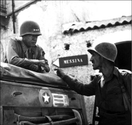
Patton, tam bir tank delisiydi. Kariyerinin ilk günlerinden itibaren, tankların cephelerdeki en büyük kozlardan biri olacağı öngörüsünde bulunmuş, Amerika’nın tanklara yatırım yapması için lobi faaliyetleri yürütmüştü. Zaman kendisini haklı çıkartacaktı. Halen Amerikan ordusunda kendi adına ithaf edilmiş tanklar (M60 Patton) kullanılan Amerikalı komutan, Sicilya çıkarması sırasında ordu fotoğrafçısının objektifine bu şekilde yakalanmıştı.
Japonların Pearl Harbor’a saldırarak uyuyan devi uyandırmasıyla birlikte Amerika, bir süredir dışarıdan izlediği II. Dünya Savaşı’na 1941 Aralığında resmen giriyordu. Takvim yaprakları 8 Kasım 1942’yi gösterdiğinde Patton, Kuzey Afrika’da devam etmekte olan Meşale Operasyonu (Operation Torch) çerçevesinde görev yapan Amerikalı komutanlardan biriydi.
Winston Churchill ve Franklin D. Roosevelt, Ocak 1943’teki Casablanca Konferansı’nda Sicilya’yı işgal etmeye karar vermişlerdi. Eğer ada ele geçirilirse, İtalya’nın savaştan çekilebileceğini umuyorlardı. Aynı zamanda başarılı bir işgalin, Adolf Hitler’i, Doğu Cephesi’ndeki askerlerini çekmeye zorlayacağını hesaplıyorlardı. Böylelikle Almanların Sovyet Rus topraklarında Kızıl Ordu üzerindeki baskısı azalmış olacak, Kızıl Ordu da Almanların doğudan sıkıştırılmasında rol oynayabilecekti.
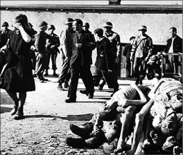
Emrindeki 3. Ordu ile Nazilerin büyük insanlık suçlarına imza attığı Buchenwald Toplama Kampı’ndaki esirleri özgürlüğe kavuşturduğunda gördüğü manzaradan tüyleri diken diken olan Patton, olan bitenden haberleri olmayan sivil Almanları sokaklardan toplayarak, kamplarda dolaştırmış, Nazi rejiminin yaptıklarını ilk elden görmelerini istemişti. Daha sonra bu yöntem tüm Almanya’da uygulandı.
Afrika çöllerindeki barut kokulu günlerin ardından Patton’a 1943’de Sicilya yolları göründü. Afrika’da Hitler’in askerleriyle boğaz boğaza gelen Amerikalının karşısında bu kez Mussolini’nin askerleri vardı.
Sicilya çıkartması General Dwight D. Eisenhower’ın kumandası altında gerçekleşiyordu. Patton’a 7. Ordu’nun kumandası verilmişti. Direnişle karşılaşmadan Sicilya kıyılarına çıkan Patton ve askerleri, hızlı bir şekilde Gela, Licata ve Vittoria’yı ele geçirdi. Patton adanın batısına, diğer bir Amerikalı General Omar Bradley ise kuzeyine doğru ilerliyordu. Almanlar Simeto nehrinin gerisine çekilmek zorunda kaldı. Patton, 22 Temmuz’da Palermo’yu ele geçirerek, adanın batısındaki 50 bin kişilik İtalyan ordusunu saf dışı bıraktı. Patton ve Bradley Sicilya’da Almanlara ve İtalyanlara büyük bir darbe vursa da, Messina Boğazı’ndan İtalyan anakarasına geçmelerine engel olamamışlardı. 40 bin Alman ve 60 bin İtalyan askeriyle, 47 tank ve 10 bin zırhlı araç müttefiklerin elinden kurtulmayı başarmıştı.
“Esir almayın… Oyun oynayacak vaktimiz yok”
Bu esnada çarpışmalar sırasında 73 İtalyan esiri, 45. Bölük askerleri tarafından öldürülmüştü. General Bradley, kasıtlı adam öldürmekten dolayı olayda sorumluluğu olan askerlerin mahkemeye çıkarılmasını emretti. Askerlerse yaptıkları savunmada “Biz sadece General Patton’un 27 Haziran’da yaptığı konuşmada verdiği emirleri uyguladık.” demiş, hatta bazıları, Patton’un, esir alınmayacağını söylediğine dair kanıt sunabileceğini de iddia etmişti. Bu iddialara göre Patton, “Daha fazla esir, beslenecek daha fazla boğaz demektir. Oyun oynayacak vaktimiz yok.” demişti.
Bradley, Amerikan Ordusu’nun en başarılı komutanlarından Patton’u korumak için İtalyan askerlerinin öldürülmesi ile ilgili soruşturmanın düşürülmesine karar verecekti. Patton’un daha sonra sergileyeceği bazı tutumlar, İtalyan askerler vakasındaki iddiaları destekler nitelikteydi.
Söz gelimi 3 Ağustos 1943’te 15. Tahliye Hastanesi’ni ziyaret ettiğinde şarapnel patlaması sonucu şok geçirmiş olan Charles H. Kuhl isimli bir askerle karşılaşmıştı. Askere, neden orda olduğunu sormuş, “Sanırım artık savaşamayacağım.” şeklindeki cevabına karşılık olarak eldiveniyle askerin yüzüne vurmuş, tişörtünün yakasından tutarak ayağa kaldırmış ve kıçına attığı tekmeyle çadırdan kovmuştu. Hastanedeki bu olaydan hemen sonra 7. Ordu’daki tüm subaylara bir nota gönderen Patton, şöyle diyordu: “Çok az sayıda askerin, sinir bozukluğundan dolayı savaşma yeteneklerini kaybettikleri bahanesiyle hastaneye gittikleri dikkatimi çekti. Bu adamlar ödlek. Ordunun itibarını zayıflatıyor, arkadaşlarını rezil ediyorlar! Kendileri hastaneyi savaştan kaçmak için kullanırken, arkadaşlarını ise zalim bir savaşın tehlikeleriyle yüz yüze bırakıyorlar. Bu tür kişilerin hastaneye gönderilmemesi ve sorunlarının birlikleri içinde halledilmesi için tedbir alın. Savaşmaya isteksiz olanlar, askeri mahkemede korkaklık ve cepheden kaçmak suçuyla yargılanacaktır.”
Mükemmeliyetçiliği ile cephede terör estirmeye başlayan Patton, bu notaya karşı tedbiri elden bırakmamış ve tekrar askeri hastaneleri teftişe çıkmıştı. Yine bu ziyaretlerden birinde 93. Tahliye Hastanesi’nde Arazi Topçu Tugayı’ndan topçu er Paul G. Bennett’e rastladı. Askere sorununun ne olduğunu sordu. Bennett, “Sinirlerim… Artık daha fazla top sesine dayanamıyorum.” deyince, zaten öfkesi burnunda olan Patton adeta sinirden patladı: “Sinirlerin ha! Cehenneme git, sen sadece Allahın cezası bir korkaksın, sen sadece bir sürtüğün alçak oğlusun. Kes şu Allahın cezası ağlamayı. Savaşta vurularak buraya gelmiş yanındaki bu cesur adamların, burada alçak birinin ağladığını görmelerini istemiyorum. Sen ordunun yüz karasısın ve her ne kadar bu aslında senin için bir ödül olsa da savaşmak için cepheye geri döneceksin! Seni aslında şuracıkta kurşuna dizmeli. Ya da benim seni vurmam lazım. Allah cezanı versin!”
Patton, bu küfür yağmurunun ardından silahını kılıfından çıkarıp Bennett’i tartaklamaya başlayınca, hastane kumandanı Albay Donald E. Currier, araya girmek zorunda kalmıştı.
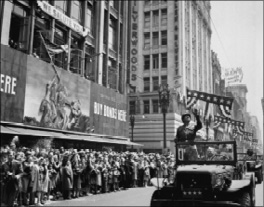
9 Haziran 1945’te Amerika’ya döndüğünde tam bir kahraman gibi karşılanan Patton, yakasında on ikisi Amerikan Ordusu’nun en yüksek madalyası, on biri de Alman işgalinden kurtarılmış ülkeler tarafından verilmiş yirmi üç nişan taşıyordu.
Askerin doktoru Albay Richard T. Arnest, General Dwight D. Eisenhower’a olayla ilgili bir rapor gönderdi. Her ne kadar Patton, vazifeli bir askere vurmaktan dolayı askeri mahkemelik olabileceği bir olaya bulaşmış olsa da, Amerika’daki gazeteciler bu olayı yayınlamama kararı aldı. Colliers Weekly dergisinden Quentin Reynolds da Amerika’nın bu mucize askerinin vukuatına gözlerini kapatan gazetecilerdendi. Ancak “Sicilya’da bir fırsatını bulduğunda Patton’u vuracak 50 bin Amerikan askeri var.” demeyi ihmal etmemişti.
Eisenhower’ın bu vakayla ilgili olarak subaylarından birine söylediği şu sözler, Patton’un Amerika açısından önemine işaret ediyordu: “Eğer bu olay ortaya çıksaydı, Patton’un kafa derisi için ulumaya başlarlardı ve bu da George’un bu savaştaki hizmetinin sona ermesi demek olurdu. Buna izin veremem. Patton, savaş çabalarımızın vazgeçilmezi ve zaferimizi sağlayanlardan biridir.” Eisenhower, Patton’a iletilmek üzere erden özür dilemesini veya ‘ilgili kişilere kendi gücü çerçevesinde tazminat ödemesini’ isteyen bir mektup yazdı. Bununla da kalmadı, olaydan haberdar olan savaş muhabirlerini toplayarak, ‘liderliği hayati öneme sahip bir kumandanı elde tutabilmeleri için sessiz kalacaklarını umduğunu’ söyledi. Çoğu bu talebe olumlu yaklaşsa da, dönemin en parlak savaş muhabirlerinden Drew Pearson Kasım 1943’te haftalık radyo programında haberi patlattı. Bazı siyasiler Patton’un görevine son verilmesini talep etse de, General George Marshall ve Henry L. Stimson, Eisenhower’a destek vererek, kellesini kurtardı. Görevinin başında kalan Patton, en iyi bildiği işi yapmaya; savaşmaya devam edecekti. 1944’e kadar Yedinci Ordu’nun başında kalan Patton’a, Almanlara son darbeyi vuracağı umulan Normandiya Çıkarması’ndan dolayı Fransa yolları görünmüştü.
‘Amerika asla bir savaş kaybetmedi ve kaybetmeyecek.’
Ocak 1944’te İngiltere’ye gönderilen Patton, 3. Ordu’nun kumandasını General Courtney Hodges’den devralarak Normandiya Çıkarması’nın hazırlıklarına başladı. Bu süreçte yaptığı bir konuşmayla da tarihe geçecekti.
5 Haziran 1944’te İngiltere’deki Enniskillen Manor Ground’da çıkarma için son hazırlıklarını yapan Amerikan 3. Ordusu’na hitaben yaptığı ‘Blood and Guts’ (Kan ve Cesaret) başlıklı konuşmada15, savaş tarihinin belki de en müstehcen, ama bir o kadar da etkili ve cesaretlendirici hitabetini sergileyen Patton, nerdeyse ölümle dalga geçiyor, savaşı ve savaşmayı kutsuyor, korkaklığı ise aşağılıyordu. ‘Amerika asla bir savaş kaybetmedi ve kaybetmeyecek.’ dediği bu konuşma, Normandiya’da zafere giden kilometre taşlarından biri olarak gösterilirken, Patton’un adını da tarihe kazıyordu.
Patton, aralarında çok sayıda kadının da bulunduğu kalabalığa karşı yaptığı bu müstehcen tonlu konuşmada, aynı zamanda dünyayı yönetmenin Amerika ve İngiltere’nin kaderi olduğunu söylemişti. Tabiî ki tepkiler yükselmekte gecikmedi. Temsilciler Meclisi’nden Karl Mundt, Patton’u, ‘İngiltere dışındaki hür dünyanın yüzüne tokat atmakla’ itham etti. General Eisenhower da öfkeliydi. İlk etapta Patton’a görevden el çektirmeyi düşünse de, sonradan kararını değiştirdi. Patton’a kısa bir mesaj göndermekle yetindi: “Bize zaferler borçlusun; bunu öde ve dünya beni zeki bir adam olarak hatırlasın.”
6 Haziran’da çıkarma başlamasına rağmen Patton, 1 Ağustos 1944’e kadar Fransa’ya gelmedi; askerlerini İngiltere’den kumanda etti. General Bernard Montgomery ve askerleri, Alman ordusunun ana gövdesine yönelirken, Patton hızla ilerleyerek, 8 Ağustos’ta Le Mans’ı aldı ve kuzeye döndü.
Patton Almanya’ya doğru ilerlerse, 1944’te savaşı bitirebileceğine inanıyordu. Bu yüzden de General Bradley kendisine arkada kalan Alman birliklerini temizlemek için Brittany’ye dönmesini emrettiğinde öfkelenmişti. Bu işi de bitirir bitirmez, 3. Ordu’nun geri kalanıyla Fransa’ya, doğuya doğru ilerlemeye başladı. 30 Haziran 1944’te Meuse’yi geçti. Metz iyi korunuyordu. Patton’un askerleri çok ağır kayıplar verdi. Metz, 13 Aralık’a kadar alınamadı. Bu esnada Adolf Hitler, Mareşal Gerd von Rundstedt’a Ardennes üzerinden bir karşı saldırı başlatma emri vermişti. 16 Aralık günü, Alman ordusuna bağlı 25 bölük, Monschau ve Echternach’ın 90 km önünde Amerikan hatlarını yarmayı başardı. Patton, karşı saldırıya geçen Almanları, Bulge Savaşı olarak bilinen muharebede bozguna uğratarak, Nazilerin son direncini de kırmayı başardı.
“Bu Nazi meselesi Cumhuriyetçilerle
Demokratları andırıyor”
Patton ve askerleri, 22 Mart 1945’te Oppenheim’da Ren Nehri’ni geçti. Bu arada damadı John K. Waters’ın da tutuklu bulunduğu Hammelburg Toplama Kampı’nın Almanlardan kurtarılması için özel bir birlik de görevlendirmişti. Kampın ele geçirilmesinde birçok Amerikan askeri ölmüş, daha sonradan Patton’un ‘damadını kurtarmak’ için bu kadar büyük bir risk alması eleştirilmişti. O ise bu eleştirilere, “Damadım da bir Amerikan askeri değil mi? Ne var bunda?” şeklinde cevap vermekle yetinecekti.
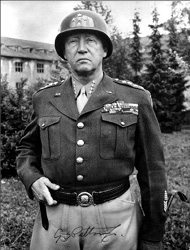
“Savaş yalın ve acımasızdır. Savaşmak için yalın ve acımasız insanlara gerek vardır.” gibi özlü sözleriyle edebiyatı da besleyen Patton, “İnsanlara nereye gideceklerini söyleyip, oraya nasıl gideceklerine kendilerinin karar vermesini sağlarsanız, alınacak sonuçlara hayran kalırsınız.” diyerek, emrindeki subayların inisiyatif kullanmasını teşvik etmiş bir komutandı.
Nazi Almanya’sına doğru ilerlemeye devam eden Patton, nihayetinde Çekoslovakya’yı geçti. Ona kalsa hiç durmadan gidebildiği kadar gidecekti ama savaş sonrasının dengelerini hesaplayan Rusya, Amerikalıların daha fazla kendi arka bahçesine girmesini istemiyordu. Joseph Stalin’in protestoları sonucu Patton geri çekilmek zorunda kaldı. Savaş bitmiş, Almanlar darmadağın olmuş, Avrupa kurtulmuş ve Patton, yaşayan bir efsane olmuştu.
Savaşın ardından Patton, işgal altındaki Almanya’da Bavyera Valiliği görevine atandı. Burada da kendine has yöntemleriyle iş görmeye devam edecekti. Nazilerin görevde kalmasına izin verdiğinden dolayı sert bir şekilde eleştirilince, 22 Eylül 1945’te düzenlediği basın toplantısında “Bu Nazi meselesi, Demokratlarla Cumhuriyetçiler arasındaki seçim kavgasına benziyor.” dedi. Bu sözleriyle büyük bir öfkeye neden oldu ve görevden alındı. Anlaşılan siyaset için biraz fazla açık sözlüydü.
Amerika’ya dönmeden bir gün önce, 9 Aralık’ta, sülün avından dönerken Mannheim civarında geçirdiği bir trafik kazasında ciddi biçimde yaralandı. Kendisini taşıyan 1939 model Cadillac, hatalı şekilde yola çıkan bir kamyona çarpınca, arka koltukta oturan Patton’ın kafası ön ile arka kısmı ayıran metal bloğa çarptı. Anında boynundan aşağısı felç olan Patton, 21 Aralık 1945’te Heidelberg’deki Askeri hastanede amboliden öldü. Lüksemburg’daki Amerikan şehitliğine defnedilen naaşı, bir süre sonra California’daki aile şehitliğine nakledildi. Kaza geçirdiği arabası ise tamir edilerek diğer subaylar tarafından kullanıldı. Arabası halen Kentucky’deki Fort Knox Askeri Üssü’ndeki Patton Müzesi’nde sergilenmekte.
Kimilerine göre o savaş delisi, yaşamanın güzelliğine ve anlamına değer vermeyen bir üniforma ve güç meraklısıydı. Büyük bir çoğunluğa göreyse de, eleştirilmeyi hak eden birçok özelliğine rağmen, yaşamı kutsayan, ama yaşam hakkını savunurken korkaklık gösterenlerden nefret eden gerçek bir asker.
NOTLAR
- İyi bir at binicisi, eskrimci ve yüzücü olmasının yanı sıra, aynı zamanda iyi bir atıcıydı. 1912 Stockholm Yaz Olimpiyat Oyunlarına katılmış, modern pentatlon dalında beşinci olmuştu.
- Katı ve disiplin delisi bir askerdi. Emrindeki subaylara her gün tıraş olma ve savaşta bile kravat takma zorunluluğu getirmişti.
- 1932’de Washington’da hükümete karşı emeklilik ikramiyelerine dönük protesto gösterisi yapan I. Dünya Savaşı gazilerinin (İkramiye Ordusu) çıkardığı ayaklanmayı bastıranlar arasındaydı.
- Almanya’da sivil halkın, toplama kamplarında Naziler tarafından işlenen suçları görmesi için kamplarda gezdirilmesi fikri ondan çıkmıştı.
- 1970’de hayatını anlatan ve başrolünü George C. Scott’un oynadığı ‘Patton’ isimli film, yedi dalda Oscar kazandı.
- Amerikan ordusunun en sevilmeyen komutanı olduğuna inanılmasına rağmen cenaze törenine, hiçbir emir almadıkları halde, 20 bin Amerikan askeri katılmıştı.
- Reenkarnasyon’a (yeniden doğum) inandığına dair güçlü bir söylenti vardı. Hatta yakınlarına göre, sık sık Kartacalı General Hannibal ya da Napolyon’un mareşallerinden biri olduğunu iddia ediyordu.
Üstün Irk sevdasıyla dünyayı ateşe veren Faşist lider
ADOLF HİTLER
(1889-1945)
“Almanya ya süper bir güç olacak
ya da hiç olmayacak.”
Hitler
Tarih mezarlığı acımasız diktatörlerle dolu. Ama biri var ki, şu ana kadar, hiç kimse onun kötü şöhretine erişemedi. Umarız erişmez de. Tarihi gerçek anlamda değiştiren bu asker, Yahudi soykırımını tetikleyen nefretiyle insanlığın alnına kara bir leke süren, bin yıl sürecek bir imparatorluğun hayaliyle gücünün yettiği her yeri işgal ederek koca bir dünya savaşı çıkaran ve tüm estirdiği bu nefret ve kan fırtınasıyla altmış iki milyon insanın hayatını kaybetmesine neden olan Adolf Hitler’den başkası değildi.
20 Nisan 1889’da Yukarı Avusturya’nın Braunau kasabasında gümrük memuru Alois Hitler ile ev kadını Klara Poelzl’un çocuğu olarak dünyaya geldi. Parlak bir öğrenci değildi. İlköğretimdeki öğretmenlerinden biri ilerde “Saldırgan ve arkadaşlarına liderlik taslayan kaba bir çocuktu.” diyerek hatırlayacaktı. Babası memur olmasını isterken, o ressam olmanın düşlerini kuruyordu. Sonradan hayatta tek zevk aldığı dersin tarih olduğunu söyleyecekti!
Sefalet göbek adı oldu, ressam olmayı düşledi
Çocukluğu tam anlamıyla sefaletle geçmişti. Hastalıktan ölen bir baba, inşaatlarda çalışılarak bakılan bir anne ve kardeşlerin yanı sıra parasızlıktan yarım bırakılan, zaten pek de parlak olmayan bir eğitim hayatı. Her ne kadar okula gitmese de, kazandığı paranın büyük bir bölümünü kitaplara harcayacak kadar okuma meraklısıydı Adolf. Zorluklarla geçen ilk gençliği, aynı zamanda içinde Yahudilere karşı duyduğu nefretin de tohumlandığı dönem oldu. Kendince bu nefrete bir kılıf bulmuştu. Ona göre Yahudiler hayatın her alanını kaplamış, kendisi gibi olanlara yer kalmamıştı! “Ne zaman abartılı bir sanat faaliyeti olsa, altından Yahudiler çıkıyordu. Her alanı ele geçirmişlerdi ve birbirlerini kayırıyorlardı.” diyecekti yıllar sonra. 1907’de annesini kaybetmesinin ardından yeni bir hayata atılmaya karar verdi. Hayallerinin peşinden gidip, ressam olacaktı.
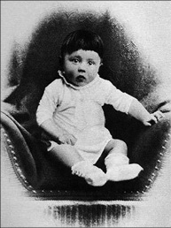
Hitler’in bebekliğine ait tek fotoğrafı.
Lakin bu hayali Viyana Güzel Sanatlar Akademisi’nin kalın duvarlarını aşıp gerçeğe dönemedi. Sınavlarda başarısız oldu. Yaptığı resimleri satarak karnını doyurduğu sefalet dolu günlerin ardından 1912’de Münih’e geldi. Ufukta dünyanın topyekûn girişeceği ilk savaş görünüyordu ve artık hiçbir şey Adolf için eskisi gibi olmayacaktı. Tuvallerin renkli dünyasından barut ve kan kokulu yeni bir dünyaya adımını atmak üzereydi.
Orduya girmedi, adeta sığındı
I. Dünya Savaşı patlak verdiğinde Hitler, belki de kendini güvende hissedebileceği en elverişli yer olduğundan olsa gerek, gönüllü olarak orduya; 16. Bavyera Piyade Alayı’na katıldı. İlginçtir bunun öncesinde Avusturya ordusuna girmek istemiş ama yetersiz bulunarak oradan da kapı dışarı edilmişti! I. Dünya Savaşı boyunca Batı Cephesi’nde piyade ve ulak olarak görev yaptı. Birkaç kez yaralanmasına, bir keresinde gaz saldırısına maruz kalmasına ve dört kez de cesaretini ispatlamasına rağmen, hiçbir zaman onbaşılık rütbesinin ötesine geçemedi.
Almanya ilk dünya savaşında tuş olunca, kişisel tarihinin ayrılmaz bir parçası olan sefalet, artık Almanya’nın da kaderi olacaktı. Aşağılanma, açlık ve ağır barış şartları ile örülü zor günler başlıyordu. Alman halkı, sefalet ve aşağılanmayla boğuşan her toplumda olduğu gibi aşırılıklara gebeydi. Popülist vatan kurtarıcıların ortaya çıkması için gereken tüm şartlar hazırdı. Hayata karşı duyduğu nefreti sırtına roket yapıp yükselecek olan Adolf, kurtarıcı koltuğunu gözüne kestirmişti. Alman İşçi Partisi isimli gizli bir siyasi oluşuma katıldı. Zamanla ateşli hitabetiyle sivrildi, liderliği ele geçirdi. Bu esnada partinin adı da NSDAP (Nationalsozialistische Deutsche Arbeiter Partei-Nasyonal Sosyalist Alman İşçi Partisi) olmuştu. Ya da daha sonradan bilinen adı ile Nazi Partisi.
Bu gerilimi yüksek günlerde taraftarları Adolf’a bir isim bulmuştu. Karizmatik, kısa, otoriter ama bir o kadar kucaklayıcı: Führer! Almancadaki manası ile o artık bir ‘rehber’ idi. Halkını, I. Dünya Savaşı sonrası Versay (Versailles ) Anlaşması tarafından dayatılan aşağılayıcı şartlardan kurtaracak, onlara üstün insanların hak ettiği ölümsüz bir imparatorluk kurma yolunda rehberlik edecekti. Partisinin yandaşları artık kısaca Nazi olarak anılıyor, sadece Alman kanı taşıyanlara Alman vatandaşlığı verilmesi, sermayenin devletleştirilmesi, başta Yahudiler olmak üzere ülkedeki yabancı varlığının budanması gibi hedefleri olan parti programına dönük sempati artıyordu. Bu arada ilerdeki kan davasında kendisine yoldaş olacak Josef Goebbels gibi isimler de etrafında toplanmaya başlamıştı. Goebbels, partinin gazetesinde Hitler’in ateşli söylevlerini etkili bir şekilde yazıya döküyor, kitleleri coşturuyordu. Zaten ileride Nazi Almanyası’nın propaganda bakanı olarak sergileyeceği icraatlarla, bugün bile propaganda bilimimin babası olarak anılmasını sağlayacaktı.
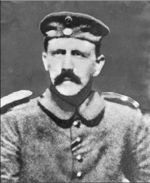
Hitler, onbaşı rütbesiyle katıldığı I. Dünya Savaşı yıllarında. Birçok kez yaralanmasına rağmen, üstleri tarafından takdir edilmemesi, kendisinde büyük bir hayal kırıklığı yaratmış, kurmaylara karşı içinde bir öfke birikmişti.
Hitler ve yandaşlarının bekleyecek zamanı yoktu. Bir an önce iktidara gelip büyük Almanya’yı kurmanın yollarını arıyorlardı. En geçerli yolda karar kıldılar: Darbe!
Tarihe Birahane Darbesi olarak geçen girişimle hükümeti devirmeye çalışan Hitler, başarısız olunca hapsi boyladı. İçerde yattığı on ay boyunca, sonradan Nazi ideolojisinin kutsal kitabı muamelesi görecek ve gelecekteki genişleme planlarının işaretlerini verdiği o ünlü eseri Mein Kampf’ı (Kavgam) kaleme aldı. Bu arada darbe başarısız olsa da, darbe girişimi esnasında özel korumalarının sergilediği cesaretten etkilenen Hitler, bunların sayısını arttırıp, kurumsallaştırılmalarına karar verdi. Nazi rejiminin terör odağı SS’ler (Schutz Staffel-Koruma Takımı) işte bu şekilde tarih sahnesine çıkmıştı.
Hitler, her ne kadar söylemleri ile popülerlik kazansa da, patlama yapmak için dünyanın, 1929’daki Büyük (Ekonomik) Bunalım’ın16 pençelerine düşmesini bekleyecekti. Bunalım, tüm dünyayı sarstığı gibi Almanya’da kötü olan şartları daha da berbat hale getirmişti. Kapana kısılmışlık duygusu Almanların Hitler’e olan teveccühünü arttırmış, denize düşen yılana sarılmaya başlamıştı! Ama henüz ülkede kimsenin gidişatın nereye olduğuna dair bir fikri yoktu.
1930 seçimlerinden ikinci parti olarak çıkan Naziler, toplumun en düşük kesimlerinin ümidi olarak görülüyordu. 1932’deki seçimlerde hiçbir parti parlamentoda çoğunluğu sağlayamasa da, yüzde 37’lik oy oranıyla Naziler, sandalyelerin çoğunu almıştı! Bu esnada Hitler siyasi kariyerini sanal tehditler üzerine inşa etme konusunda oldukça başarılıydı. ‘Almanya’da komünist devrimin eli kulağında’ korkusuyla kitleleri kendisine mahkûm etmeyi planlıyordu. Başardı da. Ülkede kriz ve iç savaş çıkacağından endişe eden Cumhurbaşkanı Paul von Hindenburg Hitler’i, başbakan olarak atamak durumunda kaldı. Lakin hükümeti kurmakta başarısız olan Hitler, ülkeyi yeniden bir genel seçime götürdü. Ve o andan itibaren de, tarihte eşine ender rastlanan bir şeyi yapacak; demokratik sistemi, kendi diktatörlüğünü kurmak için tepe tepe kullanacaktı!17
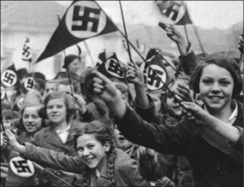
Hitler, bugüne kadar propaganda silahını en etkili kullanan lider olarak tarihe geçti. Bunda şüphesiz ki bu ilmin piri olarak kabul edilen Goebbels’in de payı büyüktü. Nazi propagandası, kitlelere ortak bir kimlik yükleme ve onları ‘yüce bir ideal’ uğrunda kenetlenme konusunda, tekerrür edilmesi zor bir başarı yakalamış, adeta tüm Alman halkını büyülemişti!
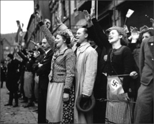
Demokratik yoldan iktidara gelen diktatör…
Bu arada 27 Şubat 1933 akşamı Reichstag’ta (Alman Parlamento Binası) şaibeli bir yangın çıkmış, Hitler vakit kaybetmeden olayı komünistlere yamamıştı. Sonradan sorumlunun bir meczup olduğu anlaşılacaktı ama iş işten geçmişti. Yangını kargaşa ortamını derinleştirmek için manipüle eden Hitler, ertesi gün Hindenburg’a, anayasadaki kişi hak ve özgürlüklerini askıya aldıran bir kararname imzalattı. Nazi Partisi ve milliyetçiler haricindeki tüm siyasi akımlar yasaklandı. 5 Mart 1933 günü yapılan seçimlerde oyların yüzde 44’ünü alan Naziler, milliyetçilerle birlikte parlamentoda çoğunluğu sağlamıştı. Alman ordusunun bir zamanlar itilip kakılan onbaşısı, artık ülkenin kaderine hükmeden isim olmuştu. Hemen harekete geçen Hitler, özel bir kanunla meclisin tüm yetkilerini kabineye devretti ve meclisi tatile çıkardı. Kanunu çıkartmak için sosyal demokrat ve komünist milletvekillerinin, oylama günü ortadan kaybedilmesi gerekecekti!
Artık ülkede ‘Büyük Almanya ve üstün Alman halkı’ sosuna batırılmış faşist bir düzenin kurulması aşamasına geçilmişti. Bu, çıkardığı kanunların özüne bakıldığında da gayet net görülebiliyordu: ‘Halkta ve Almanya’daki Sıkıntının Kaldırılmasına Dair Kanun’ (Gesetz zur Behebung der Not von Volk und Reich)
Tek adam olan Hitler, hızlı bir şekilde kendisini, cazibesini kullanarak popüler bir lider, birçok muhalifi öldürerek de mutlak diktatör olarak kabul ettirdi. Halkı Nazi ideolojisi etrafında tek yürek haline getirdi. Almanya’yı yeniden silahlandırarak I. Dünya Savaşı Mütarekesi’ni açıkça ihlal etti. Bu girişimi ona çok güçlü bir ordu olarak geri döndü. İşsizliği nerdeyse sıfıra indirdi ve ekonomiyi şaha kaldırdı. Ülkeyi boydan boya geçen ve halen kullanılmakta olan devasa otobanlar inşa edildi. Kendisini emekli bir cephe askeri olarak gören Hitler, I. Dünya Savaşı’nı kaybetmelerinden sorumlu tuttuğu üst rütbeli askerî seçkinleri küçümseyerek, ordunun komutasını da üstlendi.
Soykırım canavarını salıyor
Hitler için içindeki Yahudi nefretini somut olarak ortaya dökmenin zamanı gelmişti. Yahudiler şeytanlaştırılarak toplumdan tecrit edilmeye başlandı. Nazilere göre toplumdaki tüm kötülüklerin anası onlar, Almanlar ise üstün bir ırktı! Yahudiler gettolarda yaşamaya mahkûm edildi. II. Dünya Savaşı’nın başlamasıyla Yahudilere dönük bu sistematik dışlama, soykırıma dönüşecek, Almanya ve işgal altındaki ülkelerde kurulan toplama kamplarında yaklaşık 6 milyon Yahudi, gaz odaları ve fırınlar gibi akıl almaz yöntemlerle katledilecekti. Üstelik sadece Yahudiler değil, safkan Alman ırkına yakışmadığı düşünülen Çingeneler, homoseksüeller ve zihinsel engelliler de ortadan kaldırıldı18.
Hitler, taktiksel açıdan çok yetenekli bir asker olmasa da, yeni yeni oluşmakta olan zırhlı savaş kavramını çok iyi kavramıştı. Yıldırım saldırılar gerçekleştirebilmek amacıyla tank fabrikaları kurdurdu. Aynı zamanda bir hava gücü ve denizaltılardan oluşan donanma kurulması emrini verdi. Her ne kadar yeni teknolojiye hemen adapte olsa ve modern savaşlarda sürpriz ve toplu hücumun önemini çok iyi anlasa da Hitler, genel olarak bakıldığında zayıf bir kumandandı. Deneyimli ve gerçek askerlerden oluşan komuta kademesini ciddiye almıyordu. Bu ona pahalıya patlayacaktı…
Hitler işgal ediyor, dünya seyrediyor
1936 yılında Rhineland’ı işgal ederek, kendince yeni bir Alman İmparatorluğu (Önceki Alman imparatorluklarının devamı olmasına ithafen III. Reich olarak da bilinir) kurma yolunda ilk adımını attı. İki yıl sonra doğum yeri olan Avusturya’yı ilhak etti. Dünya kamuoyu, Almanya’nın askerî gücü karşısında korku ve hayranlık arasında bir yerlerde bocalarken, Hitler’in bir sonraki adımı, Çekoslovakya’nın Almanca konuşulan Südetler (Sudentenland) bölgesi olacaktı. Hitler, 29 Eylül 1938’de imzalanan bir anlaşmayla Südetler’i almadan üç gün önce Berlin’de halka hitap ederek ‘Asla bir korkak olmadım!’ diyor, Alman halkına topyekûn savaşa hazırlanmaları gerektiğini haykırıyordu. Dönemin siyasilerinin bu ihtiraslı konuşmanın19 satır aralarını okuyamaması, dünyaya pahalıya patlayacaktı!
Nihayet Almanya 1939’da Polonya’yı işgal edince, Hitler’in niyetinin pek de hayırlı olmadığı anlaşıldı. I. Dünya Savaşı’ndan sonra bir kez daha Almanya’nın ortalığı dağıtmasına izin verilemezdi. Fransa ve İngiltere, Almanya’ya karşı savaş ilan etti; ancak çabaları pek de bir işe yaramayacaktı. Nazi savaş makinesi biçerdöver gibi ilerliyor, bir hortum gibi önüne çıkan her şeyi kaldırıp yere çarpıyordu. Hitler, 1940’ta İskandinavya, Belçika, Hollanda ve Fransa’yı ve ertesi yıl da Yunanistan ve Yugoslavya’yı işgal etti. Sadece dâhice bir hava savunması ve Manş Denizi’nin oluşturduğu doğal bariyer, İngiltere’yi, Hitler’in gazabından kurtarabilmişti.
1941 yılına gelindiğinde ve bütün işgaller tamamlandığında Hitler, Almanya büyüklüğündeki bir ülkeden beklenenden çok daha fazlasını ele geçirmişti ancak bu Führer için yeterli değildi. Haziran ayında daha önce Sovyetler Birliği ile imzaladığı saldırmazlık anlaşmasını bozarak Rusya’ya, Japonların Pearl Harbor’u bombalamasının hemen ardından da Amerika’ya savaş ilan etti.
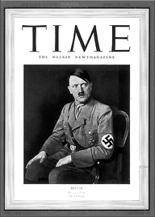
Amerikan Time dergisi, sonradan Amerika’nın başını çok ağrıtacak Hitler’i, 1938’de yılın adamı seçmişti.
Hitler ve Almanya, gücünün zirvesindeydi. Ancak Almanların doğuda Sovyetlere karşı ilerleyişi, Moskova’nın hemen dışında, Kızıl Ordu ve Rusya’nın amansız kışına takılmıştı. Hitler’in ordusu da Napolyon’unki gibi, ‘General Kış’ın kurbanları arasındaki yerini alacaktı. Hitler, generallerinin hepsini azletti. Kar, kış, açlık, yorgunluk gibi doğal ve insani faktörler, ona göre üstün bir ırka mensup Alman askerlerine vız gelmeliydi. Kaybetmek gibi bir ihtimali asla kabul etmiyordu. Askerleri ya ölecek ya da esir düşecekti. Geri dönüş yoktu.
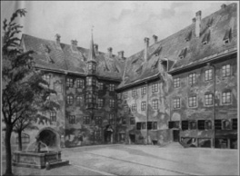
Hitler, aynı zamanda bir ressamdı da. Amatörlükten profesyonelliğe geçmek için çok uğraşmasına rağmen, akademiden hep geri çevrilmişti. Birçok sanat tarihçisi, her ne kadar çalışmalarını ‘döneminin temel çizgilerini taşıyor, olağanüstü bir tarafı yok’ diyerek eleştirse de, Hitler’in bir ressam olarak hiç de fena olmadığında hem fikirdir. Nazi diktatörünün 1914’de yaptığı bu tablo, Münih’te kaldığı evin avlusunu resmediyor.
Dünyanın dört bir yanında savaşan Alman ordusuna tek başına hükmetmeye çalışan Hitler, Karl Doenitz, Erwin Rommel ve Heinz Guderian gibi yetenekli kurmayları olmasına rağmen kontrolü elden hiç bırakmadı. Arada sırada tavsiyede bulunmaya cesaret edenler çıksa da, bildiği yoldan şaşmadı. Führer’ler yanılmazdı.
Takip eden dört yıl içersinde müttefikler Nazi savaş makinesinin hızını kesmiş, Normandiya ve Sicilya çıkarmalarıyla Avrupa’nın güneyini Almanlardan geri almışlardı. Nazilerin hem doğuda Sovyetlere hem de batıda Amerika ve diğer İttifak güçlerine karşı duramayacağı aşikârdı. İşler sarpa sarıyordu.
Bir mermi ile biten bin yıllık hayal…
Müttefikler arasında Nazilerin başkenti Berlin’e ilk olarak ulaşma yarışı varken bile Hitler, zaferinden emindi! Sovyet Kızıl ordusunun topları, Berlin’deki yeraltı sığınağının etrafını dövmeye başlayınca, yolun sonuna geldiğini kabul etmek zorunda kalacaktı. Çaresizlik içinde, son planını hayata geçirdi. Ağzına dayadığı silahtan çıkan mermi, 56 yıllık beynini dağıtırken, aynı zamanda ‘Bin yıl sürecek III. Reich İmparatorluğu’ hayallerini de tuzla buz ediyordu. Tarih, 30 Nisan 1945’i gösteriyordu ve dünyayı fethe çıkan adam, işgal altındaki başkentinin altındaki sığınağında bu dünyadan çekip gittiğinde, kendi cansız bedeniyle birlikte milyonlarcasınınkini de geride bırakıyordu.
Birkaç gün önce evlendiği sevgilisi Eva Braun da kendisinden hemen önce intihar etmişti. Çift, kendilerine ait hiçbir şeyin düşmanın eline geçmemesi adına köpeklerini bile zehirledi. Çiftin cesetleri Hitler’in son emri üzerine yakıldı.
Hasta adı: Adolf Hitler
Teşhis: Narsist Psikopat
Peki, akıl almaz söylemleri ile tüm Alman ulusunu büyülenmiş gibi avuçlarının içine alarak dünyayı fethe koyulan bu adam nasıl biriydi? Nasıl olmuştu da, ressam olmayı düşleyen kendi halinde bir çocuk, tarihin gördüğü en akıl almaz cinayetlerin işlendiği bir rejim kurmuştu?
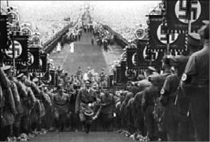
‘Hitler’in Yahudi Askerleri’ isimli kitabın yazarı tarihçi Bryan Mark Rigg’e göre, tarihteki en büyük soykırımlardan birini Yahudilere karşı gerçekleştiren Hitler’in ordusunda general ve amiral rütbesine yükselmiş Yahudiler de vardı! Rigg’e göre 161 Yahudi, savaşta ölmüş, 244’ü Demir Haç, 1’i Gümüş Alman Haçı, 19’u Altın Alman Haçı, 18’i de Almanya’nın en üst düzey askeri madalyalarından Şövalye Haçı ile ödüllendirilmişti.
Müttefikler, 1943’te yargılanmasında yol haritası olması ve Almanya’nın yenilgisine vereceği tepkiyi tahmin etmek için Hitler’in psikolojik yapısını mercek altına almıştı. Hitler’in beyin kıvrımlarına sızma görevi, Harvard Psikoloji Kliniği Direktörü Dr. Henry A. Murray’e verildi. Dr. Murray’in açmazı, Atlantik ötesinde, üstelik de beton bir sığınakta savaşı idare eden Hitler’i, onca mesafeye rağmen psikanalize tabi tutmak zorunda olmasıydı. O da ‘hastasıyla’ ilgili ulaşabildiği tüm ikinci el kaynakları; aile bilgilerini, okul ve ordu kayıtlarını, el yazılarını, Amerikan gizli servislerinin topladığı bilgi ve belgeleri ve hakkında yazılanları bir havuzda topladı. Tüm bunları psikolojinin temellerinden ‘ihtiyaçlar teorisi’ ile harmanlayarak, Hitler’in olası bir mağlubiyette, intihar edeceği sonucuna vardı. Dr. Murray, Hitler’in kişiliğine ‘counteractive narcism’ teşhisi koymuştu. Diğer bir deyişle; gerçek ya da hayali bir hakaret, ezilme ya da aşağılanma ile dürtülenen bir kişiliği vardı! Etrafındakilere diş biliyordu, eleştiriye tahammülü yoktu, sürekli dikkatin kendi üzerinde olmasını istiyordu. Asla yanındakileri takdir etmiyor, aşağılıyor ve de suçluyordu. İntikam duyguları ile hareket ediyor, mağlubiyet karşısında kararlılık gösteriyor, asla şaka kaldırmıyordu. Hepsinden önemlisi, içgüdüsel olarak suça meyilli olması, onu karşı konulmaz bir kişiliğe dönüştürüyordu. Murray hastasıyla ilgili raporunda şöyle diyordu:

“Şimdiye kadar tüm dünyayı yönetmek konusunda Roma İmparatorluğu’nun bir benzeri olmadı. Ve hiçbir imparatorluk, uygarlığını Roma kadar yayamadı.” diyerek Roma uygarlığına, “Alman ırkının öncü ataları arandığında Eski Yunan’a bakılmalıdır.” diyerek de Yunan uygarlığına atıfta bulunan Hitler, Alman toplumunu, üstün olduğuna inandığı Aryan ırkı ideali etrafında yapılandıracaktı. Bu toplumda herkes sarışın, mavi gözlü, sağlıklı ve sportif görünecekti. Hitler’in bu hastalıklı dünyasında ‘ötekilere’ yer yoktu.
“Hitler, ezik bir gençlik yaşadı. Babası tarafından tacize uğradı. Mimar olmak istedi, başaramadı. Opera sanatçısı olmak istedi, sesini beğenmediler. Resme yetenekliydi. Viyana Güzel Sanatlar Akademisi’ne başvurdu, reddedildi. Halen bile birçok sanat tarihçisi burada Hitler’e haksızlık edildiğini düşünür. Zira resimleri birçokları tarafından çok başarılı bulunuyordu. Bu ret, hayatındaki en büyük yıkımlardan biri olacaktı. Kimilerine göreyse, neye el attıysa, ne olmak istediyse, karşısına kendisinden daha başarılı Yahudiler çıkmış ve o daima ikinci planda kalmıştı. Kendisi sefalet içinde bir gençlik yaşıyor, oysa Yahudiler, ticari girişimleriyle rahat bir hayat sürüyordu. Babası da Yahudileri hiç sevmezdi. Hiçbir zaman Adolf’u yaptığı bir şeyden dolayı takdir etmemişti. Ölünce, Hitler kendisini babası ile özdeştirdi. Fotoğraflarda bile onun gibi poz veriyordu. Yahudileri ortadan kaldırarak, ölmüş bile olsa, nihayet babasının istediği bir şeyi başarmış olacağını düşünüyordu. Bu aşağılık kompleksinin faturasını, iktidarı ele geçirince katlettireceği milyonlarca masum Yahudi’ye kesecekti. Orduda onbaşılıktan yukarıya çıkamadı. Tüm bu horlanma ve aşağılık duygusu, kriz dönemi Almanyası’nda komünist ve Yahudi karşıtı söylevleriyle kendini dışa vurdu. Nefretini zamanla Nazizm olarak kalıba döktü.”
Hitler’in ruh dünyasına yönelik çalışma sadece Dr. Murray’inkinden ibaret değildi. Psikanalist Walter C. Langer da, 1943’te, Winston Churchill’in isteğiyle 11 bin belgeyi tarayarak ‘The Mind of Hitler/The Secret Wartime Report’ (Hitler’in Zihni/Gizli Savaş Dönemi Raporu) isimli bir çalışma hazırlamıştı. Dr. Langer, savaşın Hitler aleyhine dönmesiyle birlikte, vereceği olası tepkilere dönük senaryolar geliştirmiş ve o da Nazi liderinin intihar edeceğini tahmin etmişti. Ölümden çok korkmasına rağmen, histerik biri olduğu için kendisini her şeye kadir biri olarak görebilir ve kendisini öldürmeyi başarabilirdi. Etrafındakileri efsunlamayı çok iyi biliyordu ve gerekirse ölümünü de bu yönde kullanabilirdi. Dr. Langer’a göre, nihayetinde, intiharının ardından cesedinin yakılmasını emrederek, o dönemin yerleşik inançlarını da kendince protesto etmişti.
Gerçek anlamda tarihi değiştiren bir asker oldu
Neredeyse on yıllık bir süre içerisinde Hitler, tarihin en kudretli askerî liderlerinden biri olmuş, dünyada sebep olduğu değişim açısından da en etkili liderler listesinde tartışmasız bir numaraya oturmuştu. Şüphesiz ki, hiç kimse onun kadar ‘tarihi değiştiren asker’ sıfatını hak etmedi. II. Dünya Savaşı’nı başlatarak yeni bir dünya düzeninin kurulmasına sebep oldu. Savaşın ardından eski dünyanın güçlü devletleri İngiltere ve Fransa zayıfladı; onların yerini iki yeni süper güç, Amerika ve Rusya aldı. Almanya, savaşın ardından tekrar birleşeceği 1989 yılına kadar, yaklaşık yarım asır boyunca iki ayrı ülke olarak varlığını sürdürdü. Ve belki de en ilginci, Hitler’in dünyadan silmeye kalkıştığı Yahudilerin Filistin topraklarında kurduğu İsrail devleti, Hitler’in Nazi İmparatorluğu’ndan çok daha uzun ömürlü olurken, sadece ‘safkan Almanların’ yaşamasına layık gördüğü Almanya, savaş sonrası yaşanan gelişmelerle bugünkü göç ülkesi kimliğine büründü!
NOTLAR
- Almanya’nın ‘Yaşam sahası’ (Lebensraum) ve ‘Tek Millet, Tek Devlet ve Tek Rehber’ (Ein Volk, ein Reich, ein Führer) politikalarını hayata geçirmek için dünyayı ateşe verdi.
- Kendisinin ve eşinin yakılan cesetlerinin ortadan kaybolması, (ilerleyen yıllarda Rusların Hitler’in cesedinden arta kalanları Moskova’ya götürdüğü ortaya çıksa da) intihar etmediği ve ölene kadar dünyanın değişik ülkelerinde saklandığına dair onlarca komplo teorisini besledi.
- İki vasiyet bıraktı. İlkinde Alman halkına mücadeleye devam çağrısı yapıyor, diğerindeyse kişisel sanat eseri koleksiyonuyla doğduğu yere müze kurulmasını istiyordu.
- Hitler’in, intiharla sonuçlanan son 12 günü, psikolojik halinin gerçekçi detaylarıyla birlikte ‘Çöküş’ (Der Untergang) isimli filmde başarıyla yansıtılır.
- Michigan’daki bir fabrikaya tank sipariş ettirdiği, “Almanya’ya yollamanıza gerek yok, Detroit’e giderken ben alırım!” dediği iddia edilir.
- Ellere karşı bir takıntısı vardı. Kütüphanesinde ünlü tarihi karakterlerin el yapılarını analiz eden bir kitap bulunuyordu. Sıklıkla ellerinin Büyük Frederik’inkilere benzediğini söylerdi.
- Time dergisi tarafından 1938’de yılın adamı olarak seçilmişti.
- II. Dünya Savaşı’ndan önce New York telefon rehberinde Hitler soyadını taşıyan 22 kişi vardı. Savaşın ardından hepsi adını rehberden sildirdi.
- Yaşarken 4 bin kadar Alman yerleşim merkezi tarafından fahri hemşerilikle onurlandırılmış, bunlardan en sonuncusu olan Bad Doberan köyü, Hitler’in hemşerilik kaydını 2007 yılı Nisan ayına kadar iptal etmeyi unutmuştu!
- Alman vatandaşlığından çıkarılmasına dönük siyasi girişimler olsa da, Alman Anayasası, başka hiçbir ülkenin vatandaşlığına sahip olmayan kişilerin vatandaşlıktan çıkarılmasına izin vermediği için Hitler halen Alman vatandaşıdır.
- Katolik bir ailede büyümesine rağmen Hıristiyan değildi. Almanya’nın patronu olduğunda, aryan ırkının üstünlüğünü kutsayan pagan bir felsefeye inanıyordu. Tüm dinlere eşit derecede düşmandı.
- I. Dünya Savaşı yıllarında askerken Belçika’da konakladığı yerin yakınlarındaki bir binanın tavan arasında yaptığı yirmi bir sulu boya tablo, 2006’da İngiltere’de düzenlenen bir açık arttırmada 176 bin Euro’ya satıldı.
- Almanya’da ve işgal ettiği ülkelerde dinlenmesini yasakladığı Rahmaninov, Çaykovski ve Borodin gibi Rus ve Yahudi kompozitörleri kendi sığınağında bol bol dinlemişti.
Üniversite okuyamadı; önce asker, sonra kahraman, ardından da Amerika’ya başkan oldu
DWIGHT DAVID EISENHOWER
(1890-1969)
“Karamsarlık asla bir savaş kazanamamıştır.”
“Savaşta planlar hiçbir şey, ama
planlama her şeydir.”
Eisenhower
Güçlü bir kişiliği vardı. Yirmi yıl boyunca, önce asker, daha sonra da devlet adamı olarak, hem kendi ulusu hem de dünya ulusları açısından uzun süre etkileri hissedilen kararlar aldı. 1940’larda Amerikan ordusunun subaylarından biri olarak, Avrupa’daki tüm müttefik ordularının komutanı unvanıyla Hitler’e karşı verdiği mücadele ile tanındı. Ama o, sıradan bir asker olarak kalmadı, müttefiklerin siyasi planlamasına da damgasını vurdu. Bu etkisi II. Dünya Savaşı’nın ardından patlak veren Soğuk Savaş esnasında da devam etti. Dünya politikasının en sıcak ve hararetli dönemlerine, 1945’te 4 milyon kişilik bir ordunun komutanı, ardından 1950’de Sovyet yayılmacılığına karşı kurulan Kuzey Atlantik İttifakı (NATO)’nın komutanı ve 1953’te de Amerika Birleşik Devletleri’nin başkanı olarak şahitlik etmişti. Askeri kariyerinin durağan günlerine denk gelen 1930’larda ise, yukarıdaki birbirinden cafcaflı bu görevlerden hiç biri aklından bile geçmiyordu oysa. 1940’ta yüzbaşılığa yükseldiğinde, 1920’lerdeki düşüncelerinde bir değişiklik olmuştu. O zaman için yeni bir dünya savaşı beklenmediği için, devresindeki diğer subaylar gibi rahat bir emekliliğin hayallerini kurmakla meşguldü. Bununla birlikte her şeyden önce bir askerdi ve her zaman silaha sarılmak için hazır beklediği inkâr edilemezdi. Dwight David Eisenhower, dünya tarihinin en kanlı ve büyük savaşında, çokuluslu müttefik güçlerinin kumandanlığını yapmış, II. Dünya Savaşı’nda Mihver Devletleri’ni yenen Müttefik saldırılarını planlamış ve hayata geçirmişti. Bunu yaparken, birbirinden tamamen değişik müttefik güçlerini koordine ve idare etme başarısını göstermiş, emri altındaki inatçı kumandanları yönlendirme konusunda sıra dışı bir kabiliyet sergilemiş ve bunun sonucunda da tüm dünyayı Nazi ve Japon savaş canavarlarından kurtaran orduya komutanlık etme şerefini yaşamıştı.
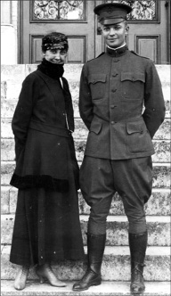
Eşi Mamie ile birlikte askeri öğrencilik yıllarında görülen Eisenhower, iki dünya savaşı arasındaki zaman diliminde askerliği bırakmayı düşünmüş, komutanı kendisi bu kararından vazgeçirmişti.
Üniversite okuyamadı, asker oldu
Texas eyaletindeki Denison kasabasında 14 Ekim 1890’da dünyaya gelen Eisenhower, küçük yaşlarda ailesiyle birlikte Kansas eyaletindeki Abilene’ye taşındı. Çocukluğu orda geçti. Düşük gelirli bir aile olmaları, ebeveynlerinin dindarlığı, Eisenhower’ın üzerinde büyük bir etki bırakacaktı. İdeal orta sınıf Amerikan ailesini temsil ediyorlar; bütün aile birlikte çalışıyor; hatta sebze ve meyvelerini bile kendileri yetiştiriyorlardı. Üniversiteye girme başarısı gösteremeyen Eisenhower, doğrudan hayata atılmak adına orduya girmeye karar verdiğinde, hayatının en önemli kararını aldığının bilincinde değildi muhtemelen. Elliden fazla general çıkaran 1915 devresinin bir üyesi olarak West Point Askeri Akademisi’nde futbol oynamıştı. Akademiyi vasat bir ortalamayla bitiren genç Eisenhower’ın ilk görev yeri piyade birliği oldu.
Kariyerinin ilk günlerinde piyadeleri ve yeni organize edilen tankçı tugaylarını yetiştirme konusunda sergilediği performansla sivrilmiş, henüz o yıllarda, zırhlı birliklerin geleceğin savaşlarında önemli roller oynayacağı fikrini savunmaya başlamıştı. Ford Leavanworth’taki tank okulunda görev yapmasının ardından 1918’de Geftysburg’daki tank eğitim merkezi kumandanlığına atandı. Her ne kadar I. Dünya Savaşı’nda cephede görev alma şansı yakalayamasa da, cephe gerisinde görev yapmış ve dönemin hızlı terfi sistemi sayesinde 1920’de binbaşılığa yükselmişti.
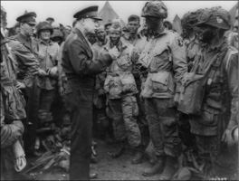
Normandiya Çıkartması’nın yapılması fikrini ortaya atıp, ardından da hayata geçiren Eisenhower, İngiltere’deki karargahından, çıkartmaya katılacak müttefik birliklerine gönderdiği mesajda şöyle sesleniyordu: ‘Müttefik Seferberlik Gücü’nün askerleri, denizcileri ve havacıları! Aylardır çabaladığımız büyük haçlı seferine çıkmak üzeresiniz. Tüm dünyanın gözü üzerinizde. Özgürlük seven insanların umutları ve duaları her yerde sizinle birlikte.’ Eisenhower, çıkartmanın hemen öncesinde hava indirme birliklerinin komutanlarına son talimatlarını verirken görülüyor.
Ancak I. Dünya Savaşı sonrasındaki barış döneminde ordudaki terfi sistemi değişmiş ve yarbay olacağı 1936’ya dek binbaşı olarak kalan kahramanımız kısıtlı asker maaşıyla ailesini geçindirmeye çalışmıştı. Ancak Eisenhower, durgunlukla geçen bu uzun yılları boş geçmeyerek, kendisini geliştirecekti. Sırasıyla Kansas Fort Leavenforth’da kurmay okulunu bitirmiş, 1929’da, üzerinde büyük bir etki bırakan General Jon Joseph Pershing’in emrinde görev yapmış ve I. Dünya Savaşı’nda gerçekleşen çarpışmaları analiz eden bir kılavuz hazırlamıştı. 1935’deyse Genelkurmay Başkanlığı’nda, bir başka efsaneyle, General Douglas MacArthur’la birlikte çalışacak, 3 yıl boyunca Filipinler’de ona danışmanlık yapacaktı.
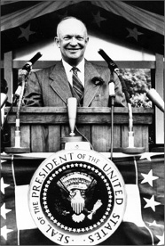
Başkanlığının son günlerinde yaptığı konuşmada ülkedeki silah sanayisinin haddinden fazla gelişmeye başladığını ve bunun iyi olmadığını söyleyen Eisenhower, “Yapılan her silah, suya indirilen her savaş gemisi ve ateşlenen her roket, açların yemeğinden, çıplakların giyiminden başka bir şey değildir” diyecekti. II. Dünya Savaşı’nın en büyük komutanı olarak tarihe geçen Eisenhower, savaştan sonra da “Kimse bana savaştan bahsetmesin. Meraklı olan gidip savaşır. Ben gördüklerimden sonra savaş fikrinden nefret ettim.” diyecekti.
1941’de tuğgeneral rütbesiyle astlarının selamını alan Eisenhower her ne kadar pırıltılı kurmaylık kumaşıyla dikkat çekse de, o zaman bile yeteneklerini keşfedenlerin, onun 3 yıl içinde çok hızlı bir şekilde rütbelerini yükselteceğini ve Avrupa’daki müttefik kuvvetlerinin başkumandanı olacağını tahmin ettikleri şüphelidir.
Eisenhower’ın performansı, Pershing ile MacArthur üzerinde bıraktığı olumlu izlenimle perçinlenmiş, dönemin Genelkurmay Başkanı George Catlett Marshall, Pearl Harbour’un bombalanmasından kısa bir süre sonra onu, Operasyon Bölüğü’nün başına atamıştı. Eisenhower, Nazileri Avrupa’da yenen ilk kumandan olurken, Pasifik cephesinde Japonların kuşatılmasını öngören planların hazırlanmasında da önemli bir rol oynamıştı.
Marshall’ın İngiltere’de toplanan Amerikan güçlerinin kumandasını vermek ve Tümgeneralliğe yükseltmek için tercihi yine Eisenhower oldu. Tarihler 1942’yi gösterdiğinde Eisenhower, Korgeneralliğe yükselmiş, Kuzey Afrika’nın Almanlardan kurtarılmasını hedefleyen Torch Operasyonu’ndaki Amerikan güçlerinin kumandasını devralmıştı. Özellikle bu operasyon esnasında Kasserine Geçidi’nde kilitlenen Amerikan birliklerini, alt komuta kademesinde yaptığı yerinde değişikliklerle çözmeyi başararak, Almanların efsane generali Rommel’in Afrika’daki birliklerine zor anlar yaşattı. Afrika’dan İtalya’ya intikal eden Amerikalı General, Nazileri İtalyan yarımadasından püskürtürken, Mussolini’nin ordularını da teslim olmaya zorluyordu. Bu esnada, her biri kendi çapında marka olan Bernard Law Montgomery ve George S. Potton gibi başına buyruk ama bir o kadar da başarılı astlarını kontrol etmedeki yeteneğiyle de dikkat çekmişti.
Orgeneralliğe yükselen Eisenhower, Afrika ve İtalya’daki başarılarının ardından Aralık 1943’te Avrupa Müttefik Sefer Gücü Yüksek Komutanlığı’na atandı. Bu kez önünde zorlu bir görev vardı. Tarihin seyrini değiştirecek bir görev: Normandiya Çıkartması.
Normandiya Çıkartması’nı planlayıp hayata geçirdi
Eisenhower’ın görevi, Fransa’daki Alman işgalini sona erdirmeyi hedefleyen Overlord Operasyonu’nu (Normandiya Çıkartması) planlamak ve hayata geçirmekti. Eisenhower’ın komutasındaki müttefik güçleri, Normandiya’ya yaptıkları başarılı çıkarmanın ardından, Almanya’nın içlerine doğru ilerlemeye başladı. Tabi işlerin her zaman iyi gittiği söylenemezdi. Hollanda’yı Nazi işgalinden kurtarmak için havadan düzenlenen Market Garden Operasyonu’nun başarısızlıkla sonuçlanması ve ardından Almanların Adennesse’deki sürpriz karşı saldırısından sonra müttefikler tekler gibi olsa da, Eisenhower’ın ordusu Ren nehrini geçerek, Berlin’e ilerlemeye başlamıştı. Hitler’in son savunma planları hakkında elde edilen yanlış istihbarata dayanarak aldığı tartışmalı bir kararla Berlin’e ilerlemekten vazgeçen Eisenhower, savaşın son bulacağını düşündüğü Münih’in güneyindeki tepeleri kuşattı. Bu belki de göz kamaştıran kariyerinin en talihsiz kararıydı. Zira Berlin’i alıp savaşa son noktayı koymak, Kızıl Ordu’ya nasip olacaktı.
Savaşın ardından Eisenhower, 1948’de Columbia Üniversitesi’nin başkanı olmak için istifa edeceği güne kadar Marshall’ın yerine atandığı Genelkurmay Başkanlığı koltuğunda oturdu. Üç yıl sonra NATO’ya liderlik etmek için tekrar Avrupa’ya dönmüştü. 1952’de Cumhuriyetçi Parti’den başkanlık seçimine girince, bugüne kadarki en yüksek oy oranını yakalayarak, Amerika’nın 34. Başkanı oldu. İktidarı sırasında Kore Savaşı’nı sonlandırdı. İki dönem peş peşe yaptığı başkanlığın ardından emekliye ayrılarak, Pennsylvania Gettysburg’daki çiftliğine yerleşti. 28 Mart 1969’da Washington D.C’de 78 yaşında hayata gözlerini yumdu.
Sıklıkla savaşlarda ön cephelerde yer almadığı için eleştirilmesine rağmen, zor kararların alınması ve uygulanmasındaki becerisiyle bu eleştirileri geçersiz kılmayı başarmıştı. Geleneksel anlamda eli silahlı bir savaşçı olmasa da, stratejik düşünmedeki başarısı, idareciliği ve doğru zamanda doğru yerde olmayı bilmesiyle, her zaman kendisine güvenenleri haklı çıkardı. Koalisyon oluşturma ve ekip çalışmasını teşvik etmedeki sabırlı liderliği ve kabiliyeti olmasaydı, Müttefikler, kendilerine zaferler kazandıran devasa operasyonları gerçekleştiremezdi.
NOTLAR
- Çocukluğunda disiplin ile arası iyi değildi. Hatta disiplin cezasından dolayı sınıfta kaldığı da olmuştu.
- West Point Askeri Akademisi’nde okurken oynadığı futbolla sivrilmiş ‘Kansas Kasırgası’ unvanı ile anılır olmuştu.
- İki dünya savaşı arasındaki durağan dönemde ordudan ayrılmaya kalkışmış, Komutanı General Fox Conner, kendisini bu kararından vazgeçirmişti.
- Normandiya Çıkarması fikrinin mimarı oldu.
- İsminden ziyade ‘Ike’ (Ayk) kısaltması ile anıldı.
- İyi bir aşçıydı. Latin çiçeği kullanarak kendi türettiği sebze çorbası literatüre girdi.
- İncil’i ve Shakspeare’in eserlerini okumayı severdi.
- Pilot lisansı alan ilk Amerikan Başkanı olmuştu.
- 1954 yılında nükleer silahlarla sağlanacak caydırıcılıkla sürekli bir barış sağlamayı hedefleyen ‘Barış için Atom’ programını başlattı.
- 5 Ocak 1957’de Komünizmin yayılmasını engellemek için Orta Doğu ülkelerine askeri ve ekonomik yardım yapılmasını öngören ünlü Eisenhower Doktrini’ni açıkladı.
- Türkiye’yi ziyaret eden ilk Amerikan Başkanı oldu.
- Vietnam’ın kaybedilmesi durumunda Amerika’nın bölgedeki diğer müttefiklerinin de domino taşları gibi devrilerek Çin ve Sovyet etkisine gireceklerini öngören Domino Teorisi’ni ortaya atan oydu.
- 17 Mart 1960’da CIA’nın Castro’yu devirme planını kabul etti.
- Oğlu John S. D. Eisonhower da Amerikan ordusundan general rütbesiyle emekli oldu. Belçika’da büyükelçilik yaptı ve aralarında babasının hayatını anlattığı birinin de bulunduğu bir dizi kitap yazdı.
Hitler’i yendi, hiç savaş kaybetmedi, Rus liderlerini gölgede bıraktı
MAREŞAL ZHUKOV
(1896 –1974)
“Meydan savaşlarının doğası, sınırsız
inisiyatif kullanabilen ve
eylemlerinin sorumluluğunu alabilmek için
sürekli bir hazırlık içersinde olabilen
komutanlar gerektirir.”
Zhukov
Georgy Konstantinovich Zhukov, II. Dünya Savaşı’nda Sovyetler Birliği’ni Mihver Devletlerin işgalinden kurtaran Kızıl Ordu’ya komuta etmiş, Doğu Avrupa’nın büyük kısmını ele geçirmiş ve Almanya’nın başkenti Berlin’e girerek Hitler’e son darbeyi vurmuştu. Ve tabiî ki bu başarıları Kremlin tarafından cezasız bırakılmamıştı! Lideri Stalin’den daha ünlü olduğu için, kendisinde görevden el çektirilmiş, pasifize edilmiş ve kariyeri ile ters orantılı bir şekilde, sessizce, bu dünyadan göçüp gitmişti. Yine de hiçbir şey Zhukov’un ‘Sovyetler Birliği’ tarihinin en büyük, dünya tarihinin ise sayılı askerlerinden biri olarak anılmasına engel olmayacaktı. Onun adı, ‘Hiç savaş kaybetmemiş asker’ idi.
II. Dünya Savaşı tarihçisi Albert Axell, ‘The Man Who Beat Hitler’ (Hitleri Yenen Adam) isimli kitabında ünlü mareşali şöyle tanımlıyordu: “Tüm Rus generalleri gibi o da katıksız bir komünistti. Kendini her zaman iyi bir parti üyesi olarak görmesine rağmen her şeyden önce iyi bir asker ve vatanseverdi. Strateji ve hile ustası, iyi bir planlamacı ve motivatördü. Ama acımasız ve aşırı şiddet kullanmaya meyilli bir asker olduğu inkar edilemezdi.”
Zhukov, Rusya’nın önemsiz sayılabilecek bir noktasında, Strelkovka’da ayakkabıcı bir baba ile çiftçi bir annenin çocuğu olarak dünyaya gelmiş, küçüklüğünde bir kürkçünün yanında çırak olarak çalışmıştı. 1915’te çarlık ordusuna katılan Zhukov, sırasıyla 106. İhtiyati Süvari Alayı’nda ve 10. Dragoon Novgorod Alayı’nda görev yaptı. Gözü pek bir askerdi. Bunu da I. Dünya Savaşı sırasında iki defa Üstün Hizmet Madalyası alarak gösterecekti. 1917 Ekim Devrimi, birçok yaşıtı gibi onun da hayatını değiştirmiş, Bolşevik Partisi’ne katılmıştı. 1918-1921 yılları arasında yaşanan Rus İç Şavaşı sırasında birçok çatışmaya katıldı. 1921’de Tambov isyanını bastırmakta gösterdiği başarıyla, sadece iç savaş esnasında dağıtılan ve o dönemin en yüksek askeri nişanı olarak kabul edilen Kızıl Sancak Savaş Madalyası’na layık görüldü.
1923 yılına gelindiğinde Zhukov bir alayın, 1930’da ise bir tugayın başındaydı. O zaman için yeni bir teori olan ‘silahlı mücadele’nin çok keskin bir taraftarıydı. Detaylı plan yapması, katı disiplini, tutuculuğu ve tutumunu asla değiştirmemesi ile sivrilmişti. Kısmetliydi de. Rus diktatör Joseph Stalin tarafından 1937-39 yılları arasında gerçekleştirilen ve binlerce ordu mensubunun ajanlık ve işbirlikçilik suçlaması ile idam edildiği Büyük Temizlik (Great Purge) esnasında hayatta kalmayı başarmıştı.
İç savaşın ardından Zhukov, zırhlı birliklerin savaşlardaki rolü üzerine kafa yormaya başladı. İnsan kaybının getirdiği maliyet Zhukov’a, zırhlı birliklerin ön planda olduğu yeni bir savaş modeli geliştirilmesi konusunda ilham vermişti. Bu fikrini ilk olarak Japonlara karşı hayata geçirecekti.
Zhukov ile ilk tanışan Japonlar oldu
Zhukov, 1938 yılında patlak veren Rus-Japon savaşı üzerine Birinci Sovyet-Moğol Ordu Grubu’nun komutasını devraldı. Japonlar, 80 bin asker, 180 tank ve 450 uçakla ilerliyorlardı ki, emrindeki iki tank tugayı ile harekete geçen Zhukov, Khalkhin Gol Savaşı’nda cephe savaşı emri verdi. Çift Sarma manevrasıyla, tanklarını önüne katarak, Japon hatlarına kanatlardan saldıran Rus kumandan, motorlu topçular ve piyadelerin de desteğiyle, 6. Japon Ordusu’nu kuşatarak lojistiğini kesti. Düşman birkaç gün içinde tuş olmuştu. Bu başarısından dolayı Zhukov’a ‘Sovyetler Birliği Kahramanı’ unvanı verildi. Lakin hiç kimsenin Zhukov’un bu başarısını görecek hali yoktu çünkü tüm savaşların anası; II. Dünya Savaşı başlamıştı.
Bununla birlikte Zhukov’un bu savaş taktiklerini yakından izleyen birileri de yok değildi; Almanlar! Derslerini iyi çalıştıklarını, 1940’ta Fransızlara karşı giriştikleri ve vurucu güç olarak piyade destekli tank birliklerinin hücumuna dayanan Blitzkrieg (Yıldırım) Savaşı ile göstereceklerdi.
1940’ta Orgeneralliğe yükselen Zhukov, cesareti, birikimi ve yetenekleriyle Stalin’in dikkatini çekince, kısa bir süre de olsa Genelkurmay Başkanlığı yapmış, aralarında yaşanan anlaşmazlığın ardından da görevden alınmıştı. İlginç bir şekilde bu durum, Zhokov’un 1941’de Almanya’nın Sovyetler Birliği’ni işgali sırasında uğranan büyük toprak kayıplarından sorumlu tutulmamasını sağlayacak ve Stalingrad Kuşatması’ndan20 itibaren II. Dünya Savaşı kahramanlarından biri olmasının yolunu açacaktı.
Almanların Rusya’yı işgal etmek için başlattığı Barbarossa Operasyonu, insanoğlunun gördüğü en büyük harekâtlardan biri olarak tarihe geçiyordu.
5 bin tank ve 3 bin uçağın desteklediği bir milyon civarındaki Alman askeri, yıldırım hızıyla girdikleri Rus topraklarında hızla ilerleyerek, Stalingrad’ı güneyden vurmaya başlamış, Moskova’nın dış mahallelerine dayanmış ve Leningrad’ı da kuzeyden kuşatmışlardı. Zhukov’un ilk büyük testi, Moskova’yı kurtarması olacaktı. Bunun için şehirde ne kadar araba varsa bunlardan yaptırttığı bariyerlerle sokakları Alman zırhlılarına kapattırmış ve gerilla savaşıyla düşmanı püskürtmüştü. Ama Hitler’e asıl esaslı darbeyi, ünlü Stalingrad Savaşı’nda vuracaktı.
Stalingrad fatihi Nazileri durduruyor
Rus topraklarında çekirge sürüsü gibi ilerleyen 235 bin kişilik Alman 6. Ordusu’nun hedefi, Stalingrad’dı. Hitler, özellikle baş düşmanı olarak gördüğü Stalin’in adını taşıyan bu şehrin alınmasına sembolik bir önem veriyordu. Alman birlikleri başlangıçta şehrin dış mahallelerini ele geçirmeye başlasa da, Rusların yoğun topçu ateşinden dolayı yerlerine çakılmışlardı. Şehri almaya gelen Alman askerleri, Zhukov’un komutasındaki Kızıl Ordu’nun destansı direnişiyle durdurulmuş, uzun bir süre harabeye dönmüş şehirde verilen gerilla savaşıyla düşmanın direnci kırılmıştı. 4 bin topla gökyüzünden ölüm yağdıran Ruslar, kuşatmaya gelen Almanları kuşatmıştı. Taş üzerinde taş bırakmayan çarpışmaların ardından teslim olan Mareşal Friedrich Wilhelm Ernst Paulus komutasındaki Alman 6. ordusundan geriye 95 bin asker kalmıştı! Bunlardan sadece 5 bin kadarı Almanya’ya geri dönebilmiş, diğerleri salgın hastalıkların, ‘General Kış’ın ve açlığın kurbanı olmuş, Sibirya steplerinde kaybolup gitmişlerdi. Paulus ile birlikte 24 Alman generalinin de Zhukov’un birliklerine teslim olduğu Stalingrad Zaferi, II. Dünya Savaşı’ndaki doğu cephesinin; birçok tarihçiye göreyse tüm savaşın dönüm noktası olmuştu. Stalingrad, Alman yayılmasını durdurmuş, bu andan itibaren Naziler savunmaya çekilirken, müttefikler de Berlin’e doğru yürümeye başlamıştı.
Savaş sonrası Zhukov’u kapağına taşıyan Time dergisi, ünlü Rus mareşal için şu ifadeleri kullanıyordu: ‘Milyonlarca insanı binlerce kilometrekarelik alanda, tank, top ve hava kuvvetleri ile birlikte şaşmaz bir şekilde kumanda etmeyi başaran Zhukov, doğuştan asker ve su katılmamış bir komünistti. Fransızca, Almanca ve İspanyolca biliyordu ve Hannibal hayranıydı.’
Moskova ve Stalingrad’da Nazi savaş makinesini durdurmayı başaran Zhukov, Ocak 1943’te Almanların Leningrad kuşatmasını da yardı. Ardından Bagration Operasyonu (İsmini Napolyon Savaşlarının ünlü ismi Rus-Gürcü generali Pyotr Bagration’dan alır) ile Almanlara bir darbe daha vuran Zhukov’a zafer dayanmıyordu (Bazı tarihçiler Almanları Beyaz Rusya topraklarından söküp atan bu operasyonun, savaşın en büyük operasyonu olduğunu düşünür.) Bagration’un ardından Nazileri, Rus topraklarında bir kez daha ve son olarak Kursk Savaşı’nda mağlup eden Zhukov’un tankları, Almanları ezip geçmişti.
Rus topraklarından Almanları çıkartmayı başaran Zhukov’un işi bitmemiş, bu kez de düşmanı kovalama safhasına geçmişti. Alman işgali altındaki Doğu Avrupa’ya doğru ilerlemeye başladı. Bu ilerleyiş esnasındaki en büyük silahı ise, o zamana kadar yapılan en gelişmiş tank olan T-34’ler olacaktı. Artık hedef Berlin’di.
1945’te Almanlara karşı son saldırısını başlatan Zhukov komutasındaki Kızıl Ordu, nisanda Hitler’in başkentine girdi. 8 Mayıs gece yarısından önce Zhukov’un da bulunduğu bir ortamda Alman subaylar, Teslim Belgesi’ni imzalıyordu. Savaş doğu cephesinde bitmiş, Zhukov, Rusya adına savaşa damgasını vurmuştu.
Popülaritesini kıskanan Stalin, Kruşçev ve Brejnev gibi Sovyet liderlerinin kendisini gözden düşürme çabalarına karşın, 1957’de Moskova’da Hindistan büyükelçisi olarak görev yapan Krishna Menon, “Komünist Parti, Zhukov’u halkın gözünden uzakta tutmayı başarabilir ama kalplerden çıkarmayı başaramayacaktır.” demişti. II. Dünya Savaşı’nı takip eden günlerde Stalin (solda) ve Zhukov, Kızıl Meydan’da bir geçit merasimi izlerken.
Şöhreti Stalin’i rahatsız edince…
Savaşın hemen ardından Zhukov, 10 Haziran 1945’te Almanya’daki Sovyet İşgal Bölgesi’nin Kumandanı ve Askeri Valisi oldu. Bir savaş kahramanı ve bir lider olarak fazla göze batmaya başlayan Zhukov, Stalin’in diktatörlüğüne karşı potansiyel bir tehlike oluşturmuş ya da en azından paranoyak Rus lideri, durumu böyle değerlendirmişti. Sonuç olarak 10 Nisan 1946’da koltuğunu Vasily Sokolovsky’a bırakmak zorunda kalmış, bir yıl sonra da Moskova’dan çok uzakta ve stratejik açıdan pek de önemli olmayan ve büyük asker sevkıyatlarında kullanılan Odessa askeri bölgesinin sorumluluğuna atanmıştı. Bir süre Kremlin tarafından etkisizleştirme operasyonuna maruz kalan bu büyük komutanın yıldızı, Stalin’in ölümünün ardından, ülkeyi Stalinizm’den arındırmak için yola koyulan Kruşçev ile birlikte yeniden parlayacaktı. Zhukov, 1953’te savunma bakan yardımcısı, 1955’te de savunma bakanı oldu.
II. Dünya Savaşı’nda Müttefik sefer güçleri Yüksek Komutanı olan General Eisenhower, Zhukov’un en büyük hayranlarından biriydi. Bu ikili, Almanya’yı dize getirmelerinin ardından birlikte Sovyetler Birliği’ni gezmişler, dostlukları, Eisenhower’ın Soğuk Savaş yıllarına rastlayan başkanlığı döneminde de sürmüştü. Hatta Amerika’ya kaçan bir Rus yüzbaşısının oğlunun geri dönmeye ikna edilmesi için bizzat Zhukov, ‘değerli silah arkadaşım’ diye başlayan bir mektupla Eisenhower’dan yardım istemişti. Fotoğrafta, 5 Haziran 1945’te Berlin’de buluşan müttefikler, Nazileri mağlup etmelerini kutluyor. Mareşal Zhukov ortada, General Eisenhower ise solda.
Savunma Bakanı Zhukov, aynı zamanda 1956 Ekimindeki devrimin ardından Macaristan işgalinin sorumluluğunu da üstlenmişti. Bununla birlikte tarihçiler, hem Kruşçev’in hem de Zhukov’un, Macaristan müdahalesine karşı olmakla birlikte, sertlik yanlılarının etkisi altında kaldıklarını iddia eder. Zhukov’un, Rus askerlerinin devrimi bastırmak için çok fazla güç kullanması üzerine, askerlerin geri çekilmesini tavsiye ettiği de söylenir. Ama sonuç olarak Macar Devrimi, sert bir şekilde bastırılmıştır.
Rejim en büyük kahramanını bile sansürledi
1957’de Vyacheslab Molotov liderliğindeki muhafazakâr rakiplerine karşı Kruşçev’i destekleyen Zhukov, Komünist Parti Merkez Komitesi toplantısında yaptığı konuşmada Stalin yanlısı muhafazakârları, Stalin’in işlediği suçlara yardakçılık yaptıkları iddiasıyla sert bir şekilde eleştiriyordu. Aynı yıl Merkez Komitesi’ne tam üye olan savaş kahramanı, başta ordunun yapılandırılması olmak üzere birtakım konularda ‘yoldaş’ Kruşçev ile görüş ayrılıkları yaşamaya başlayacaktı. Rus lider, geleneksel orduyu ve donanmayı küçülterek, caydırıcı güç olarak stratejik nükleer silahlara ağırlık vermiş, böylelikle askerlerin sayısını azaltarak sivil ekonomi için işgücü ve kaynak sağlamıştı. Zhukov ise konvansiyonel ordudan vazgeçilmesine karşı çıkıyordu. Zhukov’un orduyu, Sovyetlerde her şeyin üzerinde olan Parti’nin de üzerinde gördüğünü iddia eden Kruşçev, bu büyük Sovyet kahramanını bakanlıktan azlederken, Merkez Komite’den de ihraç etti. Kruşçev daha sonra anılarında Zhukov’un kendisine karşı bir darbe hazırlığında olduğuna inandığı için böyle davrandığını yazacaktı.
Ekim 1964’te Kruşçev’in azledilmesinin ardından Leonid Brejnev ve Aleksi Kosigin öncülüğündeki yeni liderlik, Zhukov’a yetkilerini olmasa da itibarını iade eti. Bununla birlikte, Brejnev’in, Büyük Vatanseverlik Savaşı’nın (Rusların II. Dünya Savaşı’na verdiği isim) 20. yıl kutlamalarında Zhukov’un kendisinden daha çok alkışlanmasına öfkelendiği söylenir. Oysa bu gayet normaldi zira Brejnev savaş sırasında bıyıkları terlememiş bir parti görevlisiyken, Zhukov, Almanlarla bir cepheden diğerine kovalamaca oynuyordu.
Bununla birlikte Zhukov’un başarılarının abartıldığını, kendisinin de bir Zhukov miti oluşturmak için savaş sonrası elde ettiği pozisyonları kullandığını iddia edenler olmuştur. Diğer eleştirildiği bir noktaysa, zafer kazanmaya fazla odaklandığı için insan faktörünü göz ardı ettiği şeklindedir. Zhukov komutasında kazanılan zaferlerin milyonlarca askerin canına mal olduğunu hatırlatan bu çevreler, ünlü komutanın Amerikalı meslektaşı Eisenhower’a “Bir mayın tarlasına rastlasak bile piyadelerimiz mayın tarlası yokmuş gibi yollarına devam eder.” şeklindeki böbürlenmesine işaret ederler.
1965-68 yılları arasında Rus gazete ve dergilerine, çoğu hükümet tarafından sansürlenen makaleler de yazan Zhukov, 78 yaşında hayata gözlerini yumduğu 1974’e kadar, Sovyetler Birliği’ndeki saygınlığından hiçbir şey kaybetmedi. Bir milyon kişinin katıldığı ve izdihamdan ölenlerin olduğu görkemli bir cenaze töreniyle Kızıl Meydan’da bulunan Kremlin Sarayı’nın dış duvarlarının önündeki özel mezarlardan birinde toprağa verildiğinde, arkasında şu ana dek hiçbir Sovyet subayının erişemediği bir kariyer bırakıyordu.
NOTLAR
- Doğduğu köyün adı ölümünün ardından Zhokuva olarak değiştirildi.
- Kurmay arkadaşlarıyla birlikte 1941’de Almanya’yı harekete geçmeden vurmayı amaçlayan bir önleyici saldırı planlamışlardı.
- Lojistik alandaki başarısı, en önemli özelliği olarak kabul edilir.
- II. Dünya Savaşı kahramanı olarak 1945’te Kızıl Meydan’daki Zafer Yürüyüşü’nü tertipledi.
- Stalin ve ardından gelen Kruşçev, popülaritesini o kadar kıskanmıştı ki, sıradan görevlerle kendisini gözden düşürmeye çalışıp, bir süreliğine tarih kitaplarından ismini çıkarttırmışlardı.
- Ölmeden hatıralarını yazmıştı. Bin beş yüz sayfasından yüz elli sayfası sansürlenirken, Sovyet Lideri Brejnev, anılarında kendisini de övmesi için baskı yapmıştı.
- Kendisini Hannibal ve Büyük İskender ile kıyaslamayı severdi.
- 1996’da, 100. doğum gününde Rusya Federasyonu, Zhukov Nişanı ve Zhukov Madalyası’nın kullanımına başladı.
12 Rusya Seferi’nin ayrıntıları için bakınız; Ali Çimen, Tarihi Değiştiren Savaşlar, sf. 244, Timaş Yayınları.
13 Waterloo Savaşı’nın ayrıntıları için bakınız Tarihi Değiştiren Savaşlar, sf. 255, Ali Çimen, Timaş Yayınları.
14 Avrupalı siyasiler tarafından sırasıyla, on dokuzuncu yüzyılın ilk yarısında Osmanlı İmparatorluğu’nun toprak bütünlüğünün korunması, ikinci yarısında Türklerin Avrupa’daki topraklarının paylaşılması ve yirminci yüzyılda da imparatorluğun bütün topraklarının bölüşülmesi manasında kullanılan politik bir terim. Zamanla Avrupa ve Osmanlı arasındaki tüm ilişkilere atıfta bulunacak şekilde içeriği geliştirildi.
15 Patton’ın bu meşhur konuşması için bakınız; Ali Çimen, Tarihi Değiştiren Konuşmalar, Timaş Yayınları, sf. 137.
16 Büyük Buhran ile ilgili ayrıntılı bilgi için bakınız; Ali Çİmen, “Büyük Buhran“, Tarihi Değiştiren Olaylar, Timaş Yayınları, s. 88.
17 Hitler’in iktidara gelişi ile ilgili ayrıntılı bilgi için bakınız; Ali Çimen, “Adolf Hitler’in iktidara gelişi”, Timaş Yayınları, s. 97.
18 Soykırım politikası ve akabinde yaşanan gelişmeler için bakınız; Ali Çimen, “Yahudi Soykırımı ve Nurmberg Mahkemeleri“, Tarihi Değiştiren Olaylar, Timaş Yayınları, s. 130.
19 Konuşmanın tam metni için bakınız; Ali Çimen, “Asla bir korkak olmadım“, Tarihi Değiştiren Konuşmalar, Timaş Yayınları, s. 115.
20 Stalingrad kuşatmasıyla alakalı ayrıntılı bilgi için bakınız; Ali Çimen, Tarihi Değiştiren Savaşlar, Timaş Yayınları, s. 326.